Radial-velocity planet searches
koloa
Keplerian Orbits Lifted from Outlier-Affliction. The koloa is the Hawaiian duck, and this Python package puts the duck test to a velocity signal (does it look, swim and quack like a planet?) in data where some exposures, or whole visits, cannot be trusted.


Message from the human onboard
This has been largely generated with Claude Opus 5.5 Max. I (Étienne) tested as much as I could and, as far as I can say, the underlying logic is fine; I tested it against as many known cases as I could. Please report errors! I swear, I will not submit this website for the Goncourt!
What it is
Every tool in koloa uses the same noise model. The photon noise gets a white jitter and a jitter shared by the exposures of one visit. On top of that, a mixture lets each exposure, and each visit as a whole, be good or an outlier whose variance grows by a width W. Which one it is gets summed over, or sampled; no clip ever decides it. Given those indicators the noise is Gaussian again, so offsets, trends and the amplitudes of circular orbits still integrate out exactly. That keeps the outlier-aware false inclusion probability affordable.
- OAFIP: the false inclusion probability of Hara et al. (2022), with up to kmax signals, a visit jitter and point or visit outliers. Every step of its sampler is an exact conditional draw over the whole period grid.
- OAP: an outlier-aware periodogram (profile likelihood with the mixture), a leave-one-visit-out jackknife, the window, and aliases.
- Joint fits: Keplerians (circular, eccentric, or transiting with ephemeris priors), a GP (SHO, rotation, quasi-periodic, Matern-3/2), and outliers, fitted together. Plus a drop-in outlier-aware likelihood for radvel.
- The duck test: significance, robustness, coherence over the campaign, shape, activity indicators at P, 2P and 3P, and absorption by a GP.
Where to go from here
- The GUI: koloa in the browser, part by part, with screenshots, and walk-throughs on real stars from their name or a file.
- Use cases, as tests: each one a question, its data, the command that runs it, and criteria checked on the outputs of that run.
- Install and run, then how it works.
- Every module, by example: a short script per module, what it printed and its figure.
- The mathematics behind every tool.
Install and run
koloa needs numpy, scipy and matplotlib. emcee (posteriors) and radvel (the bridge) are optional and are imported only when used. The editable install also puts a koloa command on your path.
One call runs the periodograms, every FIP, a fit, the duck test and every figure, on an LBL .rdb or a csv (rjd, vrad, svrad and the indicators with their errors):
The detailed analysis goes further, from one LBL .rdb: who the star is (SIMBAD), its known planets (the NASA Exoplanet Archive, every published solution), more velocities from DACE (the public ones of every other instrument, merged with the file), the FIP of every instrument together in two passes, the signals set against the known planets, the activity indicators, the duck test, and why each outlier is one:
From Python:
In the browser, the same and more (The GUI), and the archives of a star from its name:
The GUI: koloa in the browser
koloa --gui opens koloa in a web page served by this machine: a star by its name, its
archives gathered, your files of velocities, a quick FIP of what is plotted, folds and orbits, a transit
looked for in TESS, the detailed report and a script of the analysis, one target after another or many at
once. Every run is the command line the page shows, word for word, in a process of its own; nothing is
done that the command line cannot do, and the page is a way to look before choosing what to run.
Each part of the page has its own page here, with screenshots and what every control does; the walk-throughs then follow real stars from start to end. The screenshots are of public data only: the archives were gathered without a DACE key, and the files are public HARPS velocities. Every (i) of the GUI opens the full explanation of its control; these pages say why, and what to look at.
- the page, part by part
- Starting itThe command, the three tabs, the language, the help of every control.
- The starSIMBAD, its known planets and TOIs, its mass, radius and temperature; the star of a file from its APERO name.
- The velocitiesYour files and the archives, the plot of the series, the instruments kept or left out, the zero of each.
- Gathering the archivesDACE, CARMENES DR1, VizieR source by source, TESS, Kepler, K2 and CoRoT; the runs and their logs.
- The quick FIPThe FIP of what is plotted, in two passes; each instrument's own; the acceleration of the star.
- The foldsSinusoid or Keplerian at a peak, a known planet or a transit; m sin i and the equilibrium temperature; the residuals.
- A transit in TESSThe light curve high-passed and folded at each signal, the box fitted, whether a transit is plausible.
- The report and the scriptThe detailed report and its options; the analysis as a commented script, its data with it.
- Remembered targetsA result kept, with its data, to come back to.
- The batch FIPMany files at once: their stars, their best peaks, their accelerations, their transits.
- walk-throughs
- GJ 436 from its nameNo file at all: its public archives, its planet found, its orbit, its transit in TESS.
- Five stars in one batchFive files of public HARPS velocities in one run: their stars, their best peaks, their transits.
- A file of your ownThe star found from the file, the archives put with it, the copies of the same spectra told apart.
Starting it
The server runs from the folder you start it in: relative paths (the archives folder, the report folder, your files) start there, and the page says where. It answers this machine only and runs nothing but koloa. After an update of koloa, start it again: the page and the server go together.
The page has three tabs. Analysis is one star: its name, its velocities, the quick FIP, the folds, a transit in TESS, the archives to gather and the detailed report. Remembered targets lists the results kept, each to be recalled as it was. Batch FIP runs the quick FIP of many files, one after the other, into a table. New target, at the top, empties the page as a new session would (a run that still runs goes on); EN/FR switches the language of the page, and it is kept.
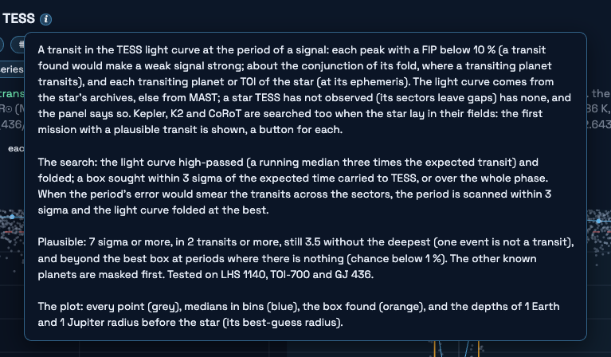
The star
Its SIMBAD name: GJ 436, Ross 905, HD 69830, TOI-700 or TIC 307210830 all work. Resolve (or Enter) asks the CDS for its identifiers, position, TIC and Gaia DR3 numbers and aliases, then the NASA Exoplanet Archive and exoplanet.eu for its known planets, and TESS for its TOIs. The answer is kept on disk (in its archives folder once gathered), and the page reads it from there the next time.
The known planets are the NASA Exoplanet Archive's, each with its published solutions, and under each the values of exoplanet.eu, a second opinion: the two mostly agree, not always (another paper taken), and each has planets, or times of transit, the other lacks (a planet only exoplanet.eu has is listed as such). Both catalogues are kept on this machine once fetched; exoplanet.eu's comes in the background the first time (its server takes minutes).
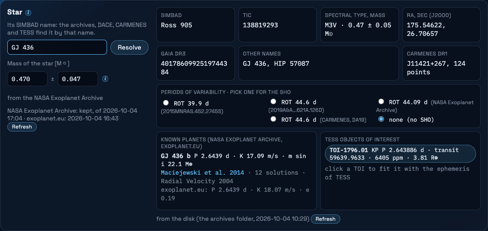
The mass of the star is the archive's for a planet host, else a rough one from its spectral type (the table of Pecaut and Mamajek). Its radius and effective temperature are best guesses, in that order: the NASA Exoplanet Archive, the TESS Input Catalog (Gaia, and the relations of Mann et al. for the cool dwarfs), APERO's database, the same table by spectral type. The radius sets the depths of a transit (and the radius of a planet from one), the temperature the equilibrium temperature of a planet.
The star of a file, by its APERO name
Give a file of velocities with the name empty, and the page fills it: the file's OBJECT column (LBL keeps the header key of each spectrum), else its name (lbl_<OBJECT>_<TEMPLATE>.rdb), looked up in APERO's database of names exactly as APERO looks (the same cleaning of the name, its variants and aliases), which gives its SIMBAD name. The line under the name says how.
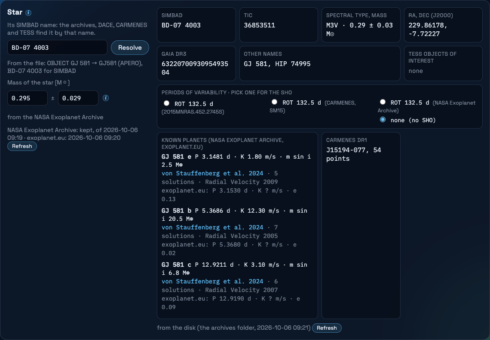
APERO's database is the astrometrics folder of its assets. Its YAML files come first in the tarball of
APERO's assets server, so koloa reads a few megabytes of it and stops, with no APERO installed. The copy
is made at the first lookup, again with koloa --refresh-apero or the page's button (Batch FIP
tab).
The velocities
Your files, one row each: an LBL .rdb (SPIRou, NIRPS, HARPS, ESPRESSO, HARPS-N), a csv with rjd, vrad and svrad (and indicators with their errors), or a csv of DACE. The instrument column is left empty when the file says it (the names of its reduced files, APERO's keys), or names it (NIRPS_LBL2 against NIRPS, two reductions of one instrument, each with its own offset). Below them, the archives folder, and the archives already gathered for the star with their number of points: tick those to plot, and the report uses them.
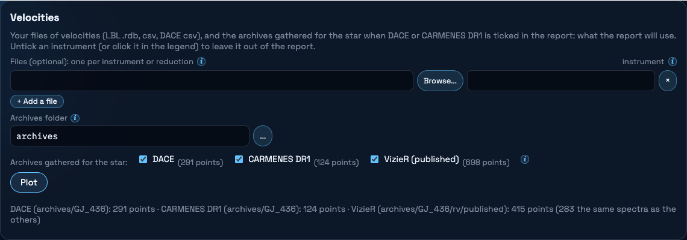
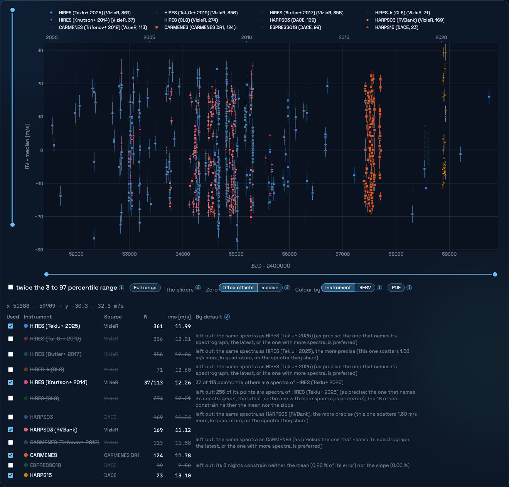
Zero: each instrument about the solution shown (fitted offsets) or about its own median. The solution is one for every instrument, the trend and the signals; each instrument sits about it, the median of its velocities minus it zero over its own epochs, so that the instruments run on from one to the next. Colour by the instrument or the BERV (from LBL, DACE and CARMENES). The DACE copy of an instrument of your files (NIRPS_DACE: the same spectra through DACE's pipeline, less precise than LBL's) is left out the first time it is seen, and the note says so: one tick adds it back.
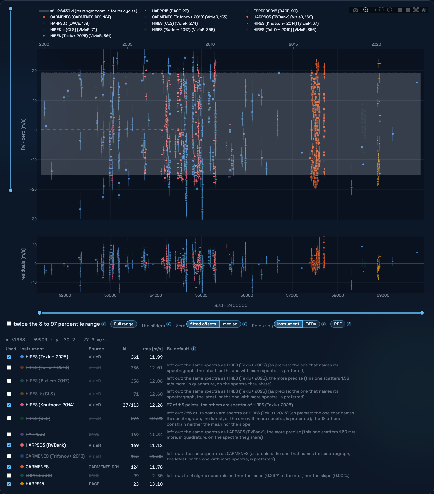
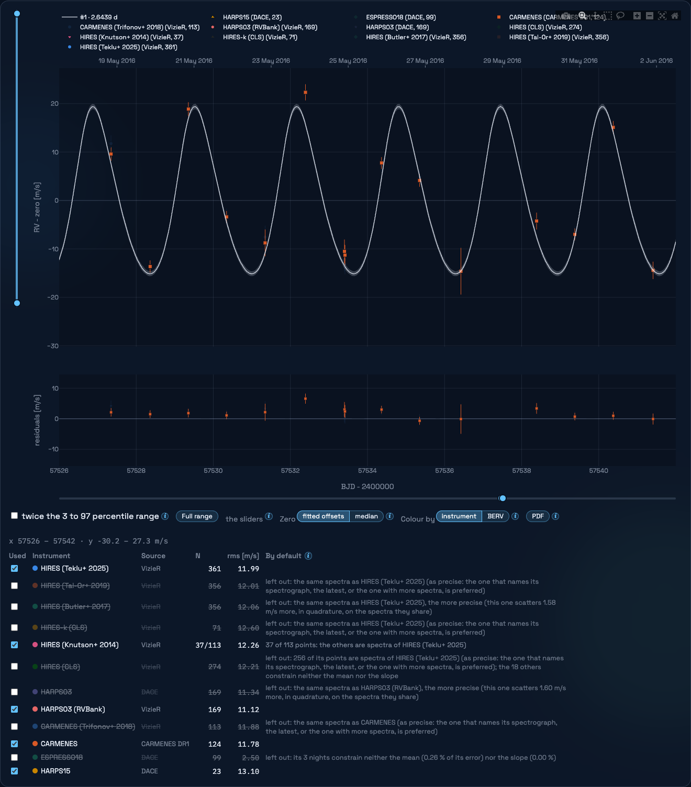
Gathering the archives
What is known of a star, in one folder of its own (archives/GJ_436/): DACE (HARPS, ESPRESSO, NIRPS, CORALIE... with your key, what your account may see; without it, the public data), CARMENES DR1 (about 360 M dwarfs of the north, 2016 to 2020, corrected for the nightly zero points), the velocities published on VizieR, and every TESS sector at MAST (with the light curves of Kepler, K2 and CoRoT when the star lay in their fields). VizieR has a box per source: Keck HIRES (Teklu et al. 2025; Tal-Or et al. 2019), the California Legacy Survey (HIRES, the APF and the Lick Hamilton), the Lick Hamilton (Fischer et al. 2014), HARPS by SERVAL (Trifonov et al. 2020), and the tables of the star's papers in its SIMBAD bibliography.
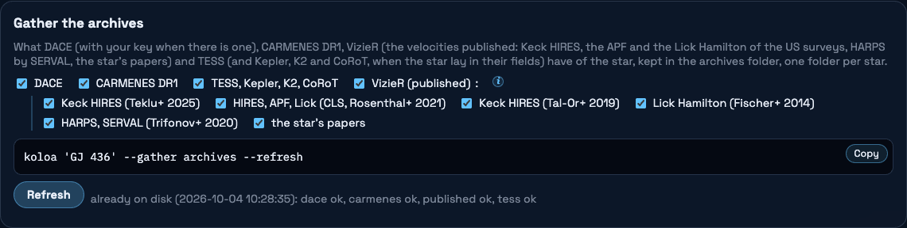
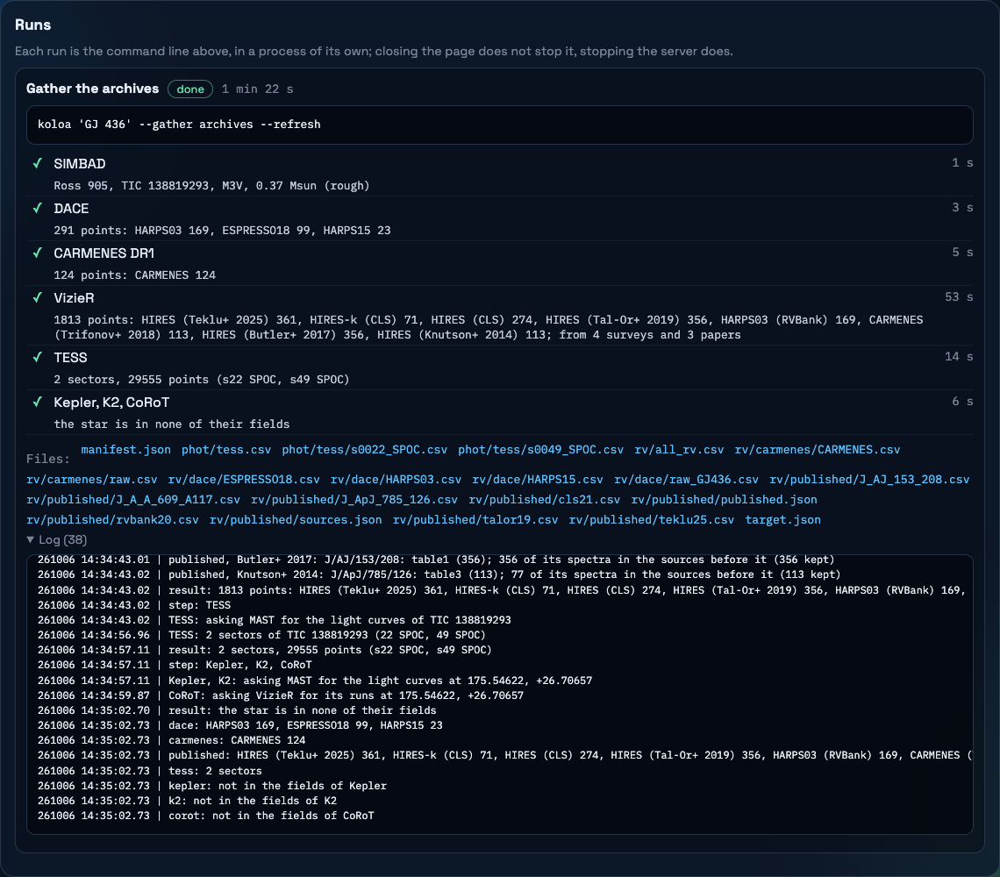
The quick FIP
A first look before the report: the FIP of exactly what the plot shows (the files, the archives ticked, the instruments kept), outlier-aware, in nightly means, with no GP. It starts on its own for one instrument; with several, untick those to leave out first, then compute it (Stop ends it). Two passes, as in the report: the errors of each instrument inflated to the noise of a fit without planets, a FIP; then to the noise of a fit with the signals found and the known planets (their variance is not noise), and the FIP again. About a minute for one instrument, longer with many; a bar shows the time left.
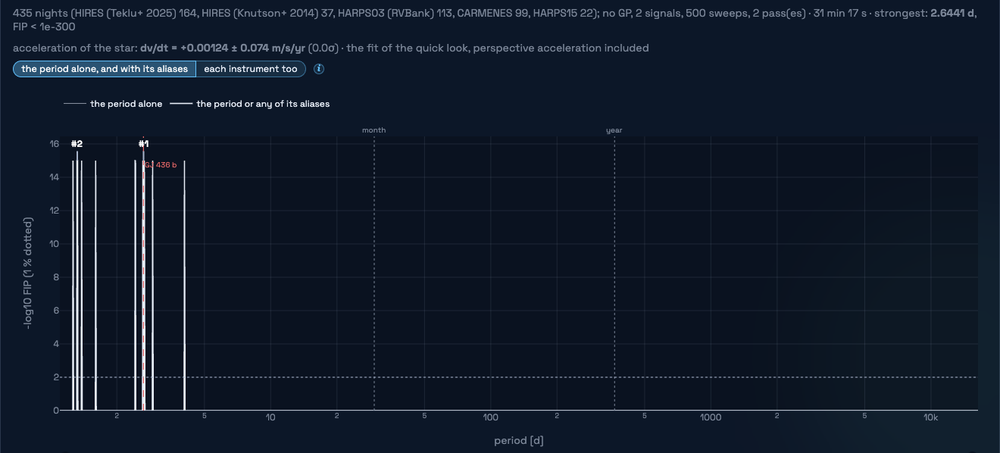
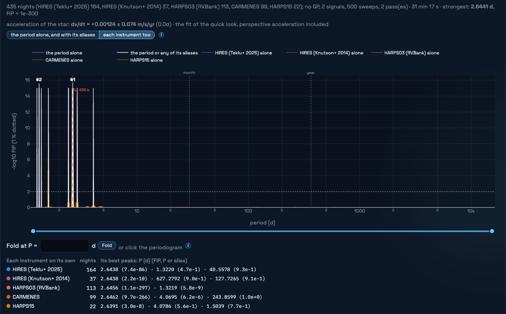
Click the periodogram, or type a period in Fold at P, to fold anywhere: the fold snaps to the dip of the FIP within a peak's width. Recompute the FIP after changing what is plotted; Remember the result keeps all of it.
The folds
The nightly means folded at a numbered peak: a sinusoid fitted with an offset per instrument and the trend, each night weighted by its probability of being valid (from the FIP: an outlier hardly counts), phase 0 at the conjunction. Its period is refined within the peak, the other peaks fitted with it there (the grid point of the FIP is a fraction of a peak off: over a long series, enough for a sinusoid to drift in phase from one end to the other). Its line gives P with its error, K and the rms; with the mass of the star, the minimum mass in Earth, Neptune and Jupiter masses (its errors from draws of K, P and the mass, one ± when its two sides are alike), and the equilibrium temperature of the planet (for a Bond albedo of 0 and of 0.3, from the period, the mass, the radius and the temperature of the star).
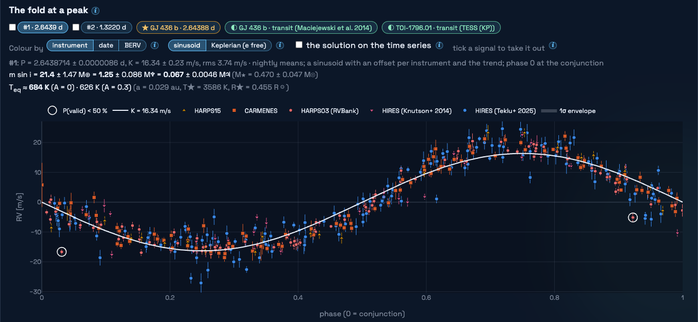
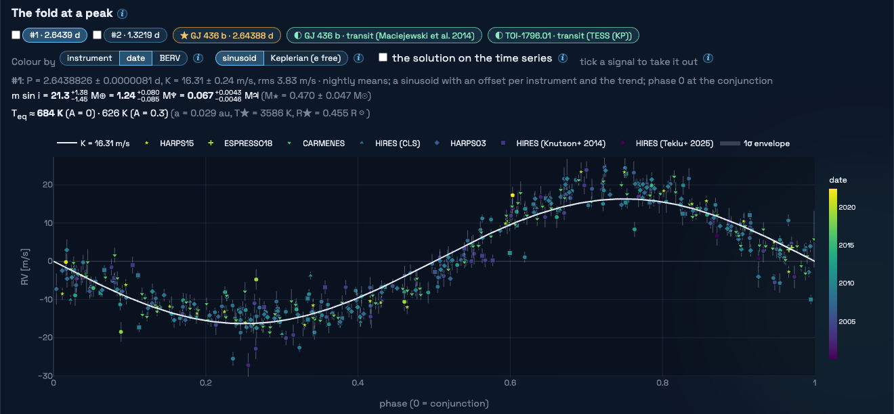
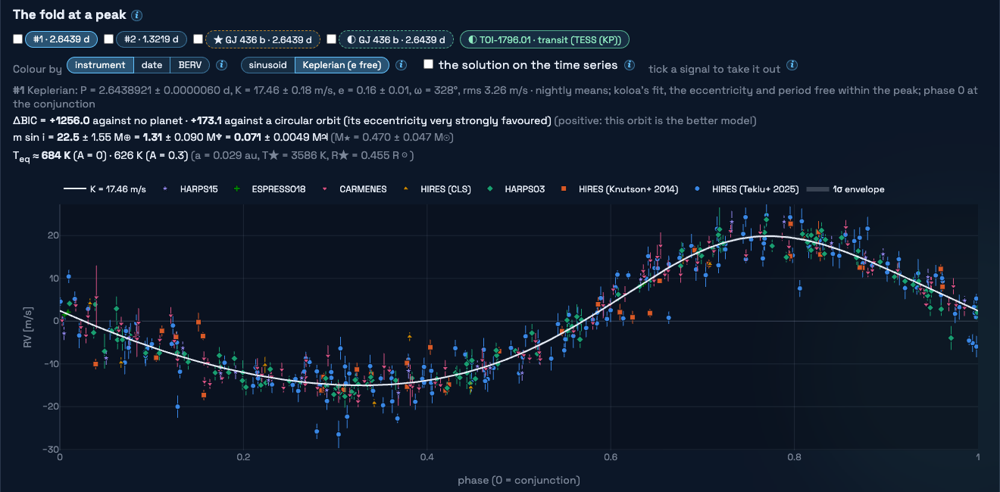
The buttons beyond the peaks fold at the published orbit of each known planet (★, its solution and envelope drawn, whatever the FIP says) and at the transit ephemeris of each transiting planet or TOI (◐: phase 0 at the transit, the ephemeris carried to the velocities with its error, and the conjunction the velocities put on their own set against it).
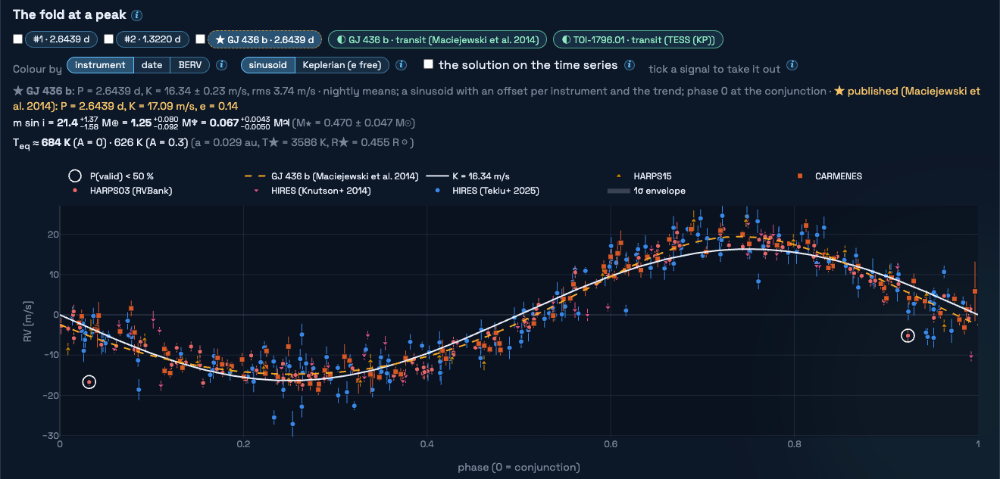
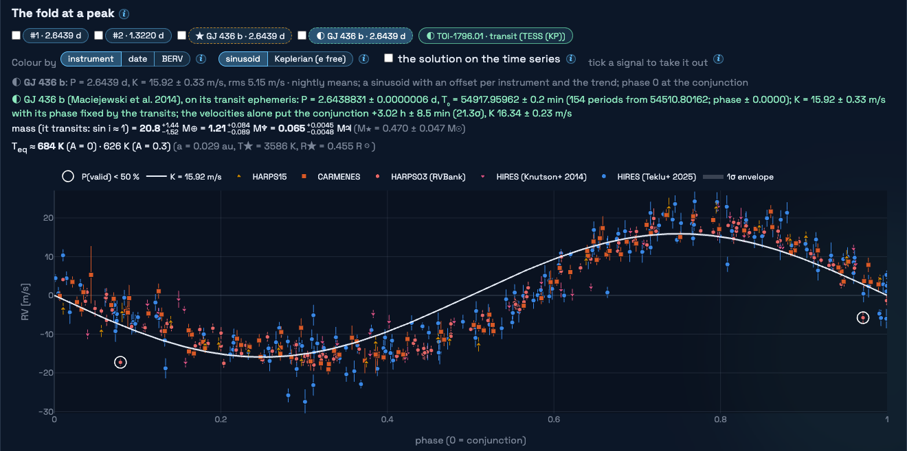
Tick a signal (the box before its button) to take it out of the velocities: its sinusoid, or its Keplerian orbit when that is the model shown as it is ticked (not its offsets and trend, which the FIP fits again). Several can be ticked: each fold is then fitted on the velocities without the other ticked signals, the solution on the time series is their sum, and the FIP of what is left is computed after each subtraction, in the order ticked, and drawn over the FIP of the series in the colour of its tick. A second planet the first one hid shows up, or the activity, or nothing; a click on a peak of the last one folds there, and a tick goes on; untick to put a signal back. Tick the Keplerian of an eccentric orbit rather than its sinusoid: a sinusoid leaves the orbit's harmonic at half the period, a peak of its own in what is left.
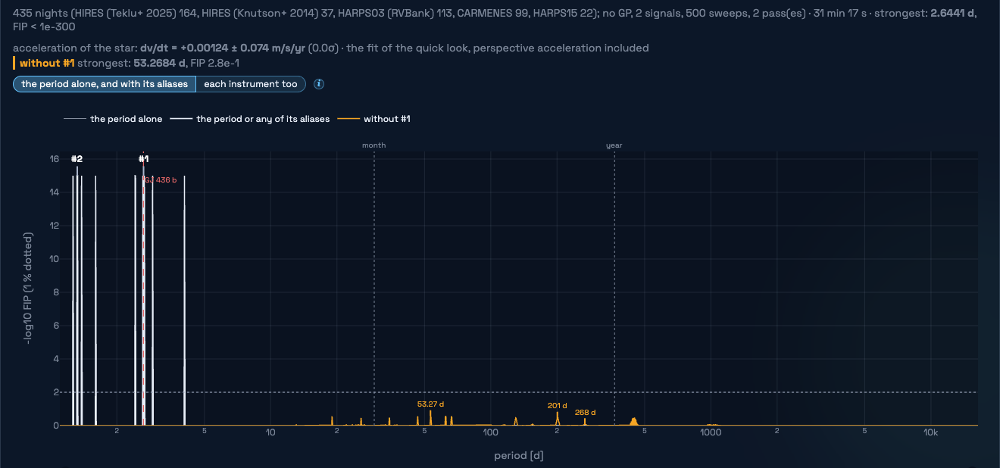
A transit in TESS
A transit found would make a weak velocity signal strong. Under the folds, each peak with a FIP below 10 % is looked for in TESS, about the conjunction of its fold (where a transiting planet transits), and so is each transiting planet and TOI of the star at its ephemeris. The light curve is the star's archives', else every sector at MAST. A star TESS has not observed yet has none, and the panel says so (its sectors leave gaps: GJ 1214, for one, is in none so far), with the sectors to come when tess-point is installed.
Kepler, K2 and CoRoT are searched too when the star lay in their fields: the long cadence of Kepler, the K2SFF light curves of K2 where there are some, the light curves of CoRoT kept at the CDS. The first mission with a plausible transit is the one shown, and a button for each mission that has the star searches its light curve.
- The light curve: split into stretches (a sector, at its gaps of more than 0.2 day), the first 0.25 day after each gap left out (the ramp of TESS as it starts again), each stretch high-passed on its own (a running median three times the expected transit, a robust line near its ends), flares clipped.
- The search: boxes of half, one and two times the duration of a central transit, within 3 sigma of the expected time carried to the epochs of TESS (the error of a conjunction from a sinusoid includes the offset an eccentric orbit gives it), or over the whole phase. When the error of the period would smear the transits across sectors years apart, the period itself is scanned, coarse then fine, and the light curve folded at the best.
- The depth: a box fitted by least squares to the medians of the folded light curve in fine bins (the deepest box of the search follows the deepest points; the fit's depth is the transit's mean level), and the radius of the planet from it.
- Plausible: 7 sigma or more, in 2 transits or more, still 3.5 sigma without the deepest (one event is not a transit seen twice), and beyond the best box at periods where there is nothing, with a chance below 1 % (an active star, or the systematics of a light curve, make dips of their own at any period). The transits of the star's other known planets are left out first.
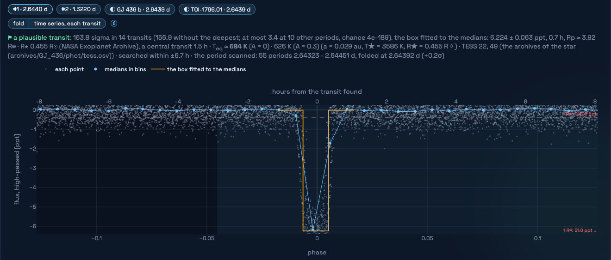
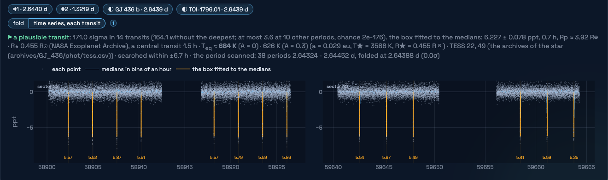
The search was tested on LHS 1140 b and c, TOI-700 b, c, d and e and GJ 436 b (found at their published radii, from their ephemerides, from a conjunction as the velocities give it and over the whole phase) and at periods where there is nothing (none found), and in the other missions on Kepler-21 b (Kepler), K2-18 b and K2-3 b, c and d (K2) and CoRoT-7 b (CoRoT). A star as active as AU Mic makes dips as deep as its planets at any period, and the panel says so rather than claim a transit.
The detailed report and the analysis script
The card of the report sets its options (the signals of the FIP and its sweeps, the periods to search, a GP of the activity in the FIP, by band or an SHO at the rotation, the TOIs to fit with their transits, the instruments to leave out, the trend, every exposure or nightly means, the archives, a detection map, an MCMC of the orbits) and shows the command line they make; Make the report runs it, and its steps and log show in Runs, its PDF at the end.
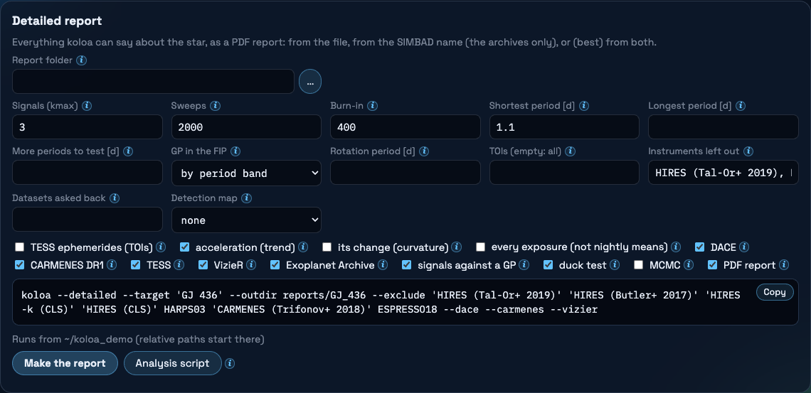
Analysis script writes a kit to run, and change, the analysis yourself, offline: a .tar.gz with analysis.py, the analysis step by step calling koloa's routines (the velocities read and put together, a fit of their noise, the FIP in two passes, the Keplerian orbits of the signals with their errors and minimum masses, the acceleration of the star, the folds, the FIP of the residuals), every step explained at length in its comments in the language of the page and its figures saved as PDF; your files; the archives gathered for the star; and star.yaml, what SIMBAD, the archive and TESS say of the star. Its settings are those of the card: a starting point for a student, or for a change koloa does not make.
The PDF button of the plot writes the quick look as it is shown (the series in its ranges, the quick FIP, the folds, the transit), with a page of numbers.
Remembered targets
Remember the result keeps the page as it is (the star, the files, the archives ticked, the instruments left out, the options of the report), the quick FIP and its folds, and a copy of the velocities and of the archives, with a note of your own. The Remembered targets tab lists them; Recall puts one back in the Analysis tab as it was (the original files while they have not changed, else their copies).
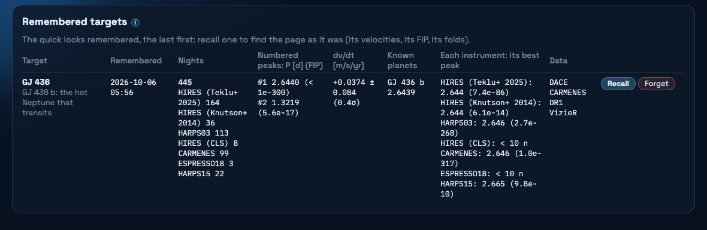
The batch FIP
The quick FIP of many files, one after the other: add them (several in the dialog, or every file of a folder that matches a pattern, or one of several patterns separated by spaces) and run. Each file is on its own, or, with every archive ticked, with every archive of its star (DACE, CARMENES DR1, VizieR; gathered once into the archives folder, then read from there). The star of each file is found by its APERO name.
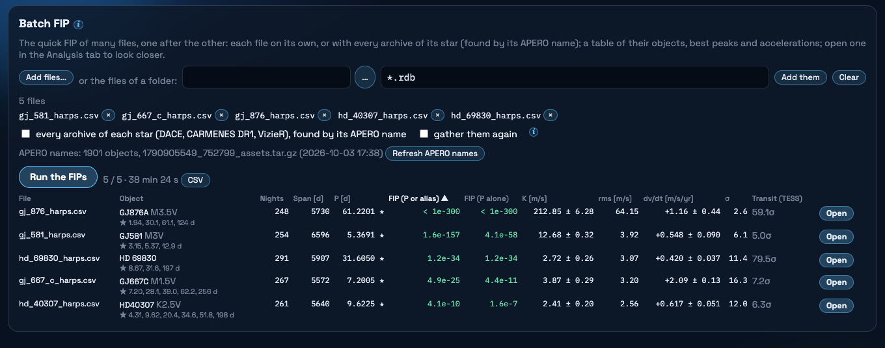
Click a header to sort, CSV to save it (with the APERO and SIMBAD names, the planets, the instruments and the transit), Open to take a file to the Analysis tab with its quick FIP, its star and its archives. The table fits the window; Stop ends the batch.
GJ 436 from its name
No file at all: the star's name, its public archives, and what the GUI makes of them, step by step. The numbers below are those of the run that took the screenshots of these pages.
- Type
GJ 436and Resolve: the star card (The star). - Gather the archives (here with no DACE key: the public data), then tick them all under the velocities and Plot (The velocities).
- Compute the quick FIP, untick an instrument first if it should not count (The quick FIP).
- Look at the fold of peak #1, coloured by date, as a Keplerian, on the series (The folds).
- Read the TESS panel under it (A transit in TESS).
- Tick peak #1 with the Keplerian chosen: its orbit is taken out, and the FIP of what is left is drawn over the first (The folds).
- Remember the result; make the report, or the analysis script, from the same card (The report and the script).
The public archives of GJ 436 give 830 velocities in 445 nightly means (HIRES (Teklu+ 2025) 164, HARPS03 113, CARMENES 99, HIRES (Knutson+ 2014) 36, HARPS15 22, HIRES (CLS) 8, ESPRESSO18 3). The quick FIP puts peak #1 at 2.6440 d, with a FIP of the period or any of its aliases of < 10-300; its sinusoid has K = 16.31 ± 0.24 m/s. With the mass of the star, 0.47 M☉, its minimum mass is m sin i = 21.3+1.4−1.5 M⊕. The acceleration of the star is +0.04 ± 0.08 m/s/yr (0.4 σ). Peak #2, at 1.3219 d (FIP 5.6×10-17), is half the period of #1: an eccentric orbit is not a sinusoid, and what the sinusoid at P leaves is mostly its first harmonic, at P/2, of amplitude about e K.
As a Keplerian (e free): P = 2.64389 ± 0.00001 d, K = 17.46 ± 0.18 m/s, e = 0.16 ± 0.01. The published orbit of GJ 436 b, folded beside it, agrees. Its eccentricity is also why the fold at the transit ephemeris puts the conjunction of the velocities hours away from the transit: that of a sinusoid is off by about P e cos ω/π, up to some 3.3 h here.
In TESS (sectors 22, 49), at the period of peak #1 and about the conjunction of its fold: the period scanned over 38 periods, the light curve folded at 2.64388 d; a plausible transit, 171 σ in 14 transits, the box fitted to the medians 6.23 ± 0.08 ppt deep and 0.7 h long: with R★ = 0.455 R☉ (NASA Exoplanet Archive), a radius of 3.9 R⊕. Its equilibrium temperature is about 684 K (no albedo; T★ = 3586 K).
Once its Keplerian orbit is ticked out, the best peak of the residuals is at 52.55 d with a FIP of 0.5: no second planet this run can claim.
Five stars in one batch
Five files of public HARPS velocities, one per star, each with its OBJECT column, run together in the Batch FIP tab, each file on its own: the star of each found by its APERO name, its quick FIP, and a transit looked for in its space photometry where the FIP is below 10 %. With every archive ticked, the archives of each star are gathered and put with its file first: many more velocities, and, with a dozen datasets a star, a far longer run.
| star | APERO name | known planets | nights by instrument | best P [d] | FIP | transit in TESS |
|---|---|---|---|---|---|---|
| BD-07 4003 | GJ581 | GJ 581 e 3.15 d, GJ 581 b 5.37 d, GJ 581 c 12.9 d | HARPS03 248, HARPS15 6 | 5.369 | 1.6×10-157 | 5.0 σ, no |
| HD 156384C | GJ667C | GJ 667 C b 7.2 d, GJ 667 C c 28.1 d, GJ 667 C f 39 d, GJ 667 C e 62.2 d, GJ 667 C g 256 d | HARPS03 185, HARPS15 82 | 7.201 | 4.9×10-25 | 7.2 σ, no |
| BD-15 6290 | GJ876A | GJ 876 d 1.94 d, GJ 876 c 30.1 d, GJ 876 b 61.1 d, GJ 876 e 124 d | HARPS03 235, HARPS15 13 | 61.220 | < 10-300 | 59.1 σ, no |
| HD 40307 | HD40307 | HD 40307 b 4.31 d, HD 40307 c 9.62 d, HD 40307 d 20.4 d, HD 40307 e 34.6 d, HD 40307 f 51.8 d, HD 40307 g 198 d | HARPS03 233, HARPS15 28 | 9.622 | 4.1×10-10 | 6.3 σ, no |
| HD 69830 | HD 69830 b 8.67 d, HD 69830 c 31.6 d, HD 69830 d 197 d | HARPS03 269, HARPS03_EGGS 1, HARPS15 21 | 31.605 | 1.2×10-34 | 79.5 σ, no |
A file of your own, and its archives
The everyday case: an LBL file of SPIRou or NIRPS, its star, and what the archives add.
- Pick the file (Browse...) with the name empty: the star is filled from its OBJECT column (or its file name) through APERO's names, and resolved (The star).
- Gather the archives of the star, tick those to add, and Plot. An instrument the file has too (NIRPS in the file and on DACE) is the same spectra by another pipeline: the archive's is named apart (NIRPS_DACE, its own offset), its exposures within a minute of the file's left out, and NIRPS_DACE itself is left out by default; tick it to compare.
- Several files go in one analysis, a row each: SPIRou and NIRPS, or two reductions of one instrument named apart in the instrument column.
- Then as for GJ 436: the quick FIP, the folds, a transit in TESS, and the report with the same settings.
How it works, briefly
The sampler has up to kmax signal slots. Each update draws one slot's on/off state, frequency and amplitude-prior scale jointly from their exact conditional over the whole grid, with every linear parameter integrated out. A Schur complement makes this one matrix product per grid.
Outlier indicators, jitters and outlier widths are drawn in between. The FIP is Rao-Blackwellised: every update knows the exact probability of every interval, and it is that probability that gets averaged. A FIP of 10-8 is therefore measured, not rounded to zero.
Checked against brute force: the TIPs and outlier probabilities agree with sums over every configuration of signals and outliers to 0.005. The equations are in the mathematics card below.
Understanding outliers
koloa never clips. Its noise is a mixture: every exposure, and every visit as a whole, is either good or an outlier whose variance grows by a width W, and the fit sums over the two possibilities. What comes out, for each exposure, is the probability that it is an outlier: blue when it is reliable, grey when undecided, red when it is an outlier, hollow when it is more likely an outlier than not. The equations are in the noise model.
That says which data are bad, not why. The pipeline records a great deal with every exposure: its S/N, its airmass, its exposure time, how much telluric absorption was removed, how the image sat on the detector, the state of the calibration, the age of the wavelength solution, the activity indicators of the star, the error bar of the velocity. An outlier often has one of them off: a cloud (low S/N), a star low in the sky (high airmass, strong telluric lines), a shifted image, a spot crossing the star (DTEMP, d2v). koloa.outliers.explain asks, for every outlier, which of them are significantly off.
How an outlier is compared
- A single exposure is compared with the good exposures of its own visit: the same night, the same star, the same sky. Its deviation is counted in units of the scatter of a good exposure about the others of its visit.
- A whole visit (or a visit of one exposure) is compared with the good visits nearest in time, in units of the scatter of a good visit about its neighbours, so that seasons, slow drifts and activity cycles are not taken for anomalies.
- Significantly off means two things at once. The deviation z must be beyond the normal threshold for the number of keys tested (with 30 keys, one would be beyond 2.4 sigma by chance at the 1 % level: the Bonferroni correction raises the threshold to about 3.6). And at most 1 % of the good data may deviate as much, a guard against keys with heavy tails. A text key (the type of observation, the position of a rhomb) is off when its value is rare among the good exposures.
- What the outliers share: the same question for all the outliers of an instrument together, by a permutation test (each z clipped at 3, so that one extreme outlier cannot make a trend alone), corrected for the number of keys by Holm's method.
The keys, per instrument
With keys='auto', koloa recognises the instrument from its name or its columns and takes its list, plus every activity indicator of the series; any other column can be passed by name.
| key | what it is | a problem when | SPIRou | NIRPS | DACE |
|---|---|---|---|---|---|
| svrad | error bar of the velocity [m/s] | high | ✓ | ✓ | ✓ |
| EXTSN035 | S/N (order 35, EXTSN035) | low | ✓ | ||
| snr_rate | S/N squared per second of exposure: the flux collected (clouds, seeing, guiding lower it) | low | ✓ | ✓ | ✓ |
| snr_goal | S/N over its goal (SNRGOAL) | low | ✓ | ||
| EXPTIME | exposure time [s] | either way | ✓ | ✓ | |
| AIRMASS | airmass | high | ✓ | ||
| TLPEH2O | telluric water absorption (TLPEH2O) | high | ✓ | ✓ | |
| TLPEOTR | other telluric absorption (TLPEOTR) | high | ✓ | ✓ | |
| TLPDVH2O | velocity of the water model (TLPDVH2O) | either way | ✓ | ✓ | |
| TLPDVOTR | velocity of the other absorbers (TLPDVOTR) | either way | ✓ | ✓ | |
| SHAPE_DX | shift of the image along x (SHAPE_DX) | either way | ✓ | ✓ | |
| SHAPE_DY | shift of the image along y (SHAPE_DY) | either way | ✓ | ✓ | |
| SHAPE_A | shape of the image (SHAPE_A) | either way | ✓ | ✓ | |
| SHAPE_B | shape of the image (SHAPE_B) | either way | ✓ | ✓ | |
| SHAPE_C | shape of the image (SHAPE_C) | either way | ✓ | ✓ | |
| SHAPE_D | shape of the image (SHAPE_D) | either way | ✓ | ✓ | |
| CCF_EW | width of the CCF (CCF_EW) | either way | ✓ | ✓ | |
| ITE_RV | LBL iterations (ITE_RV) | high | ✓ | ✓ | |
| RESET_RV | LBL reset of the velocity (RESET_RV) | high | ✓ | ✓ | |
| wave_age | days since the wavelength solution was taken | high | ✓ | ✓ | |
| DPRTYPE | type of observation (DPRTYPE) | either way | ✓ | ✓ | |
| SBCFPI_T | Fabry-Perot temperature (SBCFPI_T) [C] | either way | ✓ | ||
| SBCFPE_T | Fabry-Perot temperature (SBCFPE_T) [C] | either way | ✓ | ||
| SBCFPB_P | Fabry-Perot pressure (SBCFPB_P) | either way | ✓ | ||
| SBCDEN_P | density of the calibration (SBCDEN_P) | either way | ✓ | ||
| SBRHB1_P | position of rhomb 1 (SBRHB1_P) | either way | ✓ | ||
| SBRHB2_P | position of rhomb 2 (SBRHB2_P) | either way | ✓ | ||
| EXTSN060 | S/N (order 60, EXTSN060) | low | ✓ | ||
| TEL AIRM START | airmass | high | ✓ | ||
| TEL AMBI FWHM START | seeing [arcsec] | high | ✓ | ||
| INS TEMP13 VAL | instrument temperature (INS TEMP13) | either way | ✓ | ||
| INS TEMP14 VAL | instrument temperature (INS TEMP14) | either way | ✓ | ||
| INS PRES108 VAL | instrument pressure (INS PRES108) | either way | ✓ | ||
| spectro_sn50 | S/N (order 50) | low | ✓ | ||
| texp | exposure time [s] | either way | ✓ | ||
| cal_drift_noise | noise of the drift of the reference | high | ✓ | ||
| cal_drift_rv | drift of the simultaneous reference | either way | ✓ | ||
| cal_therror | error of the wavelength calibration | high | ✓ | ||
| ccf_noise | photon noise of the CCF | high | ✓ | ||
| ccf_asym | asymmetry of the CCF | either way | ✓ | ||
| spectro_ca | Ca II index | either way | ✓ | ||
| spectro_na | Na I index | either way | ✓ | ||
| dpr_type | type of observation (dpr_type) | either way | ✓ | ||
| indicators | every activity indicator of the series: DTEMP, d2v, d3v, dW, FWHM, contrast, CRX and the chromatic slope from LBL; FWHM, bisector, R'HK, S index and H alpha from DACE | either way | ✓ | ✓ | ✓ |
Three stars
GJ 687 (SPIRou, data of the SPIRou team): 852 exposures in 214 visits, the known planet (38.142 d) fitted with the mixture. 13 exposures are outlying: 3 whole visits and 0 single exposures.
- 2020-07-03, a visit of 4 exposures, -36.0 m/s (8.1 sigma) off the model, compared with the good visits nearest in time: significantly off: airmass 1.83 against 1.53 (z +10.2); other telluric absorption (TLPEOTR) 1.89 against 1.6 (z +10.0).
- 2021-08-22, a visit of 5 exposures, +24.2 m/s (5.6 sigma) off the model, compared with the good visits nearest in time: nothing significantly off (closest: S/N (order 35, EXTSN035), z -3.0; S/N over its goal (EXTSN035 / SNRGOAL), z -2.9).
- 2021-10-28, a visit of 4 exposures, +15.8 m/s (3.6 sigma) off the model, compared with the good visits nearest in time: nothing significantly off (closest: other telluric absorption (TLPEOTR), z +4.7; airmass, z +4.0).

Proxima (NIRPS, data of the NIRPS team): 765 exposures in 254 visits, the known planet (11.1846 d) fitted with the mixture. 2 exposures are outlying: 1 whole visit and 0 single exposures.
- 2023-06-28, a visit of 2 exposures, +30.7 m/s (12.4 sigma) off the model, compared with the good visits nearest in time: significantly off: shift of the image along x (SHAPE_DX) -0.0641 against -0.0237 (z -33.9); shape of the image (SHAPE_A) 0.99999 against 1 (z -14.5); shape of the image (SHAPE_B) -1.44e-06 against 8.27e-07 (z -5.9); shape of the image (SHAPE_C) 1.17e-05 against 5.08e-06 (z +5.0).

HD 69830 (HARPS, public HARPS velocities from DACE): 712 exposures in 273 visits, the known planets (8.669, 31.62, 201 d) fitted with the mixture. 5 exposures are outlying: 0 whole visits and 5 single exposures. What they share: FWHM of the lines, higher in the outliers (2 of 5 beyond 2 sigma; mean z, clipped at 3, +1.7; p = 0.002).
- 2003-10-31 09:02, an exposure, +6.6 m/s (11.5 sigma) off the model, compared with the good visits nearest in time: significantly off: drift of the simultaneous reference -0.00581 against 3.56e-05 (z -14.1).
- 2006-12-06 07:38, an exposure, -4.2 m/s (5.7 sigma) off the model, compared with the other exposures of its visit: nothing significantly off (closest: H alpha index, z +2.0).
- 2007-12-16 07:40, an exposure, +5.4 m/s (8.6 sigma) off the model, compared with the other exposures of its visit: nothing significantly off.
- 2013-01-26 04:59, an exposure, +4.9 m/s (9.6 sigma) off the model, compared with the good visits nearest in time: significantly off: drift of the simultaneous reference 0.109 against 0.000724 (z +261.0); noise of the drift of the reference 0.000832 against 0.000157 (z +181.3); FWHM of the lines 6.43e+03 against 6.41e+03 (z +4.7).
- 2014-10-18 09:43, an exposure, -80.0 m/s (162.3 sigma) off the model, compared with the good visits nearest in time: significantly off: asymmetry of the CCF 0.0823 against 0.0232 (z +163.3); contrast of the lines 56.7 against 59.9 (z -125.6); bisector span -175 against -64.2 (z -111.3); FWHM of the lines 6.59e+03 against 6.41e+03 (z +52.9).

In your code
Use cases, as tests
Each page is one use case, written as a test: the question it asks, the data, the command that runs it, and the criteria a correct method must meet, each checked on the outputs of that run and marked PASS or FAIL (INFO where there is no truth to check against). The results and figures follow. The simulated cases know the truth; the real stars are checked against what is known of them. 35 of 41 criteria pass over 15 use cases.
- simulated
- No planetDoes koloa report a planet where there is none, when some exposures and some whole visits are outliers?2/2
- A planet behind outliersDoes koloa find a planet hidden behind outliers, and measure its amplitude?3/4
- Orbit posteriorsDo outliers bias the posterior of an eccentric orbit, and are koloa's intervals honest?2/3
- Two planetsDoes koloa's sampler find two planets at once, under outliers?2/3
- Activity and a planetDoes a joint fit of the activity (a GP) and the orbit recover K, where a GP fitted first and an orbit fitted to what it leaves does not?3/3
- How many outliersHow large a fraction of outliers can a fit take? The mixture against a Student-t and least squares.2/2
- Recovery mapsWhich planets could a series have found, and is the false-alarm rate what it claims?2/2
- The campaignOver many series, how often does each method report a false planet or find a real one, and do its probabilities mean what they say?2/3
- A star's accelerationCan the acceleration of a star (the pull of a companion) be measured under outliers?2/2
- real stars
- TOI-2120 bDoes the K of a known transiting planet survive more and more bad visits?2/2
- HD 69830 from DACEDoes koloa find the known planets of a star from the public velocities of every instrument that observed it, and measure them as published?6/6
- Kepler-21 bCan koloa measure a small transiting planet under stellar activity?1/1
- GL 725 A and BDo the two stars of a binary pull on each other as their masses say?2/2
- Rotation from DTEMPCan the rotation of a star be measured from its temperature indicator, robustly, with a GP?3/4
- M dwarfs, PCA2DDoes cleaning the spectra with PCA2D help, and does koloa find the known planets of M dwarfs with many visits?1/2
A planet that is not there
python demos/demo_false_alarm.py- ✓ PASSkoloa reports no planet: no interval reaches FIP < 1% in any series.koloa 0 of 10; for comparison the fixed-jitter FIP 1, the soft clip 0, the hard clip 0
- ✓ PASSIt flags the clear outliers and leaves the good exposures alone.clear 13 of 13, good 0 of 155 (the series shown)
No planet: noise on a real NIRPS sampling, a 2 m/s visit jitter, and outliers of both signs, clear (whole visits and single exposures six to eight median errors off) and borderline (two to four). Over 10 such series, the single-signal FIP with a fixed jitter reports a planet (FIP < 1%) in 1 of them, the soft clip in 0, the hard clip in 0 and koloa in 0.
Shown: the first series that fools the fixed-jitter FIP (seed 2), with a "planet" at 15.01 d and FIP = 5.3×10-3. koloa's best interval has FIP = 0.93. It flags 13 of the 13 exposures moved by clear outliers, 4 of the 13 borderline ones (their mean outlier probability is 0.37), and 0 of the 155 good ones.

Every visit, judged whole

Colour is the outlier probability (blue reliable, grey undecided, red outlier). Points more likely outliers than not are also drawn hollow.
A planet that is there, behind outliers clear and borderline
python demos/demo_recovery.py- ✓ PASSThe best interval of koloa's FIP is the planet.16.58 d
- ✗ FAILIts FIP passes the detection threshold, FIP < 1%.koloa 1.1×10-2; the fixed-jitter FIP 1.00, the hard clip 4.2×10-3
- ✓ PASSThe 68% interval of K holds the true K.K = 4.73 +0.67/−0.46 m/s; the Gaussian orbit 6.61 m/s
- ✓ PASSThe clear outliers are flagged, the good exposures are not.clear 13 of 13, good 0 of 155
K = 5 m/s at 16.65 d, behind outliers clear and borderline. The FIP of the interval of the planet is 1.00 for the fixed-jitter FIP, 1.00 after a soft clip, 4.2×10-3 after a hard clip and 1.1×10-2 for koloa. koloa flags 13 of the 13 exposures moved by clear outliers, 2 of the 13 borderline ones (their mean outlier probability is 0.23), and 0 of the 155 good ones. Its orbit gives K = 4.73+0.67−0.46 m/s; the Gaussian orbit 6.61+1.72−1.11 m/s.


What outliers do to an orbit: posteriors by MCMC
python demos/demo_posterior.py- ✓ PASSWith the outliers, koloa's K is unbiased: its median error is smaller than its median uncertainty.median error +0.29 m/s, uncertainty 0.65; the Gaussian likelihood +1.60 and 1.77
- ✓ PASSIts 68% intervals hold the true K and e as often as they should (21 to 33 of 40, binomial 2σ).K 23, e 24
- ✗ FAILThe errors scatter as the uncertainties say: the rms of (median − truth)/σ of K is 1 (within 0.22).1.25: the intervals of K are too narrow, on clean series too (not traced yet)
An eccentric planet (P = 11.2 d, K = 10 m/s, e = 0.3, ω = 60°) on a real NIRPS sampling, with outliers clear and borderline. The orbit is sampled by MCMC (koloa.mcmc_orbits: emcee, run until every parameter has 50 autocorrelation times) with the Gaussian likelihood and with koloa's mixture.
Without the outliers both give the same posterior: K = 10.07+0.56−0.54 and 10.07+0.53−0.53 m/s, e = 0.302+0.050−0.050 and 0.299+0.050−0.050. With them, the Gaussian posterior gives K = 9.57+2.04−1.98 m/s, e = 0.300+0.165−0.171 and ω = 39+50−43°; koloa K = 9.76+0.49−0.49 m/s, e = 0.290+0.048−0.045 and ω = 73+12−11°.
Over 40 realisations with outliers, the 68% interval of K holds the true value in 20 for the Gaussian likelihood and 23 for koloa, and that of e in 24 and 24 (about 27 expected). The median half-width of the K interval is 1.77 and 0.65 m/s. On the same series without outliers both likelihoods under-cover K (rms of (median − truth)/σ 1.22 and 1.24): the intervals of K are about 20% too narrow, a problem not traced yet.
A Gaussian fit after an iterative 3-sigma clip of its residuals comes close to koloa in K (median error +0.27 against +0.29 m/s), but its 95% intervals miss the true K in 10, the true e in 7 and the true period in 6 of 40 realisations, against 3, 0 and 1 for koloa. The clip starts from an orbit that the outliers have already bent, and keeps the clear outliers this orbit passes near: the fits that miss K are mostly those that kept clear outliers.


Two planets, one FIP periodogram
python demos/demo_two_planets.py- ✓ PASSIt finds two signals: P(k ≥ 2) > 0.9.0.99
- ✓ PASSEach planet has a lower FIP with koloa than with the single-signal Gaussian FIP.4.31 d: 0.13 against 1.00; 31.4 d: 1.3×10-3 against 1.00
- ✗ FAILEach planet passes FIP < 1%.4.31 d: 0.13; 31.4 d: 1.3×10-3

Two planets and outliers, clear and borderline. The posterior on the number of signals gives P(k ≥ 2) = 0.99; the 4.31-day planet (K = 3.5 m/s) has FIP 0.13 with koloa and 1.00 with the single-signal Gaussian FIP; the 31.4-day planet (K = 4.5 m/s) has FIP 1.3×10-3 with koloa and 1.00 with the single-signal Gaussian FIP.
Activity and a planet, fitted jointly
python demos/demo_gp_joint.py- ✓ PASSThe joint fit recovers K: the median over the realisations is within 20% of the truth.4.51 m/s; its 68% intervals hold the truth in 19 of 30
- ✓ PASSThe sequential fit, for comparison, loses the planet into the GP (median below 80% of the truth).1.80 m/s
- ✓ PASSUnder the GP, koloa flags the clear outliers (90% or more).95% of the clear, 14% of the borderline
A spotted star rotating in 23 d, a K = 4 m/s planet at 9.7 d, and outliers clear and borderline. With the GP period constrained by an activity indicator, the joint fit returns K = 6.17+1.20−0.99 m/s and the sequential fit (GP first, orbit on the residual) 1.87+0.56−0.25 m/s. Over 4 more realisations the joint fit gives 4.1 to 5.3 m/s and the sequential fit 1.9 to 3.8 m/s. koloa flags 6 of the 16 exposures moved by clear outliers, 2 of the 13 borderline ones (their mean outlier probability is 0.17), and 0 of the 152 good ones.
Over 30 further realisations the joint fit gives a median K of 4.51 m/s (scatter 0.93), its 68% interval holding the true value in 19 of them, against 1.80 m/s for the sequential fit; under the GP koloa flags 95% of the clear outlying exposures and 14% of the borderline ones. These are maximum a posteriori fits.
A GP fitted first and an orbit fitted to what it leaves is not a joint fit: koloa's sequential_fit exists to show it, and raises a KoloaWarning.


How many outliers can a fit take? A Student-t against the mixture
python demos/demo_contamination.py- ✓ PASSWith 40% bad visits, the error of K stays below 1 m/s with the mixture.mixture 0.55 m/s; Gaussian 57.4, Student-t 93.7
- ✓ PASSWith 40% bad exposures, the error of K stays below 1 m/s with the mixture.mixture 0.65 m/s; Gaussian 42.7, Student-t 40.8
polyband, a polynomial regression, resists outliers with a Student-t likelihood; koloa can too (likelihood='student'), and the two agree to three decimals. The mixture differs: a flagged outlier keeps no weight at all. On a cubic with outliers of both signs from 3 to 30 sigma, the median error of the fitted curve is, at 30% of outliers, 1.30 sigma for least squares, 0.41 for polyband and 0.16 for the mixture; at 50%, 1.27 and 0.27. The mixture reaches 50% with the robust start it borrows from polyband: the fit of the least deviant 70 or 50% of the points.
An orbit (K = 10 m/s) with bad exposures: at 20% of them the median error of K is 23.10 m/s for the Gaussian, 0.30 for the Student-t and 0.42 for the mixture; at 40%, 42.70, 40.76 and 0.65.
An orbit (K = 10 m/s) with bad visits: at 20% of them the median error of K is 59.16 m/s for the Gaussian, 9.72 for the Student-t and 0.60 for the mixture; at 40%, 57.42, 93.69 and 0.55.

What a series could have found: recovery rates in period and K
python demos/demo_completeness.py- ✓ PASSThe false alarms at K = 0 are at the nominal rate (1%, binomial 2σ).1.0% of 400
- ✓ PASSWith outliers, koloa needs a smaller K than the Gaussian fold, at every period.K found half the time at 8 d: 2.2 m/s against 4.4 (without the outliers 1.5)
Circular planets are injected over a grid of periods and semi-amplitudes and looked for by folding the series at their period (koloa.completeness): an offset and a sinusoid fitted there, outlier-aware or Gaussian, and a planet counts when the gain in log likelihood passes the 1% false-alarm threshold (4.6). On a real NIRPS sampling with outliers clear and borderline, a new series per injection, K is recovered half the time from 2.2 m/s at 10 d with koloa and from 4.4 m/s with the Gaussian fold; without the outliers, 1.5 and 1.5 m/s. Injections at K = 0 fire in 1.0% (koloa) and 1.0% (Gaussian) of the cases, for a nominal 1%.


| series | exposures | visits | K half the time at 10 d | at 100 d | false alarms at K = 0 |
|---|---|---|---|---|---|
| GL 725 B (SPIRou) | 959 | 237 | 1.7 m/s | 3.7 m/s | 0.7% |
| Kepler-21 (HARPS-N) | 98 | 77 | 2.4 m/s | 3.9 m/s | 0.8% |
How often: the injection-recovery campaign
python paper/campaign.py- ✓ PASSWith bad visits and no planet, koloa reports a planet (FIP < 1%) in at most 1 of 100 series.koloa 0%, the fixed-jitter FIP 27%
- ✓ PASSIts peaks with a TIP of 0.90 to 0.99 are real at least 90% of the time.58 of 60; the fixed-jitter FIP 45 of 136
- ✗ FAILOn clean series, it detects the planet as often as the fixed-jitter FIP at FIP < 1%.koloa 11%, the fixed-jitter FIP 24%: the visit jitter makes koloa conservative
800 series on a real NIRPS sampling and its error bars, each with a 2 m/s visit jitter. There are eight cases: no planet or a K = 3 m/s planet, each without outliers, with 7% bad visits, with 4% spiked exposures, or with borderline outliers, both signs. The FIP is computed seven ways on every series (one of them on the visit means, binned first), and a detection is FIP < 1%.


Detection rates alone do not show whether a method's probabilities can be trusted; calibration does. Among the peaks koloa gives a TIP between 0.90 and 0.99, 97% (58 of 60) are real planets. For the fixed-jitter FIP it is 33% (45 of 136).
The overconfident methods fail for different reasons. The fixed-jitter FIP fails on outliers: on clean series 24 of 28 of its peaks at a TIP of 0.90 to 0.99 are real, with bad visits 2 of 50. The white-jitter model, which differs from the visit-jitter model by the visit term only, is overconfident even on clean series: only 16 of 27 of those peaks are real. The simulated population is not the prior of any method, so this is a robustness test, not a proof of calibration.
At FIP < 1% the models with a visit jitter are conservative (on clean data koloa detects 11% of the planets, the fixed-jitter FIP 24%), so the table below compares the methods at a matched false-positive rate: the threshold of each is set on the empty series of the same case. There, koloa and a 3-sigma hard clip have the same power in every case, and both are far ahead of the Gaussian FIPs when there are outliers. For detection alone and outliers this large, a clip does as well; koloa adds a probability for every exposure and visit, and posteriors that do not depend on a decision taken first.

| detections at a matched false-positive rate (none of 100 empty series) | clean | bad visits | spikes | borderline |
|---|---|---|---|---|
| one signal, fixed jitter | 0.42 | 0.02 | 0.00 | 0.08 |
| one signal, soft clip | 0.38 | 0.11 | 0.39 | 0.11 |
| one signal, hard clip | 0.31 | 0.50 | 0.31 | 0.13 |
| sampled, white jitter | 0.47 | 0.00 | 0.08 | 0.10 |
| sampled, visit means | 0.53 | 0.00 | 0.06 | 0.07 |
| sampled, visit jitter | 0.56 | 0.00 | 0.06 | 0.07 |
| koloa | 0.39 | 0.54 | 0.40 | 0.12 |
| method | false positives (no planet) | detections (K = 3 m/s) | ||||||
|---|---|---|---|---|---|---|---|---|
| clean | bad visits | spikes | borderline | clean | bad visits | spikes | borderline | |
| one signal, fixed jitter | 0% | 27% | 7% | 1% | 24% | 10% | 5% | 9% |
| one signal, soft clip | 0% | 1% | 0% | 0% | 24% | 12% | 13% | 9% |
| one signal, hard clip | 0% | 0% | 0% | 0% | 21% | 16% | 19% | 5% |
| sampled, white jitter | 0% | 4% | 0% | 0% | 35% | 4% | 1% | 8% |
| sampled, visit means | 0% | 0% | 0% | 0% | 12% | 0% | 1% | 1% |
| sampled, visit jitter | 0% | 0% | 0% | 0% | 12% | 0% | 1% | 1% |
| koloa | 0% | 0% | 0% | 0% | 11% | 12% | 18% | 2% |
The acceleration of a star under outliers
python demos/demo_secular.py- ✓ PASSkoloa's 95% intervals hold the true acceleration as often as they should (21 to 24 of 24).23 of 24
- ✓ PASSIts intervals are nearly as narrow as without the outliers (within 50%).median half-width 0.38 m/s/yr, 0.32 without the outliers, 0.97 for the Gaussian likelihood with them
An acceleration under outliers: 24 series on a real NIRPS sampling, each with a companion that accelerates the star by 2 m/s/yr, a K = 3 m/s planet, a visit jitter and outliers clear and borderline, the acceleration fitted with the planet. The Gaussian likelihood gives it with a median half-width of 0.97 m/s/yr, koloa 0.38, and the Gaussian likelihood on the same series without outliers 0.32; their 95% intervals hold the true value in 22, 23 and 24 of 24 (68%: 14, 18 and 17).

TOI-2120 b: the same planet under more and more bad visits
python demos/demo_toi2120.py- ✓ PASSOn the series as observed, koloa and the Gaussian likelihood agree on K (within their uncertainties).koloa 5.1 ± 1.1, Gaussian 4.8 ± 1.5 m/s
- ✓ PASSWith 20% of the visits made bad, koloa's K scatters from one realisation to the next by no more than 1.5 times its uncertainty.1.2 m/s against 1.1; the Gaussian 4.6
This is the real SPIRou series of TOI-2120, cleaned by PCA2D (nominal of 2026-09-26) and measured by LBL. It has 316 exposures in 81 visits, most of them four-exposure polarimetric sequences, and two seasons separated by the target's yearly 188-day gap. The planet transits (Hori et al. 2024), so the period and the time of conjunction are priors; the activity is a Matern-3/2 GP with a correlation length of about 50 days. Bad visits are then added to the real series, never moving its sampling: first growing in amplitude, then in number.


In the series as observed, koloa flags 4 visits, at BJD 2460147.1 (-40 m/s), 2460150.1 (-26 m/s), 2460186.9 (+35 m/s), 2460214.9 (-27 m/s). With them set aside, the GP amplitude falls from 8.3 to 3.6 m/s and the visit jitter from 7.9 to 5.7 m/s, and K = 5.1 ± 1.1 m/s (Gaussian: 4.8 ± 1.5). With 20% of the visits moved by 60 to 90 m/s, the Gaussian K scatters by 4.6 m/s from one realisation to the next, and koloa's by 1.2. At 30%, the bad visits become a population comparable to the good one, and koloa sometimes falls back on the Gaussian answer.
HD 69830 from DACE: three known planets, every instrument, fetched and fitted
python demos/demo_dace.py --target HD69830 --host "HD 69830"- ✓ PASSThe FIP finds HD 69830 b (8.67 d): an interval with FIP < 1% within 5% of its period.8.672 d, FIP 6.0×10-59
- ✓ PASSThe FIP finds HD 69830 c (31.56 d): an interval with FIP < 1% within 5% of its period.31.626 d, FIP 5.5×10-53
- ✓ PASSThe FIP finds HD 69830 d (197.00 d): an interval with FIP < 1% within 5% of its period.200.952 d, FIP 6.7×10-25
- ⓘ INFOAnother interval with FIP < 1%?none
- ✓ PASSThe K of HD 69830 b agrees with its most recent published value, Harada et al. 2025 (within 2σ).3.37 ± 0.08 m/s against 3.50 ± 0.17 (0.7σ); Rosenthal et al. 2021: 3.48 ± 0.20 (0.5σ); Lovis et al. 2006: 3.51 ± 0.15 (0.8σ)
- ✓ PASSThe K of HD 69830 c agrees with its most recent published value, Harada et al. 2025 (within 2σ).2.47 ± 0.09 m/s against 2.43 ± 0.16 (0.2σ); Rosenthal et al. 2021: 2.18 ± 0.20 (1.3σ); Lovis et al. 2006: 2.66 ± 0.16 (1.0σ)
- ✓ PASSThe K of HD 69830 d agrees with its most recent published value, Harada et al. 2025 (within 2σ).1.74 ± 0.09 m/s against 1.59 ± 0.18 (0.7σ); Rosenthal et al. 2021: 1.68 ± 0.21 (0.3σ); Lovis et al. 2006: 2.20 ± 0.19 (2.2σ)
DACE serves 886 public velocities of HD 69830 in 336 visits over 19.4 years, from 5 instrument eras (table). koloa fits the noise of each (a white and a visit jitter), inflates the errors of each to it (koloa.fip.inflate_to_fit: the FIP sampler has one jitter for all) and runs the FIP with up to 4 signals. With the noise fitted without planets, the intervals with FIP < 1% are at 31.63 d (1.8×10-10), 8.67 d (6.7×10-9), 201.52 d (1.1×10-3). Those planets are then fitted together by MCMC, every instrument with its offset, jitters and outliers, and the FIP runs again with the noise of that fit: 8.67 d (6.0×10-59), 31.63 d (5.5×10-53), 200.95 d (6.7×10-25); the number of signals has P(k) = 0.00, 0.00, 0.00, 0.22, 0.78 for k = 0 to 4. The K of each planet is set against every solution that the NASA Exoplanet Archive lists, the most recent first (table): the archive's default is the discovery paper, from far fewer velocities than DACE now serves.
| instrument | velocities | visits | years | median error [m/s] | white jitter [m/s] | visit jitter [m/s] | flagged |
|---|---|---|---|---|---|---|---|
| HARPS03 | 712 | 273 | 2003.8 to 2015.3 | 0.33 | 0.44 | 1.14 | 4 |
| HARPS03_EGGS | 9 | 1 | 2007.1 to 2007.1 | 16.26 | 7.72 | 0.00 | 0 |
| HARPS15 | 43 | 21 | 2015.8 to 2020.0 | 0.40 | 0.36 | 0.84 | 1 |
| ESPRESSO18 | 44 | 15 | 2018.8 to 2019.3 | 0.10 | 0.19 | 0.57 | 1 |
| ESPRESSO19 | 78 | 26 | 2019.9 to 2023.2 | 0.10 | 0.20 | 0.93 | 0 |
| planet | P [d] | K [m/s] | e | m sin i [Earth masses] | published K [m/s] |
|---|---|---|---|---|---|
| HD 69830 b | 8.6691+0.0001−0.0001 | 3.37+0.08−0.08 | 0.00+0.00−0.00 | 9.8+0.2−0.2 | 3.50 ± 0.17 (Harada et al. 2025) 3.48 ± 0.20 (Rosenthal et al. 2021) 3.51 ± 0.15 (Lovis et al. 2006) |
| HD 69830 c | 31.6187+0.0030−0.0031 | 2.47+0.09−0.09 | 0.00+0.00−0.00 | 11.1+0.4−0.4 | 2.43 ± 0.16 (Harada et al. 2025) 2.18 ± 0.20 (Rosenthal et al. 2021) 2.66 ± 0.16 (Lovis et al. 2006) |
| HD 69830 d | 201.6030+0.1391−0.1455 | 1.74+0.09−0.09 | 0.00+0.00−0.00 | 14.4+0.7−0.7 | 1.59 ± 0.18 (Harada et al. 2025) 1.68 ± 0.21 (Rosenthal et al. 2021) 2.20 ± 0.19 (Lovis et al. 2006) |


Kepler-21 b with HARPS-N: a small transiting planet under activity
python demos/demo_kepler21.py- ⓘ INFOIs the planet found blind, without its ephemeris?no: koloa FIP at its period 0.97
- ✓ PASSWith the ephemeris and the GP, K agrees with Bonomo et al. 2023 (within 1σ).2.66 ± 0.47 m/s against 2.70 ± 0.46 (Lopez-Morales et al. 2016: 1.99 ± 0.65)
Kepler-21 (HD 179070) is an F6 IV subgiant with a transiting super-Earth at 2.786 d. Its public HARPS-N velocities (DACE, 98 exposures in 77 visits over 5.4 years) scatter by 6.4 m/s, far above their 1.39 m/s errors: activity. No blind FIP finds the planet (koloa FIP at its period 0.97). With the ephemeris from the transits, a GP whose rotation period (12.7 d) comes from the S index, and the perspective acceleration, the joint fit gives Kb = 2.66+0.48−0.45 m/s with koloa and 2.62+0.47−0.46 m/s with a Gaussian likelihood (m sin i = 7.3+1.3−1.3 Earth masses), against 1.99 ± 0.65 (Lopez-Morales et al. 2016) and 2.70 ± 0.46 (Bonomo et al. 2023).


GL 725 A and B with SPIRou: each star pulled by the other
python demos/demo_gl725b.py; python demos/demo_secular.py- ✓ PASSThe two stars accelerate in opposite directions.B -4.78, A +4.80 m/s/yr
- ✓ PASSThe ratio of the accelerations is that of the masses (within 2σ).−aA/aB = 1.00 ± 0.14 against MB/MA = 0.764 (1.7σ)
GL 725 B (SPIRou, 959 exposures in 237 visits over 6.7 years) drifts by -4.78+0.21−0.21 m/s/yr, and GL 725 A the other way, by 4.80+0.64−0.64 m/s/yr. Their perspective accelerations (from Gaia DR3, 0.440 m/s/yr for B and 0.399 for A) are already out of these velocities: APERO computes the barycentric correction with barycorrpy, which is given the proper motion and the parallax of each star. What drifts is the pull of each star on the other. The ratio of the two accelerations, −aA/aB = 1.00+0.14−0.14, should be that of the masses, MB/MA = 0.764 from the mass-luminosity relation of Mann et al. (2019): they are 1.7 sigma apart, and a drift of +0.65 m/s/yr common to both series would close the gap. Taking the perspective accelerations out a second time would have given 0.84+0.13−0.13.
With the drift taken out, the whole koloa analysis finds its best interval at 185.15 d with FIP = 1.1×10-4, and flags 12 exposures; the duck test says NOT A PLANET (activity or systematics more likely): significance, indicators.

What GL 725 A and B ask of each other: at their Gaia DR3 separation, 11.56 arcsec (40.7 au at 3.523 pc), the acceleration of B needs a companion of at least 0.110 M☉ and that of A one of at least 0.111 M☉, whatever the orbit (Torres 1999); A has 0.333 and B 0.254 M☉. Together, the two accelerations and the masses place the stars 6 or 94 au apart along the line of sight, A in front of B.
| star | parallax [mas] | proper motion [mas/yr] | perspective acceleration [m/s/yr] | drift over its series [m/s] |
|---|---|---|---|---|
| GJ 699 | 546.98 | 10393 | 4.5388 ± 3.2e-04 | |
| TOI-2120 | 31.07 | 374 | 0.1036 ± 6.1e-05 | 0.13 |
| GJ 725 A | 283.84 | 2221 | 0.3994 ± 3.3e-05 | |
| GJ 725 B | 283.84 | 2330 | 0.4396 ± 4.7e-05 | 2.96 |
| Kepler-21 | 9.22 | 40 | 0.0040 ± 9.2e-06 | 0.02 |
"Secular acceleration" has two senses: the acceleration of the star itself, above, which is measured, and the perspective acceleration, μ2d, which is geometry and known from Gaia (table). Check first whether the velocities still hold the perspective acceleration. A barycentric correction given the proper motion and the parallax of the star removes it: barycorrpy does (Eq. 28 of Wright & Eastman 2014), and APERO, which reduces SPIRou and NIRPS, gives it the Gaia astrometry of every target. Adding koloa's term to APERO velocities would count it twice; the SPIRou velocities of Barnard's star drift by 1.2 m/s/yr, not by its 4.5. The term is for velocities whose barycentric correction ignores the motion of the star.
GJ 687: the rotation from its temperature indicator, with a robust GP
python demos/demo_rotation.py --nsteps 16000 --nreal 6 --ncpu 9- ✓ PASSThe outlier-aware periodogram of DTEMP3500 finds the rotation of the photometry (Burt et al. 2014, 60 d) within 5%.61.75 d
- ✓ PASSAnother indicator, the FWHM of the lines, peaks at the same period (within 5%).62.40 d
- ✗ FAILThe period at which the power of the SHO peaks agrees with the photometry within 2σ.43.0 ± 6.4 d, 2.5σ from 60 d (the SHO has Q = 1.2)
- ✓ PASSRobust: with 10% of the visits made bad, koloa's period stays within 1σ of the clean one in at least 5 of 6 realisations.koloa 5 of 6; the gaussian likelihood 0
- ⓘ INFOHow many DTEMP values does koloa flag?0 of 852; the gaussian posterior of the period 43.1 ± 6.3 d
The outlier-aware periodogram of DTEMP3500 peaks at 61.75 d (ΔlnL = 120.7), the gaussian one at 61.75 d, and that of the FWHM of the lines at 62.40 d. An SHO GP has an amplitude, an undamped period P0 and a quality factor Q, held above Q = 1: a rotation is quasi-periodic, and below Q = 1/√2 the power of an SHO has no peak. Left free down to Q = 0.3, the maximum a posteriori falls at Q = 0.78 and P0 = 32.3 d, its power peaking at 78.4 d; its log posterior is 0.1 higher than with Q above 1. Fitted to DTEMP3500 by MCMC with koloa's likelihood, it gives P0 = 35.1+4.9−4.1 d and Q = 1.24+0.34−0.17; its power peaks at P0/√(1 − 1/2Q2) = 43.0+6.8−5.9 d, the period to compare with a periodogram and with the 60 d of the photometry (Burt et al. 2014). koloa flags 0 of the 852 values as outliers. With a gaussian likelihood, the peak is at 43.1+6.8−5.8 d. That is 2.5σ below the rotation of the photometry and the peaks of the periodograms: for this star, a single damped oscillator of Q near 1.2 is a poor description of the rotation, which the periodograms of DTEMP3500 and of the FWHM find without it. A sharper kernel (an oscillator at P and one at P/2, or a quasi-periodic one) would be the next test.
With 10% of the visits moved by 4 to 8 times the dispersion of DTEMP3500, over 6 realisations (maximum a posteriori), koloa's period stays within 1σ of the clean one in 5 and the gaussian likelihood's in 0.
| parameter | koloa | gaussian |
|---|---|---|
| P0 [d] | 35.1+4.9−4.1 | 35.1+4.8−4.1 |
| peak of the power [d] | 43.0+6.8−5.9 | 43.1+6.8−5.8 |
| Q | 1.24+0.34−0.17 | 1.22+0.34−0.16 |
| σ [K] | 1.61+0.19−0.17 | 1.59+0.19−0.16 |
| white jitter [K] | 0.00+0.02−0.00 | 0.01+0.02−0.00 |
| visit jitter [K] | 0.41+0.05−0.05 | 0.42+0.04−0.04 |


Three M dwarfs with more than 150 visits, cleaned by PCA2D
python demos/demo_mdwarfs.py- ✓ PASSThe known planets have their published K, within 2σ.GJ 687 b: 5.53 ± 0.43 against 6.14 ± 0.32 m/s; Proxima b: 0.95 ± 0.26 against 1.23 ± 0.06 m/s
- ✗ FAILPCA2D lowers the scatter of the visits of every star.GJ 687 6.85 → 6.16; Proxima 2.02 → 2.71; Barnard's star 3.80 → 4.32 m/s
GJ 687 and Barnard's star with SPIRou, Proxima with NIRPS, three of the M dwarfs with more than 150 visits on the Montreal reduction machines: their telluric-corrected spectra cleaned by pca2d-preclean (no star component, seven observer components) and measured by LBL, the spectra as delivered measured beside them, then analysed by koloa: the FIP periodograms and the duck test, the known planet it can see fitted by MCMC with a linear trend, the drift measured from the velocities alone (APERO's barycentric correction has already removed the perspective acceleration), and what each series could have found.
GJ 687 (SPIRou, cleaned by PCA2D): the best interval of the analysis is at 38.25 d, with a koloa FIP of 1.3×10-12, and the duck test says PLANET CANDIDATE; 9 exposures are flagged. The drift left in the velocities is 0.37+0.53−0.51 m/s/yr: APERO has already removed the perspective acceleration (0.179 m/s/yr from Gaia).
Proxima (NIRPS, cleaned by PCA2D): the best interval of the analysis is at 91.00 d, with a koloa FIP of 8.2×10-7, and the duck test says INCONCLUSIVE; 2 exposures are flagged. The drift left in the velocities is -0.21+0.15−0.15 m/s/yr: APERO has already removed the perspective acceleration (0.446 m/s/yr from Gaia). With a GP of the rotation fitted to the visit means, the known planet has K = 1.19+0.11−0.11 m/s (delivered) and 1.04+0.13−0.13 m/s (PCA2D). With the FWHM fit held to 75 to 110 d, around the published rotation (prior at 77 and 78 d instead of 70 and 71 d), K = 1.19+0.12−0.12 m/s (delivered) and 1.03+0.14−0.13 m/s (PCA2D): the planet does not depend on it.
Barnard's star (SPIRou, cleaned by PCA2D): the best interval of the analysis is at 2870.07 d, with a koloa FIP of 3.0×10-2, and the duck test says NOT DETECTED; 7 visit means are flagged. The drift left in the velocities is 1.21+0.09−0.09 m/s/yr: APERO has already removed the perspective acceleration (4.539 m/s/yr from Gaia).
| star | instrument | exposures / visits | visit scatter, delivered | visit scatter, PCA2D | known planet: K koloa (PCA2D) | K koloa (delivered) | K gaussian | published | drift left (velocities) | perspective (Gaia, removed by APERO) | K half the time, 10 d |
|---|---|---|---|---|---|---|---|---|---|---|---|
| GJ 687 | SPIRou | 852 / 214 | 6.85 | 6.16 | b: 5.53+0.42−0.43 m/s | 6.59+0.40−0.42 | 5.39+0.53−0.52 | 6.14 ± 0.32 | 0.37+0.53−0.51 m/s/yr | 0.179 | 1.7 m/s |
| Proxima | NIRPS | 765 / 254 | 2.02 | 2.71 | b: 0.95+0.28−0.25 m/s | 1.18+0.15−0.16 | 11.18+1.07−1.07 (e = 0.95) | 1.23 ± 0.06 | -0.21+0.15−0.15 m/s/yr | 0.446 | 0.7 m/s |
| Barnard's star | SPIRou | 2093 / 495 | 3.80 | 4.32 | 1.21+0.09−0.09 m/s/yr | 4.539 | 0.8 m/s |


Every module, by example
One short script per module, run from the root of the repository as shown. Under each script is what it printed and, for some, the figure it saved. The scripts are in docs/examples/.
koloa.dataRead a serieskoloa.simulateSimulate a series with known planets and outlierskoloa.periodogramPeriodograms that know about outlierskoloa.fipThe outlier-aware false inclusion probabilitykoloa.fitOrbital elements by MCMCkoloa.instrumentsSeveral instruments: one planet, a noise of their ownkoloa.diagnosticsThe duck testkoloa.outliersWhy an outlier is an outlierkoloa.plottingFigures coloured by reliabilitykoloa.analyzeEverything in one call, and the koloa commandkoloa.completenessWhich planets a series could have foundkoloa.secularThe acceleration of a star, with its errorkoloa.gpGaussian processes for stellar activitykoloa.keplerKeplerian orbitskoloa.weightsClips, with their accountingkoloa.radvel_bridgekoloa's outliers inside radvelkoloa.dopplerRelativistic Doppler shiftskoloa.logThe logkoloa.noiseThe noise model: visit blocks and the outlier mixturekoloa.linearThe analytic evidence of linear models
koloa.data Read a series
RVData reads an LBL .rdb or a csv, groups the exposures into visits from the gaps in time, and keeps the activity indicators next to the velocities.
# numpy, and koloa's series (RVData) and log (timestamped lines, 'value'
# for a number)
from pathlib import Path
import numpy as np
from koloa.data import RVData
from koloa.log import log
# the repository root: this file sits two levels down, in docs/examples
ROOT = Path(__file__).resolve().parents[2]
# the public HARPS-N velocities of Kepler-21, from DACE (the lines that
# start with # are skipped)
# rjd, vrad and svrad are found by name; every other column with an error
# column next to it becomes an indicator (fwhm with sfwhm, smw with
# ssmw, ...)
# the exposures fall into visits: a gap of more than 0.3 day (the
# argument sequence_gap) starts a new one; times in days, velocities and
# errors in m/s
data = RVData.from_csv(ROOT / 'data' / 'kepler21_harpsn_dace_drs3.3.12.csv',
name='Kepler-21')
# npoints, nseq (the visits), baseline [days], median_err, rms and
# robust_rms (1.4826 times the median absolute deviation) [m/s]
summ = data.summary()
log(f'{data.name}: {summ["npoints"]} exposures in {summ["nseq"]} visits '
f'over {summ["baseline"]:.0f} days', 'value')
log(f'median error {summ["median_err"]:.2f} m/s, rms {summ["rms"]:.2f} m/s, '
f'robust rms {summ["robust_rms"]:.2f} m/s', 'value')
# the median velocity of each instrument is taken out and kept in
# zero_point; a file without an instrument column holds one instrument,
# named 'inst'
log(f'zero point taken out: {data.zero_point["inst"]:.1f} m/s', 'value')
# data.seq: the visit of each exposure (0, 1, ... in time order)
sizes = np.bincount(data.seq)
log(f'exposures per visit: {sizes.min()} to {sizes.max()}, median '
f'{np.median(sizes):.0f}', 'value')
# the names of the indicators; each holds its values and their errors
log(f'indicators: {", ".join(data.indicators)}')
# one point per visit: the weighted mean of its exposures
# (with the formal error of that mean)
visits = data.binned()
log(f'binned: {visits.n} points, median error {np.median(visits.err):.2f} '
f'm/s', 'value')
# the first 250 days only (the visits are renumbered)
# select takes a boolean mask or indices and returns a copy
first = data.select(data.time < data.time[0] + 250)
log(f'first 250 days: {first.n} exposures in {first.nseq} visits', 'value')
# an indicator as a series of its own, ready for any koloa tool
# (its median taken out, the points without a value or an error dropped);
# fwhm: the width of the cross-correlation function [m/s]
fwhm = data.indicator('fwhm')
log(f'{fwhm.name}: {fwhm.n} points, robust rms '
f'{fwhm.summary()["robust_rms"]:.2f} m/s', 'value')
# the same times with other values: the residual of a straight line
# tref: the reference time of trends and phases, the mean time [days];
# numpy's polyfit takes its weights as 1/sigma
tt = data.time - data.tref
coeffs = np.polyfit(tt, data.rv, 1, w=1 / data.err)
# with_values: a copy with the same times, visits and errors
resid = data.with_values(data.rv - np.polyval(coeffs, tt))
# the slope is in m/s per day
log(f'trend {365.25 * coeffs[0]:+.2f} m/s per year, residual robust rms '
f'{resid.summary()["robust_rms"]:.2f} m/s', 'value')260929 08:41:01.78 | Kepler-21: 98 exposures in 77 visits over 1972 days260929 08:41:01.78 | median error 1.39 m/s, rms 6.44 m/s, robust rms 6.00 m/s260929 08:41:01.78 | zero point taken out: -19318.7 m/s260929 08:41:01.78 | exposures per visit: 1 to 2, median 1260929 08:41:01.78 | indicators: fwhm, bis, contrast, smw, rhk, halpha260929 08:41:01.78 | binned: 77 points, median error 1.23 m/s260929 08:41:01.78 | first 250 days: 45 exposures in 40 visits260929 08:41:01.78 | Kepler-21 fwhm: 98 points, robust rms 9.66 m/s260929 08:41:01.78 | trend -2.88 m/s per year, residual robust rms 4.33 m/s
koloa.simulate Simulate a series with known planets and outliers
simulate keeps the times, visits and error bars of a real series, adds orbits, a visit jitter and outliers from ready-made recipes, and returns the truth next to the data.
# numpy, and koloa's figures, series, log (timestamped lines, 'value' for
# a number) and simulation
from pathlib import Path
import numpy as np
from koloa import plotting as kplot
from koloa.data import RVData
from koloa.log import log
from koloa.simulate import REALISTIC, simulate
# the repository root: this file sits two levels down, in docs/examples
ROOT = Path(__file__).resolve().parents[2]
# REALISTIC = CLEAR + BORDERLINE: bad visits and spikes, far and near
# each recipe is a dict: kind ('visit': the exposures of a visit move
# together; 'spike': one exposure alone), frac (of the visits, or of the
# exposures), amplitude in median errors (a number: that times 1 + E, E
# exponential of mean 0.5; a (low, high) pair: uniform in it) and label
for rec in REALISTIC:
amp, unit = rec['amplitude'], ('visits' if rec['kind'] == 'visit'
else 'exposures')
# np.ndim is 0 for a number, 1 for a (low, high) pair
size = f'{amp[0]} to {amp[1]}' if np.ndim(amp) else f'{amp}+'
log(f'recipe {rec["label"]:10s} {rec["kind"]:5s} {rec["frac"]:.0%} of '
f'the {unit}, off by {size} median errors')
# a real sampling and its error bars make the most honest injection
# template: the times, visits, error bars and instrument of a real NIRPS
# series are kept, and its velocities (all zero in this file) replaced
tpl = RVData.from_csv(ROOT / 'data' / 'nirps_template.csv',
name='NIRPS template')
# an eccentric planet: P [days], K [m/s], e and omega [rad], and with no
# tp the periastron falls on the first time of the series; the recipes
# above; a 2 m/s jitter shared by the exposures of each visit; seed: the
# random draws; name: the name of the series
sim = simulate(planets=[dict(P=16.65, K=5.0, e=0.2, omega=1.0)],
template=tpl, outliers=REALISTIC, visit_jitter=2.0, seed=10,
name='NIRPS sampling')
# the truth next to the data: which exposures were made outliers
data, mask = sim['data'], sim['outlier_mask']
log(f'{data.n} exposures in {data.nseq} visits, {mask.sum()} made outliers',
'value')
# outlier_label: the recipe of each exposure ('' when good), and
# outlier_offset: what was added to it [m/s]
for label in ('clear', 'borderline'):
sel = sim['outlier_label'] == label
log(f' {label:10s} {sel.sum():2d} exposures in '
f'{len(np.unique(data.seq[sel]))} visits, median shift '
f'{np.median(np.abs(sim["outlier_offset"][sel])):.1f} m/s', 'value')
# signal: the velocity of the orbits alone at each exposure [m/s]
log(f'rms of the orbit {np.std(sim["signal"]):.2f} m/s, of the data '
f'{np.std(data.rv):.2f} m/s', 'value')
# no template: seasons, one visit a night, two exposures back to back,
# and a flare that decays over the next visits
# err: the error bar [m/s], each drawn between 0.8 and 1.2 times it;
# nvisits, per_visit and baseline [days] shape the campaign; a flare
# starts at 5 % of the visits, 6 median errors or more, and fades with
# an e-folding time of 0.5 to 3 days
free = simulate(planets=[dict(P=5.2, K=3.0)], err=1.5, nvisits=40,
per_visit=2, baseline=700,
outliers=[dict(kind='flare', frac=0.05, amplitude=6.0)],
seed=3)
log(f'drawn campaign: {free["data"].n} exposures in {free["data"].nseq} '
f'visits over {free["data"].baseline:.0f} days, '
f'{free["outlier_mask"].sum()} exposures in flares', 'value')
# koloa's web style; prob colours each point by its outlier probability,
# here the truth (0 or 1): the injected outliers are red and hollow
kplot.set_style('web')
fig = kplot.timeseries(data, prob=mask.astype(float),
title='Injected outliers, hollow and red')
path = kplot.savefig(fig, str(ROOT / 'docs/figures/examples/simulate.svg'))
log(f'figure: {Path(path).relative_to(ROOT)}')260929 08:43:53.86 | recipe clear visit 5% of the visits, off by 6.0+ median errors260929 08:43:53.86 | recipe clear spike 2% of the exposures, off by 8.0+ median errors260929 08:43:53.86 | recipe borderline visit 5% of the visits, off by 1.5 to 3.0 median errors260929 08:43:53.86 | recipe borderline spike 2% of the exposures, off by 2.5 to 4.0 median errors260929 08:43:53.86 | 181 exposures in 58 visits, 26 made outliers260929 08:43:53.86 | clear 13 exposures in 7 visits, median shift 28.6 m/s260929 08:43:53.86 | borderline 13 exposures in 7 visits, median shift 7.5 m/s260929 08:43:53.86 | rms of the orbit 3.62 m/s, of the data 10.19 m/s260929 08:43:53.86 | drawn campaign: 80 exposures in 40 visits over 575 days, 4 exposures in flares260929 08:43:53.95 | figure: docs/figures/examples/simulate.svg

koloa.periodogram Periodograms that know about outliers
A planet of K = 5 m/s at 16.65 d behind bad visits and spikes. The GLS and the gaussian profile periodogram peak elsewhere; the outlier-aware periodogram (OAP) peaks at the planet. The window, the aliases and a leave-one-visit-out jackknife say how far to trust a peak.
# numpy, and koloa's figures, series, log (timestamped lines, 'value' for
# a number), periodograms and simulation
from pathlib import Path
import numpy as np
from koloa import plotting as kplot
from koloa.data import RVData
from koloa.log import log
from koloa.periodogram import (aliases, find_peaks, frequency_grid, gls,
influence, jackknife, oap, window)
from koloa.simulate import simulate
# the repository root: this file sits two levels down, in docs/examples
ROOT = Path(__file__).resolve().parents[2]
# the period of the injected planet [days]
PERIOD = 16.65
# the times, visits and error bars of a real NIRPS sampling, with a
# circular planet (K [m/s], tp its time of periastron [days]), 7 % of
# the visits moved as a block by 6 median errors or more, 3 % of the
# exposures alone by 8 or more, and a 2 m/s jitter shared by each visit
tpl = RVData.from_csv(ROOT / 'data' / 'nirps_template.csv',
name='NIRPS template')
sim = simulate(planets=[dict(P=PERIOD, K=5.0, tp=60105.3)], template=tpl,
outliers=[dict(kind='visit', frac=0.07, amplitude=6.0),
dict(kind='spike', frac=0.03, amplitude=8.0)],
visit_jitter=2.0, seed=10)
data = sim['data']
# periods from 1.1 d to twice the baseline T, 10 grid points per 1/T
freq = frequency_grid(data.time, pmin=1.1, oversample=10)
# the generalised Lomb-Scargle periodogram, a power from 0 to 1
power = gls(data.time, data.rv, data.err, freq)
# one point per visit, a free jitter, with and without the outlier mixture
# (each gives dlnl, the gain in ln L of an offset and a sinusoid over the
# offset alone, and the fitted frac, jitter [m/s] and amp [m/s])
gauss = oap(data, freq, unit='sequence', outliers=False)
mixt = oap(data, freq, unit='sequence', outliers=True)
for label, score in (('GLS', power), ('profile, Gaussian', gauss['dlnl']),
('OAP, outlier-aware', mixt['dlnl'])):
# the grid index of the highest peak
best = find_peaks(freq, score, npeaks=1)[0]
log(f'{label:19s} best peak at {1 / freq[best]:7.3f} d', 'value')
# the grid point nearest the planet's frequency
idx = np.argmin(np.abs(freq - 1 / PERIOD))
log(f'at {PERIOD} d the OAP finds an outlier fraction of '
f'{mixt["frac"][idx]:.2f} and a jitter of {mixt["jitter"][idx]:.1f} m/s',
'value')
# the spectral window: what the sampling alone puts at each frequency (1
# at zero frequency)
wpow = window(data.time, freq)
log(f'window power at {PERIOD} d: {wpow[idx]:.3f} (highest '
f'{wpow.max():.2f}, at {1 / freq[np.argmax(wpow)]:.0f} d)', 'value')
# where else the planet shows: its aliases with the sidereal day, the year
# and the synodic month, those inside the grid
near = ', '.join(f'{al["period"]:.2f} d ({al["name"]})'
for al in aliases(1 / PERIOD, freq[0], freq[-1]))
log(f'aliases of {PERIOD} d: {near}')
# which visits hold up a peak: at the GLS peak and at the planet
# jackknife: the GLS with each visit left out in turn; influence: the
# power with a visit minus the power without it, here over the power
# of the peak (positive: the visit holds the peak up)
jack = jackknife(data, freq, unit='sequence')
# the visits that hold an injected outlier
bad = np.unique(data.seq[sim['outlier_mask']])
for period in (1 / freq[np.argmax(power)], PERIOD):
infl = influence(jack, freq, period) / jack['power'][
np.argmin(np.abs(freq - 1 / period))]
log(f'GLS power at {period:6.3f} d held up by the top visit: '
f'{infl.max():.0%}, by the {len(bad)} with outliers: '
f'{infl[bad].sum():+.0%}', 'value')
# koloa's web style; the two profile periodograms on the same Delta ln L
# axis, the window below, and the periods of mark dashed [days]
kplot.set_style('web')
fig = kplot.periodograms(freq, oap_gauss=gauss['dlnl'], oap_mix=mixt['dlnl'],
window_power=wpow, mark=[PERIOD],
title='A planet at 16.65 d behind bad visits')
fig.axes[0].legend(loc='upper right', ncol=2) # clear of the peak
path = kplot.savefig(fig, str(ROOT / 'docs/figures/examples/periodogram.svg'))
log(f'figure: {Path(path).relative_to(ROOT)}')260929 08:43:38.15 | GLS best peak at 1.699 d260929 08:43:38.15 | profile, Gaussian best peak at 1.699 d260929 08:43:38.15 | OAP, outlier-aware best peak at 16.653 d260929 08:43:38.15 | at 16.65 d the OAP finds an outlier fraction of 0.14 and a jitter of 1.7 m/s260929 08:43:38.16 | window power at 16.65 d: 0.094 (highest 0.52, at 506 d)260929 08:43:38.16 | aliases of 16.65 d: 17.45 d (1 year), 15.92 d (1 year), 38.17 d (1 month), 10.65 d (1 month)260929 08:43:38.20 | GLS power at 1.699 d held up by the top visit: 21%, by the 9 with outliers: +59%260929 08:43:38.20 | GLS power at 16.650 d held up by the top visit: 12%, by the 9 with outliers: -55%260929 08:43:38.32 | figure: docs/figures/examples/periodogram.svg

koloa.fip The outlier-aware false inclusion probability
oafip samples up to kmax signals, a visit jitter, and point and visit outliers; fip_comparison gives the one-signal FIP with a fixed noise, with no clip, a soft clip and a hard clip. Short chains here: a real analysis uses the defaults (two chains of 1500 sweeps).
# numpy, and koloa's figures, series, FIPs, log (timestamped lines,
# 'value' for a number), frequency grid and window, and simulation
from pathlib import Path
import numpy as np
from koloa import plotting as kplot
from koloa.data import RVData
from koloa.fip import fip_comparison, oafip
from koloa.log import log
from koloa.periodogram import frequency_grid, window
from koloa.simulate import simulate
# the repository root: this file sits two levels down, in docs/examples
ROOT = Path(__file__).resolve().parents[2]
# the period of the injected planet [days]
PERIOD = 16.65
# a real NIRPS sampling lends its times, visits and error bars
tpl = RVData.from_csv(ROOT / 'data' / 'nirps_template.csv',
name='NIRPS template')
# a circular planet, K [m/s] and tp its time of periastron [days]; 7 % of
# the visits moved as a block by 6 median errors or more, 3 % of the
# exposures alone by 8 or more; a 2 m/s jitter shared by each visit
sim = simulate(planets=[dict(P=PERIOD, K=5.0, tp=60105.3)], template=tpl,
outliers=[dict(kind='visit', frac=0.07, amplitude=6.0),
dict(kind='spike', frac=0.03, amplitude=8.0)],
visit_jitter=2.0, seed=10)
# the series, and which exposures were made outliers (True: bad)
data, truth = sim['data'], sim['outlier_mask']
# one grid for every method: periods from 1.1 d to twice the baseline,
# 10 points per peak width 1/T
freq = frequency_grid(data.time, pmin=1.1, oversample=10)
# the one-signal FIP with the noise held fixed: no clip, a 3-sigma soft
# clip and a 3-sigma hard clip (the keys gaussian, soft and hard)
fips = fip_comparison(data, freq=freq)
# koloa's: up to kmax=2 signals, and outliers='both': a lone exposure or
# a whole visit can be one; one chain of 100 burn-in and 400 recorded
# sweeps (defaults: two of 300 and 1500); progress=False: no log lines
fips['koloa'] = oafip(data, kmax=2, outliers='both', freq=freq, nsweep=400,
nburn=100, nchains=1, progress=False)
# best(): the most significant peak (its period [days], fip, window...);
# fip_at: the FIP of the interval, about 1/T wide, around a period
for res in fips.values():
log(f'{res.method:30s} best {res.best()["period"]:7.3f} d, FIP '
f'{res.best()["fip"]:.1e}; at {PERIOD} d: {res.fip_at(PERIOD):.1e}',
'value')
koloa = fips['koloa']
# the probability of each number of signals, the best peaks, and the
# expected number of outlier exposures
for line in koloa.summary().split('\n'):
log(line)
# outlier_prob: the probability that each exposure is bad (an outlier
# itself or in an outlier visit), averaged over the chain
flagged = koloa.outlier_prob > 0.5
log(f'flagged: {np.sum(flagged & truth)} of the {truth.sum()} bad exposures, '
f'{np.sum(flagged & ~truth)} of the {np.sum(~truth)} good ones', 'value')
# koloa's web style; then the window of the sampling and -log10 FIP of
# each method, with the periods of mark drawn dashed [days]
kplot.set_style('web')
fig = kplot.periodograms(freq, window_power=window(data.time, freq),
fips=fips, mark=[PERIOD])
path = kplot.savefig(fig, str(ROOT / 'docs/figures/examples/fip.svg'))
log(f'figure: {Path(path).relative_to(ROOT)}')260929 08:41:28.79 | gaussian, no clip best 22.507 d, FIP 4.8e-01; at 16.65 d: 1.0e+00260929 08:41:28.79 | gaussian, 3-sigma soft clip best 16.628 d, FIP 1.1e-01; at 16.65 d: 1.1e-01260929 08:41:28.79 | gaussian, 3-sigma hard clip best 16.628 d, FIP 1.1e-04; at 16.65 d: 1.1e-04260929 08:41:28.79 | mixture (both outliers) best 16.628 d, FIP 1.5e-03; at 16.65 d: 1.5e-03260929 08:41:28.79 | FIP (mixture (both outliers))260929 08:41:28.79 | number of signals: P(k=0)=0, P(k=1)=0.435, P(k=2)=0.565260929 08:41:28.79 | P = 16.6282 d FIP = 1.52e-03 window = 0.098260929 08:41:28.79 | P = 1114.0885 d FIP = 9.40e-01 window = 0.204260929 08:41:28.79 | P = 15.7803 d FIP = 9.41e-01 window = 0.024260929 08:41:28.79 | P = 16.2878 d FIP = 9.57e-01 window = 0.001260929 08:41:28.79 | P = 195.4541 d FIP = 9.76e-01 window = 0.121260929 08:41:28.79 | expected outlier points (both model): 22.2260929 08:41:28.79 | flagged: 17 of the 17 bad exposures, 0 of the 164 good ones260929 08:41:29.08 | figure: docs/figures/examples/fip.svg

koloa.fit Orbital elements by MCMC
mcmc_orbits finds the maximum a posteriori, then samples the posterior with emcee; the visits are allowed to be outliers. The result gives every draw in physical units (posterior), their summaries (orbits), and the autocorrelation times (diagnostics). Short chains here: the default runs until the chain holds 50 autocorrelation times.
# numpy, and koloa's figures, series, model and MCMC, log (timestamped
# lines, 'value' for a number) and simulation
from pathlib import Path
import numpy as np
from koloa import plotting as kplot
from koloa.data import RVData
from koloa.fit import RVModel, mcmc_orbits
from koloa.log import log
from koloa.simulate import simulate
# the repository root: this file sits two levels down, in docs/examples
ROOT = Path(__file__).resolve().parents[2]
# the mass of the star, for m sin i
MSTAR = 0.6 # solar masses
# an eccentric planet (P = 11.2 d, K = 6 m/s, e = 0.3) and 7% bad visits
# on a real NIRPS sampling: omega [rad] is the argument of periastron of
# the star and tp the time of periastron [days]; the bad visits move by
# 6 median errors or more, and a 2 m/s jitter is shared by each visit
tpl = RVData.from_csv(ROOT / 'data' / 'nirps_template.csv',
name='NIRPS template')
sim = simulate(planets=[dict(P=11.2, K=6.0, e=0.3, omega=np.radians(60),
tp=60100.0)], template=tpl,
outliers=[dict(kind='visit', frac=0.07, amplitude=6.0)],
visit_jitter=2.0, seed=4)
data = sim['data']
# the maximum a posteriori, then the posterior with emcee: [11.2] holds
# the starting period of each orbit [days] (free within +-10 %), each
# eccentric by default; the outlier mixture, with a whole visit as the
# outlier unit (unit='sequence'); nsteps and nburn: at least that many
# steps per walker, and thrown away; the chain grows towards 50
# autocorrelation times, up to max_steps (by default 20 x nsteps)
post = mcmc_orbits(data, [11.2], unit='sequence', nsteps=1500, nburn=500,
max_steps=3000, quiet=True)
# the model, each orbit with its errors, the noise and the sampler
for line in post.summary(mstar=MSTAR).split('\n'):
log(line, 'value')
# orbits(): per orbit, (median, minus, plus) of P, K, e, omega [deg], tp,
# tc and, given the stellar mass, m sin i [Earth masses]
orbit = post.orbits(mstar=MSTAR)[0]
log(f'omega = {orbit["omega"][0]:.0f} +{orbit["omega"][2]:.0f}/'
f'-{orbit["omega"][1]:.0f} deg (injected: P = 11.2 d, K = 6 m/s, '
f'e = 0.3, omega = 60 deg)', 'value')
# posterior(): every draw kept (one step in 10 of each walker) in physical
# units, named by orbit (K_0, e_0, ...); entry j of each is one draw
draws = post.posterior(mstar=MSTAR)
log(f'{len(draws["K_0"])} draws; P(e > 0.1) = '
f'{np.mean(draws["e_0"] > 0.1):.2f}, P(K > 5 m/s) = '
f'{np.mean(draws["K_0"] > 5):.2f}', 'value')
# diagnostics: the walkers, the steps kept after the burn-in, and the
# longest autocorrelation time, tau_max [steps]
diag = post.diagnostics
log(f'{diag["nwalkers"]} walkers, {diag["nkept"]} steps kept; 50 '
f'autocorrelation times would take {50 * diag["tau_max"]:.0f}', 'value')
# the same orbit without outliers in the noise model (maximum a posteriori)
# likelihood='gaussian': no outlier; nstart=1: one start per candidate
# period (the default 4 also turns the periastron around); K comes as
# (value, minus, plus) [m/s], the errors from the curvature at the
# maximum
gauss = RVModel(data, [dict(period=11.2, eccentric=True)],
likelihood='gaussian').fit(nstart=1, quiet=True)
kval = gauss.orbits()[0]['K']
# the error on K with outliers allowed for: the mean of the two sides of
# its posterior interval
kerr = 0.5 * (orbit['K'][1] + orbit['K'][2])
log(f'gaussian: K = {kval[0]:.2f} +- {kval[1]:.2f} m/s, e = '
f'{gauss.orbits()[0]["e"][0]:.2f}: the bad visits pull the orbit, '
f'and the error on K is {kval[1] / kerr:.1f} times that with outliers '
f'allowed for', 'value')
# koloa's web style; the phase fold of every exposure (level='point'),
# with binned means and the 1-sigma envelope over the draws
kplot.set_style('web')
fig = kplot.phase(post, level='point')
fig.axes[0].legend(loc='lower right') # a bad visit sits upper right
path = kplot.savefig(fig, str(ROOT / 'docs/figures/examples/fit.svg'))
log(f'figure: {Path(path).relative_to(ROOT)}')260929 08:49:23.58 | 1 orbit(s), mixture (sequence outliers): log posterior -520.22, BIC 1089.4260929 08:49:23.58 | orbit 0: P = 11.1968 +0.0062/-0.0072 d, K = 5.81 +0.60/-0.61 m/s, e = 0.295, m sin i = 13.76 Me260929 08:49:23.58 | acceleration of the star: -0.010 (-0.391 +0.378) m/s/yr at tref260929 08:49:23.58 | log_jit_inst: -2.801 (-1.959 +1.959) -> 0.061260929 08:49:23.58 | log_sjit: 0.734 (-0.180 +0.167) -> 2.082260929 08:49:23.58 | logit_f: -2.616 (-0.471 +0.417) -> 0.068260929 08:49:23.58 | log_W: 3.523 (-0.279 +0.354) -> 33.888260929 08:49:23.58 | expected outlier points: 14.4260929 08:49:23.58 | emcee (de moves): acceptance 0.21, longest autocorrelation time 52 steps (ye_0), 2112 effective samples [fewer than 50 autocorrelation times]260929 08:49:23.59 | omega = 76 +20/-20 deg (injected: P = 11.2 d, K = 6 m/s, e = 0.3, omega = 60 deg)260929 08:49:23.71 | 11000 draws; P(e > 0.1) = 0.95, P(K > 5 m/s) = 0.91260929 08:49:23.71 | 44 walkers, 2500 steps kept; 50 autocorrelation times would take 2604260929 08:49:25.69 | gaussian: K = 7.53 +- 1.51 m/s, e = 0.36: the bad visits pull the orbit, and the error on K is 2.5 times that with outliers allowed for260929 08:49:25.87 | figure: docs/figures/examples/fit.svg

koloa.instruments Several instruments: one planet, a noise of their own
A near-infrared instrument (visits of three exposures) and an optical one (two a night) see the same planet (P = 9.3 d, K = 4 m/s), and the activity of the star, weaker in the near infrared: a Matern-3/2 GP of 1.5 m/s there and of 4 m/s in the optical, the same for the exposures of a visit. Two near-infrared visits are bad, by 8 m/s.
# numpy, and koloa's figures, series, model and priors, log (timestamped
# lines, 'value' for a number) and simulation
from pathlib import Path
import numpy as np
from koloa import plotting as kplot
from koloa.data import RVData
from koloa.fit import Prior, RVModel
from koloa.log import log
from koloa.simulate import activity_signal, keplerian_signal, observing_times
# the repository root: this file sits two levels down, in docs/examples
ROOT = Path(__file__).resolve().parents[2]
# the random numbers of the photon noise
rng = np.random.default_rng(3)
# one circular orbit: P and tp, the time of periastron [days], and K [m/s]
planet = [dict(P=9.3, K=4.0, tp=0.0)]
# each instrument: its name, visits, exposures per visit, error bar
# [m/s], amplitude of the activity [m/s] and seed
series = []
for name, nvis, nexp, err, sigma, seed in (('NIR', 50, 3, 2.0, 1.5, 1),
('VIS', 60, 2, 1.0, 4.0, 2)):
# a drawn campaign over 600 days: seasons, one visit a night, nexp
# exposures 15 minutes apart; the times in days
time = observing_times(nvisits=nvis, per_visit=nexp, baseline=600,
seed=seed)
# one draw of a Matern-3/2 GP, pars the logs of its sigma [m/s] and of
# its length [days]; at 8 days, the exposures of a visit share it
act = activity_signal(time, kernel='matern32', seed=seed + 10,
pars=np.log([sigma, 8.0]))
# the orbit, the activity and the photon noise [m/s]
rv = keplerian_signal(time, planet) + act + err * rng.normal(size=len(time))
series.append((time, rv, np.full(len(time), err), np.full(len(time), name)))
# both instruments in one series, in time order; RVData finds the visits
# of each instrument and takes its median velocity out
time, rv, err, inst = (np.concatenate(parts) for parts in zip(*series))
order = np.argsort(time)
data = RVData(time[order], rv[order], err[order], inst=inst[order])
# two bad near-infrared visits: every exposure moved by 8 m/s
# (the 11th and the 31st visits of the NIR instrument)
nir_visits = np.unique(data.seq[data.inst == 'NIR'])
for visit in nir_visits[[10, 30]]:
data.rv[data.seq == visit] += 8.0
log(f'{data.n} exposures in {data.nseq} visits: '
+ ', '.join(f'{name} {np.sum(data.inst == name)}'
for name in data.instruments), 'info')
# the orbit to fit: its period starts at 9.3 days, free from 9.0 to 9.6;
# bad: the two visits made bad, to score the flags
period = dict(period=9.3, period_range=(9.0, 9.6))
bad = set(nir_visits[[10, 30]])
def report(label, fit):
"""K, the noise, and the near-infrared visits flagged"""
model = fit.model
# the jitters in m/s, from their logs: log_jit_<inst>, white, one per
# instrument; log_sjit (or log_sjit_<inst>), shared by a visit
noise = ', '.join(f'{name[4:]} {np.exp(fit.theta[model.index[name]]):.1f}'
for name in model.names
if name.startswith(('log_sjit', 'log_jit')))
# a visit is flagged when its exposures are more likely bad than not
flagged = {visit for visit in nir_visits
if np.mean(fit.outlier_prob[data.seq == visit]) > 0.5}
# K as (value, minus, plus) [m/s]
kval = fit.orbits()[0]['K']
log(f'{label}: K = {kval[0]:.2f} +- {0.5 * (kval[1] + kval[2]):.2f} m/s;'
f' jitters [m/s] {noise}; bad NIR visits flagged '
f'{len(flagged & bad)} of 2, good ones {len(flagged - bad)}', 'value')
# every fit keeps the defaults: the outlier mixture, where a lone exposure
# or a whole visit can be an outlier, a white jitter per instrument and
# a straight trend; nstart=2: the number of starts (4 by default)
# seq_jitter=True: one visit jitter for both instruments
one = RVModel(data, [period], seq_jitter=True).fit(nstart=2, quiet=True)
report('one visit jitter', one)
# seq_jitter='instrument': a visit jitter per instrument (sjit_NIR, ...)
per = RVModel(data, [period], seq_jitter='instrument').fit(nstart=2,
quiet=True)
report('a visit jitter per instrument', per)
# a list of GPs, one per instrument, each with its own parameters
# (gp_NIR_log_sigma, ...); a Prior on log_length keeps the length from
# 2 to 200 days, uniform in its log
gps = [dict(kernel='matern32', instruments=[name],
prior={'log_length': Prior('uniform', np.log(2.0),
np.log(200.0))})
for name in ('NIR', 'VIS')]
# with a GP, the fit alternates the parameters and the outlier flags
# (the slow part of this example)
withgp = RVModel(data, [period], seq_jitter='instrument',
gp=gps).fit(nstart=2, quiet=True)
report('and a GP per instrument', withgp)
# a few words on the model
log(withgp.model.describe(), 'info')
# the GP of each instrument, from its log parameters
for name in ('NIR', 'VIS'):
sigma = np.exp(withgp.theta[withgp.model.index[f'gp_{name}_log_sigma']])
length = np.exp(withgp.theta[withgp.model.index[f'gp_{name}_log_length']])
log(f' GP {name}: sigma = {sigma:.1f} m/s, length = {length:.0f} d '
f'(simulated: {1.5 if name == "NIR" else 4.0} m/s, 8 d)', 'value')
# pyplot for the figure (noqa: E402 lets flake8 accept an import below code)
import matplotlib.pyplot as plt # noqa: E402
# koloa's web style, and two panels side by side that share the velocity
# axis (figsize in inches)
kplot.set_style('web')
fig, axes = plt.subplots(1, 2, figsize=(8.0, 3.3), sharey=True)
for ax, name in zip(axes, ('NIR', 'VIS')):
# each exposure (level='point') folded on the joint fit, everything but
# the orbit taken out; select: this instrument only; ylim [m/s]:
# points beyond it sit at its edge; no legend nor colour bar here
kplot.phase(withgp, level='point', ax=ax, title=name,
select=data.inst == name, ylim=(-15.0, 25.0), legend=False,
colorbar=False)
axes[1].set_ylabel('')
# one colour bar of the outlier probability for both panels (a private
# helper of koloa.plotting)
kplot._colorbar(fig, list(axes), kplot.reliability_cmap())
path = kplot.savefig(fig, str(ROOT / 'docs/figures/examples/instruments.svg'))
log(f'figure: {Path(path).relative_to(ROOT)}')260929 09:19:02.45 | 270 exposures in 110 visits: NIR 150, VIS 120260929 09:20:09.27 | one visit jitter: K = 3.71 +- 0.95 m/s; jitters [m/s] jit_NIR 0.7, jit_VIS 0.0, sjit 2.2; bad NIR visits flagged 1 of 2, good ones 0260929 09:20:57.73 | a visit jitter per instrument: K = 3.81 +- 0.24 m/s; jitters [m/s] jit_NIR 0.9, jit_VIS 0.0, sjit_NIR 0.0, sjit_VIS 3.2; bad NIR visits flagged 2 of 2, good ones 0260929 09:24:48.06 | and a GP per instrument: K = 3.84 +- 0.22 m/s; jitters [m/s] jit_NIR 0.8, jit_VIS 0.0, sjit_NIR 0.0, sjit_VIS 0.0; bad NIR visits flagged 2 of 2, good ones 0260929 09:24:48.06 | 1 orbit(s), GP matern32 (NIR), matern32 (VIS), mixture (both outliers)260929 09:24:48.06 | GP NIR: sigma = 0.5 m/s, length = 12 d (simulated: 1.5 m/s, 8 d)260929 09:24:48.06 | GP VIS: sigma = 3.9 m/s, length = 9 d (simulated: 4.0 m/s, 8 d)260929 09:24:48.71 | figure: docs/figures/examples/instruments.svg

koloa.diagnostics The duck test
duck_test asks of a signal every question koloa knows: significance with outliers accounted for, robustness to single visits, coherence over the campaign, shape, and power in the activity indicators. Here on a simulated planet at 11.2 d with bad visits, without the GP absorption test, which is the slow one (gp=True adds it); the simulation has no activity indicators, so their check has nothing to find.
# koloa's series, the duck test and one of its checks, the two FIPs, the
# log (timestamped lines, 'value' for a number) and the simulation
from pathlib import Path
from koloa.data import RVData
from koloa.diagnostics import coherence, duck_test
from koloa.fip import fip_single, oafip
from koloa.log import log
from koloa.simulate import simulate
# the repository root: this file sits two levels down, in docs/examples
ROOT = Path(__file__).resolve().parents[2]
# the period of the signal put to the test [days]
PERIOD = 11.2
# a circular planet at PERIOD (K = 5 m/s, tp its time of periastron
# [days]) on a real NIRPS sampling, 7 % of the visits moved as a block
# by 6 median errors or more, and a 2 m/s jitter shared by each visit
# (a real series also brings its activity indicators, in which the duck
# test looks for power at the period; ex_data.py reads some)
tpl = RVData.from_csv(ROOT / 'data' / 'nirps_template.csv',
name='NIRPS template')
sim = simulate(planets=[dict(P=PERIOD, K=5.0, tp=60100.0)], template=tpl,
outliers=[dict(kind='visit', frac=0.07, amplitude=6.0)],
visit_jitter=2.0, seed=1)
data = sim['data']
# the one-signal FIP with a fixed jitter, and koloa's (short chain)
# fip_single: the jitter is the excess of the robust rms over the median
# error, and nothing is sampled; oafip: at most kmax=1 signal, whole
# visits as the outliers (outliers='sequence'), one chain of 100 burn-in
# and 400 recorded sweeps (defaults: two chains of 300 and 1500), no
# progress lines
gauss = fip_single(data)
koloa = oafip(data, kmax=1, outliers='sequence', nsweep=400, nburn=100,
nchains=1, progress=False)
# every check at PERIOD: fipres, the outlier-aware FIP, gives the
# significance and the outlier probability of each exposure; gauss_fip
# is quoted beside it; gp=False skips the GP absorption test (slow);
# unit='sequence': whole visits are the outliers of its fits and the
# units of its jackknife; quiet=True: no log lines, the report is
# printed below
report = duck_test(data, PERIOD, fipres=koloa, gauss_fip=gauss, gp=False,
unit='sequence', quiet=True)
# the report line by line, the verdict in blue
for line in report.text().split('\n'):
if line:
log(line, 'value' if line.startswith('VERDICT') else 'info')
# checks: every check made; flags: those that speak against a planet
flagged = [check['name'] for check in report.flags]
log(f'checks that flag the signal: {", ".join(flagged) or "none"} (of '
f'{len(report.checks)})', 'value')
# one of the checks on its own: amplitude and phase, season by season
# a sinusoid at PERIOD is fitted to each season (a new one after a gap of
# 60 days) on the visit means, each exposure weighted by one minus its
# outlier probability (prob)
coh = coherence(data, PERIOD, prob=koloa.outlier_prob, split='seasons')
# each chunk: its first time tmin [days], its visits, K and its error sK
# [m/s]
for chunk in coh['chunks']:
log(f' season from {chunk["tmin"]:.0f}: {chunk["nvisits"]:2d} visits, '
f'K = {chunk["K"]:.1f} +- {chunk["sK"]:.1f} m/s', 'value')
# p_vector: the p-value of a chi^2 test that amplitude and phase are the
# same in every season (a small p: they differ)
log(f'same amplitude and phase in every season: p = {coh["p_vector"]:.1e}',
'value')260929 08:41:18.42 | Duck test at P = 11.2000 d260929 08:41:18.42 | [quacks like a planet] significance: FIP = 8.06e-06 (outlier-aware), 1.16e-02 (gaussian), window power 0.003; best alias 11.551 d (1 year) FIP 1.00e+00260929 08:41:18.42 | [quacks like a planet] robustness: the most influential visit holds up 6% of the GLS power at the period260929 08:41:18.42 | [quacks like a planet] coherence: K by half: 6.5+-0.7, 5.1+-0.8 m/s (p = 1.8e-01); amplitude+phase by season p = 5.0e-01260929 08:41:18.42 | [quacks like a planet] shape: e = 0.13, Delta ln post = 0.8 over circular; consistent with a circular orbit; K = 6.05 +- 0.52 m/s (circular)260929 08:41:18.42 | [quacks like a planet] indicators: no indicator has significant power at P, 2P or 3P260929 08:41:18.42 | VERDICT: PLANET CANDIDATE: it looks, swims and quacks like a planet260929 08:41:18.42 | checks that flag the signal: none (of 5)260929 08:41:18.42 | season from 60098: 27 visits, K = 6.4 +- 0.8 m/s260929 08:41:18.42 | season from 60486: 19 visits, K = 5.7 +- 0.9 m/s260929 08:41:18.42 | season from 61158: 12 visits, K = 4.5 +- 1.2 m/s260929 08:41:18.42 | same amplitude and phase in every season: p = 5.0e-01
koloa.outliers Why an outlier is an outlier
explain_outliers compares every outlier of a fit with the good data, on everything that was recorded with it: here the columns DACE gives for HARPS (S/N, exposure time, the drift of the simultaneous reference, the shape of the CCF) and the activity indicators. A single exposure is compared with the good exposures of its visit, or, alone in its visit, with the good visits nearest in time; a key is significantly off beyond the Bonferroni threshold for the number of keys. The public HARPS velocities of HD 69830 from 2012 on, its three planets fitted with the mixture.
# koloa's figures, public DACE data, the model, the log (timestamped lines,
# 'value' for a number) and the outliers
from pathlib import Path
from koloa import plotting as kplot
from koloa.dace import rvdata
from koloa.fit import RVModel
from koloa.log import log
from koloa.outliers import explain
# the repository root: this file sits two levels down, in docs/examples
ROOT = Path(__file__).resolve().parents[2]
# the public velocities of HD 69830 from DACE, one instrument era (HARPS
# before its 2015 upgrade), with every column of DACE kept in data.meta
data = rvdata(ROOT / 'data' / 'dace' / 'HD69830_dace.csv', name='HD 69830',
instruments=['HARPS03'])
# the seasons from 2012 on (rjd = BJD - 2400000), to keep the example short
data = data.select(data.time > 56000)
log(f'{data.n} exposures in {data.nseq} visits; columns kept: '
f'{len(data.meta)}, e.g. {", ".join(sorted(data.meta)[:4])}', 'info')
# the three known planets, each period free within 1 %, with the outlier
# mixture (unit='both': a single exposure or a whole visit may be bad)
# and a straight trend; nstart=1: one start per period
planets = [dict(period=per, period_range=(0.99 * per, 1.01 * per))
for per in (8.669, 31.62, 201.0)]
fit = RVModel(data, planets, likelihood='mixture', unit='both',
trend=1).fit(nstart=1, quiet=True)
# every outlier against the good data; keys='auto' recognises HARPS from
# DACE and takes its list (and the indicators); keys=[...] takes any
# columns by name
report = explain(fit)
for line in report.text().split('\n'):
log(line, 'value')
# the first outlier: its keys, most deviant first, each with its value, the
# reference it is compared with, its z and whether it is off
for key in report.units[0]['keys'][:3]:
log(f'{key["key"]}: {key["value"]:.4g} against {key["reference"]:.4g}, '
f'z = {key["z"]:+.1f}, significant: {key["significant"]}', 'value')
# koloa's web style; the figure: outliers against keys
kplot.set_style('web')
fig = kplot.outlier_keys(report)
path = kplot.savefig(fig, str(ROOT / 'docs/figures/examples/outliers.svg'))
log(f'figure: {Path(path).relative_to(ROOT)}')260929 10:26:27.23 | left out: ESPRESSO18, ESPRESSO19, HARPS03_EGGS, HARPS15 (fewer than 5 velocities, or excluded)260929 10:26:27.40 | visits of more than 10 exposures (the longest has 47) split into consecutive ones260929 10:26:27.40 | 712 velocities in 273 visits: HARPS03 712260929 10:26:27.41 | 58 exposures in 34 visits; columns kept: 86, e.g. cal_berv, cal_drift_noise, cal_drift_rv, cal_thar_lamp_offset_ar260929 10:26:59.34 | Outliers of HD 69830 and why (p > 0.5: an outlier; keys off beyond |z| > z_crit, Bonferroni at alpha = 0.01, and rarer than 1 % of the good data)260929 10:26:59.34 |260929 10:26:59.34 | HARPS03: 58 exposures in 34 visits; 1 outlying exposure (0 whole visits and 1 single exposure), 0 borderline; 16 keys (dace list), |z| > 3.4 to be off260929 10:26:59.34 | not in the data: cal_therror, ccf_noise260929 10:26:59.34 | 2014-10-18 09:43, exposure, p = 1.00, residual -82.32 m/s (-170.5 sigma), against the good visits nearest in time:260929 10:26:59.34 | off: contrast of the lines 56.7 against 59.9 (z -119.4); asymmetry of the CCF 0.0823 against 0.0232 (z +100.8); bisector span -175 against -64.2 (z -64.7); FWHM of the lines 6.59e+03 against 6.41e+03 (z +32.6)260929 10:26:59.34 | also unusual: Na I index (z +2.9); S/N (order 50) (z +2.2); exposure time [s] (z +2.0)260929 10:26:59.34 | contrast: 56.69 against 59.88, z = -119.4, significant: True260929 10:26:59.34 | ccf_asym: 0.08229 against 0.02324, z = +100.8, significant: True260929 10:26:59.34 | bis: -174.7 against -64.21, z = -64.7, significant: True260929 10:26:59.51 | figure: docs/figures/examples/outliers.svg

koloa.plotting Figures coloured by reliability
Every point wears its outlier probability: blue is reliable, grey undecided, red an outlier, and hollow when more likely an outlier than not. set_style('web') gives SVG files for the site, set_style('paper') PDF files; both styles are light.
# numpy, and koloa's figures, series, model, log (timestamped lines,
# 'value' for a number) and simulation
from pathlib import Path
import numpy as np
from koloa import plotting as kplot
from koloa.data import RVData
from koloa.fit import RVModel
from koloa.log import log
from koloa.simulate import simulate
# the repository root: this file sits two levels down, in docs/examples
ROOT = Path(__file__).resolve().parents[2]
# a circular planet (P = 11.2 d, K = 5 m/s, tp its time of periastron
# [days]) on a real NIRPS sampling, 7 % of the visits moved as a block
# by 6 median errors or more, and a 2 m/s jitter shared by each visit
tpl = RVData.from_csv(ROOT / 'data' / 'nirps_template.csv',
name='NIRPS template')
sim = simulate(planets=[dict(P=11.2, K=5.0, tp=60100.0)], template=tpl,
outliers=[dict(kind='visit', frac=0.07, amplitude=6.0)],
visit_jitter=2.0, seed=1)
# the series, and which exposures were made outliers (True: bad)
data, truth = sim['data'], sim['outlier_mask']
# a circular orbit started at 11.2 days, the outlier mixture with whole
# visits as the outlier unit (unit='sequence'); the maximum a posteriori
fit = RVModel(data, [dict(period=11.2)], unit='sequence').fit(quiet=True)
# per visit: the highest outlier probability of its exposures, its mean
# time [days], and whether it was made bad
visit_prob = np.array([fit.outlier_prob[data.seq == ss].max()
for ss in range(data.nseq)])
visit_time = np.array([data.time[data.seq == ss].mean()
for ss in range(data.nseq)])
visit_bad = np.array([truth[data.seq == ss].any()
for ss in range(data.nseq)])
# per exposure: the probability that it belongs to an outlier visit
prob = fit.outlier_prob
# how many exposures wear each colour of the figures
log(f'exposures: {np.sum(prob < 0.1)} blue (P < 0.1), '
f'{np.sum((prob >= 0.1) & (prob <= 0.5))} in between, '
f'{np.sum(prob > 0.5)} red and hollow (P > 0.5)', 'value')
# the flagged visits and the visits made bad, by their mean time [days]
log(f'visits more likely outliers than not: '
f'{", ".join(f"{tt:.1f}" for tt in visit_time[visit_prob > 0.5])}',
'value')
log(f'visits made bad: '
f'{", ".join(f"{tt:.1f}" for tt in visit_time[visit_bad])}', 'value')
# the web style (this site's colours, SVG files); kplot.C holds the
# colours of the current style
kplot.set_style('web')
log(f'web style: koloa {kplot.C["koloa"]}, gaussian {kplot.C["gaussian"]}, '
f'reliable {kplot.C["reliable"]}, outlier {kplot.C["outlier"]}')
# also: timeseries, phase, periodograms, jackknife, coherence, corner,
# recovery_map and detection_limits. highlight=None: no dates on the bars
# fit=fit shows each exposure's residual of the fit, not its velocity;
# the panel below, the outlier probability of each visit
fig = kplot.sequences(data, fit.outlier_prob, fit=fit, highlight=None,
title='Simulation, every visit, after a fit at 11.2 d')
# a path without an extension: the web style adds .svg (paper: .pdf)
path = kplot.savefig(fig, str(ROOT / 'docs/figures/examples/plotting'))
log(f'figure: {Path(path).relative_to(ROOT)} (the web style adds .svg)')260929 08:43:41.00 | exposures: 166 blue (P < 0.1), 0 in between, 15 red and hollow (P > 0.5)260929 08:43:41.00 | visits more likely outliers than not: 60098.9, 60156.8, 60167.7, 60534.6, 61182.8260929 08:43:41.00 | visits made bad: 60098.9, 60167.7, 60534.6, 61182.8260929 08:43:41.00 | web style: koloa #2a78d6, gaussian #eb6834, reliable #2a78d6, outlier #e34948260929 08:43:41.11 | figure: docs/figures/examples/plotting.svg (the web style adds .svg)

koloa.analyze Everything in one call, and the koloa command
analyze runs the periodograms, the FIP with every treatment of the outliers, a fit of the best signal, the duck test and every figure, and writes a text report and a JSON summary; here on a simulated planet at 11.2 d with bad visits. The koloa command does the same from a shell, on a file. Small settings here; the defaults take a few minutes.
# os and tempfile for a scratch folder; koloa's analyze, its series
# (RVData), its log (timestamped lines, 'value' for a number) and its
# simulation
import os
import tempfile
from pathlib import Path
from koloa.analyze import analyze
from koloa.data import RVData
from koloa.log import log
from koloa.simulate import simulate
# the repository root: this file sits two levels down, in docs/examples
ROOT = Path(__file__).resolve().parents[2]
# the same analysis from a shell takes a csv or .rdb file (pip install -e .
# puts koloa on the path), for instance the public Kepler-21 series:
# koloa data/kepler21_harpsn_dace_drs3.3.12.csv --outdir example_analysis \
# --kmax 1 --unit sequence --nsweep 300 --nburn 100 --nchains 1 \
# --no-gp
# (add --name Kepler-21 to name the series and its files, --style web
# for SVG)
# a circular planet (P = 11.2 d, K = 5 m/s, tp its time of periastron
# [days]) on a real NIRPS sampling, 7 % of the visits moved as a block
# by 6 median errors or more, and a 2 m/s jitter shared by each visit
# (ex_simulate.py shows the recipes)
tpl = RVData.from_csv(ROOT / 'data' / 'nirps_template.csv',
name='NIRPS template')
sim = simulate(planets=[dict(P=11.2, K=5.0, tp=60100.0)], template=tpl,
outliers=[dict(kind='visit', frac=0.07, amplitude=6.0)],
visit_jitter=2.0, seed=1)
# the series (named 'simulation', which starts every file name)
data = sim['data']
# in a scratch folder, so that the example leaves nothing behind
with tempfile.TemporaryDirectory() as scratch:
os.chdir(scratch)
# outdir: the folder for the figures and the reports; kmax: the most
# signals the FIP sampler considers; unit='sequence': an outlier is
# a whole visit (the default 'both' also allows a lone exposure);
# nsweep, nburn, nchains: the FIP chains, short here (defaults 2000,
# 400 and 2); gp=False skips the slow GP test of the duck test;
# style='web' writes SVG figures ('paper', the default: PDF)
result = analyze(data, outdir='example_analysis', kmax=1,
unit='sequence', nsweep=300, nburn=100, nchains=1,
gp=False, style='web')
log(f'written: {", ".join(sorted(os.listdir("example_analysis")))}')
# out of the scratch folder before it is deleted
os.chdir(ROOT)
# a dict of every result: the numbers of the series, the periodograms,
# every FIP, the period examined, its fit, the coherence test and the
# duck test, and the paths of the figures
log(f'the result holds: {", ".join(result)}')260929 08:40:24.77 | koloa: simulation, 181 points in 58 sequences over 1114 days260929 08:40:24.77 | median error 3.19 m/s, rms 8.25 m/s, robust rms 6.32 m/s260929 08:40:24.77 | Periodograms: GLS, OAP (gaussian and outlier-aware), window260929 08:40:26.45 | FIP, one signal: no clip, soft clip, hard clip260929 08:40:26.54 | gaussian, no clip: best 11.2081 d, FIP 1.16e-02260929 08:40:26.54 | gaussian, 3-sigma soft clip: best 11.2081 d, FIP 5.70e-03260929 08:40:26.54 | gaussian, 3-sigma hard clip: best 11.1969 d, FIP 1.74e-04260929 08:40:26.54 | FIP, up to 1 signal, gaussian noise (sampled)260929 08:40:26.54 | OAFIP gaussian: 181 points, 58 sequences, 10124 frequencies, kmax = 1, 1 chain(s) of 100 + 300 sweeps260929 08:40:27.47 | OAFIP chain 1: sweep 80/400 (1 s, 1 signal(s) on, 0 point(s) in outliers)260929 08:40:28.34 | OAFIP chain 1: sweep 160/400 (2 s, 1 signal(s) on, 0 point(s) in outliers)260929 08:40:29.18 | OAFIP chain 1: sweep 240/400 (3 s, 1 signal(s) on, 0 point(s) in outliers)260929 08:40:30.08 | OAFIP chain 1: sweep 320/400 (4 s, 0 signal(s) on, 0 point(s) in outliers)260929 08:40:30.94 | OAFIP chain 1: sweep 400/400 (4 s, 0 signal(s) on, 0 point(s) in outliers)260929 08:40:30.94 | OAFIP done in 4 s260929 08:40:30.94 | peak at 11.1969 d, FIP = 9.17e-01260929 08:40:30.94 | peak at 152.6149 d, FIP = 9.55e-01260929 08:40:30.94 | peak at 1114.0885 d, FIP = 9.58e-01260929 08:40:30.94 | FIP, up to 1 signal, outlier-aware (sequence outliers)260929 08:40:30.94 | OAFIP mixture (sequence outliers): 181 points, 58 sequences, 10124 frequencies, kmax = 1, 1 chain(s) of 100 + 300 sweeps260929 08:40:32.08 | OAFIP chain 1: sweep 80/400 (1 s, 1 signal(s) on, 18 point(s) in outliers)260929 08:40:33.12 | OAFIP chain 1: sweep 160/400 (2 s, 1 signal(s) on, 12 point(s) in outliers)260929 08:40:34.18 | OAFIP chain 1: sweep 240/400 (3 s, 1 signal(s) on, 18 point(s) in outliers)260929 08:40:35.37 | OAFIP chain 1: sweep 320/400 (4 s, 1 signal(s) on, 12 point(s) in outliers)260929 08:40:36.48 | OAFIP chain 1: sweep 400/400 (6 s, 1 signal(s) on, 18 point(s) in outliers)260929 08:40:36.48 | OAFIP done in 6 s260929 08:40:36.48 | peak at 11.1969 d, FIP = 8.67e-06260929 08:40:36.48 | peak at 11.4854 d, FIP = 1.00e+00260929 08:40:36.48 | peak at 10.9011 d, FIP = 1.00e+00260929 08:40:36.48 | expected outlier points (sequence model): 16.7; with P(outlier) > 0.5: 12260929 08:40:36.48 | Fit of a circular orbit at 11.1969 d (mixture, sequence)260929 08:40:38.90 | Fit (1 orbit(s), mixture (sequence outliers)): log posterior = -509.06, 2.4 s260929 08:40:38.91 | 1 orbit(s), mixture (sequence outliers): log posterior -509.06, BIC 1056.3260929 08:40:38.91 | orbit 0: P = 11.2044 +0.0040/-0.0045 d, K = 6.05 +0.59/-0.52 m/s, e = 0.000260929 08:40:38.91 | acceleration of the star: -0.433 (-0.355 +0.355) m/s/yr at tref260929 08:40:38.91 | log_jit_inst: -5.747 (-0.635 +0.635) -> 0.003260929 08:40:38.91 | log_sjit: 0.488 (-0.264 +0.264) -> 1.629260929 08:40:38.91 | logit_f: -2.329 (-0.442 +0.442) -> 0.089260929 08:40:38.91 | log_W: 2.942 (-0.298 +0.298) -> 18.956260929 08:40:38.91 | expected outlier points: 18.1260929 08:40:39.83 | Duck test260929 08:40:49.62 | Duck test at P = 11.1969 d260929 08:40:49.62 | [quacks like a planet] significance: FIP = 8.67e-06 (outlier-aware), 1.16e-02 (gaussian), window power 0.004; best alias 10.864 d (1 year) FIP 1.00e+00260929 08:40:49.62 | [quacks like a planet] robustness: the most influential visit holds up 6% of the GLS power at the period260929 08:40:49.62 | [quacks like a planet] coherence: K by half: 6.5+-0.7, 5.1+-0.8 m/s (p = 1.8e-01); amplitude+phase by season p = 3.6e-01260929 08:40:49.62 | [quacks like a planet] shape: e = 0.13, Delta ln post = 0.8 over circular; consistent with a circular orbit; K = 6.05 +- 0.52 m/s (circular)260929 08:40:49.62 | [quacks like a planet] indicators: no indicator has significant power at P, 2P or 3P260929 08:40:49.62 | VERDICT: PLANET CANDIDATE: it looks, swims and quacks like a planet260929 08:40:49.64 | Report and 8 figures in example_analysis260929 08:40:49.64 | written: simulation_coherence.svg, simulation_jackknife.svg, simulation_periodograms.svg, simulation_phase.svg, simulation_phase_sequences.svg, simulation_report.txt, simulation_rv.svg, simulation_rv_sequences.svg, simulation_summary.json, simulation_visits.svg260929 08:40:49.64 | the result holds: summary, figures, gls, oap_gauss, oap_mix, window, fip, period, fit, coherence, duck
koloa.completeness Which planets a series could have found
recovery_map injects circular planets into the public HARPS-N series of Kepler-21 over a grid of periods and semi-amplitudes, folds the series at each period, and counts a planet as recovered when a sinusoid improves the likelihood beyond a false-alarm probability of 1 %. Injections at K = 0 measure the false alarms: the drift and the activity of a real star break the threshold of white noise, so a slope is fitted beside each sinusoid and each period bin takes its threshold from its own injections at K = 0. Both likelihoods are mapped; this series has no strong outliers, and the outlier-aware map matches the gaussian one.
# numpy for the grids, pyplot for the figure; koloa's figures, recovery
# maps, series and log (timestamped lines, 'value' for a number)
from pathlib import Path
import matplotlib.pyplot as plt
import numpy as np
from koloa import plotting as kplot
from koloa.completeness import recovery_map
from koloa.data import RVData
from koloa.log import log
# the repository root: this file sits two levels down, in docs/examples
ROOT = Path(__file__).resolve().parents[2]
# the real series, the public HARPS-N velocities of Kepler-21: each planet
# is added to it as observed, its own outliers and signals included
data = RVData.from_csv(ROOT / 'data' / 'kepler21_harpsn_dace_drs3.3.12.csv',
name='Kepler-21')
# the edges of 8 bins in period and 8 in K, evenly spaced in log
period_edges = np.geomspace(1.5, 300.0, 9) # days
amp_edges = np.geomspace(0.8, 12.0, 9) # m/s
# test='fold': the period is known; test='search' looks for the highest
# peak of a whole periodogram instead (slower)
# ninj: planets per cell, their period and K drawn log-uniformly in it,
# at a random phase; one is found when a sinusoid at its period gains
# more than the threshold in ln L; nnull: injections at K = 0, which
# count the false alarms; outliers: the outlier-aware likelihood (True)
# or the gaussian one (False); a visit is one unit (the default
# unit='sequence' fits the visit means); seed: the draws; quiet: no log
# line
# the threshold of white noise, Delta ln L > -ln(fap) = 4.6, does not hold
# on a real star: trend=1 fits a slope beside each sinusoid (and in the
# null) for the drift of the series, and calibrate=True makes the nnull
# injections at K = 0 in each period bin, whose 1 - fap quantile becomes
# the threshold of the bin when it is higher (activity raises it)
maps = {}
for label, outliers in (('gaussian', False), ('koloa', True)):
maps[label] = recovery_map(data, period_edges, amp_edges, ninj=15,
test='fold', outliers=outliers, nnull=200,
fap=0.01, trend=1, calibrate=True, seed=1,
quiet=True)
# the threshold, the false alarms, and in each period bin the K recovered
# 50 % and 90 % of the time
for line in maps['koloa'].summary().split('\n'):
log(line, 'value')
# extra holds the threshold of each period bin, and the false alarms that
# the threshold of white noise alone would have let through
extra = maps['koloa'].extra
log(f'threshold of each period bin: '
f'{", ".join(f"{val:.1f}" for val in extra["thresholds"])}; at 4.6 '
f'everywhere, false alarms {extra["false_alarm_nominal"]:.1%}', 'value')
# k_at(0.5): in each period bin, the K recovered half the time (nan when
# the bin never gets there); false_alarm: the fraction of the K = 0
# injections counted as found
for label, rmap in maps.items():
log(f'{label:8s} K recovered half the time: median over the periods '
f'{np.nanmedian(rmap.k_at(0.5)):.1f} m/s; false alarms '
f'{rmap.false_alarm:.1%}', 'value')
# koloa's web style, then two panels side by side that share the K axis
# (figsize in inches)
kplot.set_style('web')
fig, axes = plt.subplots(1, 2, figsize=(8.4, 3.3), sharey=True)
# the recovered fraction of each cell, with its 50 % (dashed) and 90 %
# contours; a single colour bar, beside the right panel
kplot.recovery_map(maps['gaussian'], ax=axes[0], colorbar=False,
title='Gaussian')
kplot.recovery_map(maps['koloa'], ax=axes[1], title='outlier-aware')
axes[1].set_ylabel('')
# savefig writes the file, closes the figure and returns the path
path = kplot.savefig(fig, str(ROOT / 'docs/figures/examples/completeness.svg'))
log(f'figure: {Path(path).relative_to(ROOT)}')260929 08:41:00.65 | Recovery map (fold test, outlier-aware, sequence units): 960 injections, threshold Delta ln L > 4.61 (fap 0.01)260929 08:41:00.65 | false alarms at K = 0: 0.008 (1600 injections)260929 08:41:00.65 | P = 2.09 d: K(50 %) = 1.93 m/s, K(90 %) = 3.37 m/s260929 08:41:00.65 | P = 4.05 d: K(50 %) = 2.21 m/s, K(90 %) = 3.37 m/s260929 08:41:00.65 | P = 7.86 d: K(50 %) = 2.40 m/s, K(90 %) = 3.99 m/s260929 08:41:00.65 | P = 15.23 d: K(50 %) = 3.10 m/s, K(90 %) = 4.73 m/s260929 08:41:00.65 | P = 29.54 d: K(50 %) = 2.27 m/s, K(90 %) = 3.32 m/s260929 08:41:00.65 | P = 57.29 d: K(50 %) = 1.97 m/s, K(90 %) = 3.99 m/s260929 08:41:00.65 | P = 111.09 d: K(50 %) = 2.85 m/s, K(90 %) = 6.10 m/s260929 08:41:00.65 | P = 215.43 d: K(50 %) = 2.77 m/s, K(90 %) = 5.60 m/s260929 08:41:00.65 | threshold of each period bin: 4.6, 4.6, 5.0, 6.7, 4.6, 4.9, 7.8, 6.1; at 4.6 everywhere, false alarms 6.7%260929 08:41:00.65 | gaussian K recovered half the time: median over the periods 2.3 m/s; false alarms 0.8%260929 08:41:00.65 | koloa K recovered half the time: median over the periods 2.3 m/s; false alarms 0.8%260929 08:41:00.94 | figure: docs/figures/examples/completeness.svg

koloa.secular The acceleration of a star, with its error
"Secular acceleration" has two senses. The acceleration of the star itself, from a companion too far out to complete an orbit, is measured: it is the trend of a fit, which acceleration() reads in m/s/yr (and in m/s/yr^2 for a trend of degree two) with its errors, kept honest under outliers by koloa's likelihood; companion_min_mass() gives the smallest companion that makes it at a given separation (Torres 1999). The perspective acceleration, mu^2 d, is geometry, known from Gaia with its error; APERO (SPIRou, NIRPS) already removes it in its barycentric correction, so the last part adds that of Barnard's star to a simulated series, as velocities that still hold it would carry it, and fits it beside the acceleration of the star. The query of SIMBAD and the Gaia archive needs the network.
# koloa's series, model, log (timestamped lines, 'value' for a number),
# acceleration tools (GM_SUN and GM_JUP in m^3/s^2) and simulation
from pathlib import Path
from koloa.data import RVData
from koloa.fit import RVModel
from koloa.log import log
from koloa.secular import (GM_JUP, GM_SUN, acceleration, companion_min_mass,
gaia_astrometry, perspective_acceleration,
perspective_drift, perspective_from_astrometry)
from koloa.simulate import REALISTIC, simulate
# the repository root: this file sits two levels down, in docs/examples
ROOT = Path(__file__).resolve().parents[2]
# a real NIRPS sampling: its times, visits and error bars for the
# simulation
tpl = RVData.from_csv(ROOT / 'data' / 'nirps_template.csv',
name='NIRPS template')
# 1. a companion far out accelerates the star by 2 m/s/yr, on a series with
# a visit jitter and bad visits and spikes
# (no planet; REALISTIC: whole visits and single exposures made outliers,
# clear ones and borderline ones)
accel = 2.0
sim = simulate(template=tpl, visit_jitter=2.0, outliers=REALISTIC, seed=3)
data = sim['data']
# the drift of a constant acceleration, accel (t - tref) / 365.25 [m/s],
# added to the velocities
data = data.with_values(data.rv + perspective_drift(data.time, accel,
data.tref))
for likelihood in ('gaussian', 'mixture'):
# no orbit and a straight trend (trend=1), without or with outliers
# (unit='both': a lone exposure or a whole visit); nstart=2: the
# number of starts (4 by default)
fit = RVModel(data, [], trend=1, likelihood=likelihood,
unit='both').fit(nstart=2, quiet=True)
# the slope of the trend in m/s/yr, as (value, minus, plus): from the
# curvature at the maximum here, from the chain for a sampled fit
val, low, high = acceleration(fit)['accel']
log(f'{likelihood:8s} acceleration {val:5.2f} +- {low:.2f} m/s/yr '
f'(true {accel})', 'value')
# what it asks of a companion 2 arcsec away at the distance of Barnard's
# star (1.828 pc, from its Gaia DR3 parallax): the bound holds for any
# orbit
# (val: the acceleration of the last fit, the mixture [m/s/yr]; then the
# distance [pc] and the separation [arcsec]; the mass in solar masses)
mmin = companion_min_mass(val, 1.828, 2.0)
# GM_SUN / GM_JUP turns solar masses into Jupiter masses
log(f'a companion 2 arcsec away has at least {mmin:.5f} Msun, '
f'{mmin * GM_SUN / GM_JUP:.2f} MJup', 'value')
# 2. the perspective acceleration: Barnard's star, the classic case, from
# its Gaia DR3 proper motion and parallax (mas/yr, mas/yr, mas)
# (with no covariance given, the error it returns is zero)
acc, _ = perspective_acceleration(pmra=-801.551, pmdec=10362.394,
parallax=546.976)
log(f"Barnard's star: {acc:.3f} m/s per year of perspective", 'value')
# the same by name: SIMBAD finds the Gaia DR3 source, the Gaia archive
# gives its astrometry with errors and correlations (this needs the
# network)
astro = gaia_astrometry('GJ 699')
# mu^2 d and its error, from the covariance of the astrometry [m/s/yr]
acc, err = perspective_from_astrometry(astro)
log(f'GJ 699 is Gaia DR3 {astro["source_id"]}: perspective acceleration '
f'{acc:.4f} +- {err:.1e} m/s/yr', 'value')
# velocities that still hold it, as a barycentric correction that ignores
# the motion of the star leaves them (APERO's do not): the series of the
# first part, with its own 2 m/s/yr, plus the drift of Barnard's
# perspective
held = data.with_values(data.rv + perspective_drift(data.time, acc,
data.tref))
# perspective=(value, error): a parameter with that gaussian prior
# [m/s/yr], so that the trend takes only the star's own acceleration
fit = RVModel(held, [], trend=1, unit='both',
perspective=(acc, err)).fit(nstart=2, quiet=True)
# perspective, accel and total (their sum), each (value, minus, plus)
# [m/s/yr]
res = acceleration(fit)
log(f'fit with the Gaia prior: perspective {res["perspective"][0]:.3f}, '
f'the star itself {res["accel"][0]:+.2f} +- {res["accel"][1]:.2f} '
f'(true {accel}), together {res["total"][0]:+.2f} m/s/yr', 'value')260929 08:43:43.85 | gaussian acceleration 1.67 +- 1.34 m/s/yr (true 2.0)260929 08:43:46.18 | mixture acceleration 2.04 +- 0.46 m/s/yr (true 2.0)260929 08:43:46.18 | a companion 2 arcsec away has at least 0.00038 Msun, 0.40 MJup260929 08:43:46.18 | Barnard's star: 4.539 m/s per year of perspective260929 08:43:49.16 | GJ 699 is Gaia DR3 4472832130942575872: perspective acceleration 4.5388 +- 3.2e-04 m/s/yr260929 08:43:53.13 | fit with the Gaia prior: perspective 4.539, the star itself +2.04 +- 0.46 (true 2.0), together +6.58 m/s/yr
koloa.gp Gaussian processes for stellar activity
The kernels of activity work (SHO, rotation, quasi-periodic, Matern-3/2, squared exponential) and a dense GP that numpy factorises in a millisecond for a few hundred points: its likelihood, and its prediction between the points.
# numpy, and koloa's GP tools, log (timestamped lines, 'value' for a
# number) and simulated campaigns
import numpy as np
from koloa.gp import KERNEL_PARAMS, DenseGP, kernel_matrix
from koloa.log import log
from koloa.simulate import activity_signal, observing_times
# a spotted star: an SHO of 4 m/s at a 23-day rotation, seen 80 times
# observing_times: 80 nights of one exposure, in observing seasons (240
# days a year) over 400 days; activity_signal: one draw of the GP, with
# its sigma [m/s], period [days] and quality factor Q
time = observing_times(nvisits=80, per_visit=1, baseline=400, seed=2)
truth = activity_signal(time, kernel='sho', sigma=4.0, period=23.0,
quality=3.0, seed=5)
# error bars of 1 m/s, and the data: the activity plus white noise
err = np.full(len(time), 1.0)
rv = truth + err * np.random.default_rng(1).normal(size=len(time))
# the parameters are logs of the natural units (the mixing term: a logit)
# sho: sigma, period, Q; rotation: sigma, period, Q0 = 1, dQ = 1 and a
# mix of 0.5 (logit 0); qp: sigma, period, a decay of 40 days and a
# smoothness of 0.5; matern32: sigma and a length of 10 days
pars = dict(sho=np.log([4.0, 23.0, 3.0]),
rotation=np.array([np.log(4.0), np.log(23.0), 0.0, 0.0, 0.0]),
qp=np.log([4.0, 23.0, 40.0, 0.5]), matern32=np.log([4.0, 10.0]))
# the lags 0, P/2 and P [days]
lags = np.array([0.0, 11.5, 23.0])
for kernel, par in pars.items():
# the covariance of the kernel at those lags [(m/s)^2]
cov = kernel_matrix(kernel, lags, par)
# the GP plus the noise, factorised once: diag is the noise variance
# of each point [(m/s)^2]; each point is its own visit (block) and
# there is no visit jitter (blockval=None)
gp = DenseGP(time, kernel, par, diag=err ** 2, block=np.arange(len(time)),
blockval=None)
# KERNEL_PARAMS: the names of the parameters of each kernel, in order
log(f'{kernel:9s} ({", ".join(KERNEL_PARAMS[kernel])})', 'info')
# loglike: ln N(rv | 0, C), the data taken as the residual of a mean
# model of zero
log(f' k(0, P/2, P) = {", ".join(f"{val:5.1f}" for val in cov)} '
f'(m/s)^2, ln L = {gp.loglike(rv):7.1f}', 'value')
# the SHO conditioned on the data, at the data and between them
gp = DenseGP(time, 'sho', pars['sho'], diag=err ** 2,
block=np.arange(len(time)), blockval=None)
# predict: the mean and the 1-sigma of the GP at the times given [m/s]
mean, sigma = gp.predict(rv, time)
log(f'SHO at the data: rms of (prediction - truth) = '
f'{np.std(mean - truth):.2f} m/s, predicted 1-sigma '
f'{np.median(sigma):.2f} m/s', 'value')
# 2000 times across the whole campaign, the seasonal gap included
grid = np.linspace(time[0], time[-1], 2000)
_, sigma_grid = gp.predict(rv, grid)
log(f'in the seasonal gaps the 1-sigma goes back up to '
f'{sigma_grid.max():.1f} m/s, the amplitude of the prior', 'value')260929 08:41:50.49 | sho (log_sigma, log_period, log_quality)260929 08:41:50.49 | k(0, P/2, P) = 16.0, -9.4, 5.5 (m/s)^2, ln L = -170.9260929 08:41:50.49 | rotation (log_sigma, log_period, log_q0, log_dq, logit_mix)260929 08:41:50.49 | k(0, P/2, P) = 16.0, -5.0, 3.0 (m/s)^2, ln L = -180.3260929 08:41:50.49 | qp (log_sigma, log_period, log_decay, log_smooth)260929 08:41:50.49 | k(0, P/2, P) = 16.0, 2.1, 13.6 (m/s)^2, ln L = -200.8260929 08:41:50.49 | matern32 (log_sigma, log_length)260929 08:41:50.49 | k(0, P/2, P) = 16.0, 6.5, 1.5 (m/s)^2, ln L = -195.8260929 08:41:50.49 | SHO at the data: rms of (prediction - truth) = 0.63 m/s, predicted 1-sigma 0.72 m/s260929 08:41:50.50 | in the seasonal gaps the 1-sigma goes back up to 4.0 m/s, the amplitude of the prior
koloa.kepler Keplerian orbits
The Kepler solver, the velocity of an orbit in radvel's convention (omega is the argument of periastron of the star), the conversions between the time of periastron and of conjunction, and m sin i from the mass function without assuming m << M.
# numpy, and koloa's Kepler tools and log (timestamped lines, 'value' for
# a number)
import numpy as np
from koloa import kepler
from koloa.log import log
# Kepler's equation E - e sin E = M, solved to 1e-12 even at e = 0.95
# M, the mean anomaly [rad]: one turn in 1000 steps
mean_anomaly = np.linspace(0, 2 * np.pi, 1001)
for ecc in (0.1, 0.5, 0.95):
# E, the eccentric anomaly [rad], and how far E - e sin E misses M
eanom = kepler.eccentric_anomaly(mean_anomaly, ecc)
worst = np.max(np.abs(eanom - ecc * np.sin(eanom) - mean_anomaly))
log(f'e = {ecc:4.2f}: largest residual of the solution {worst:.1e} rad',
'value')
# an eccentric orbit: the velocity is asymmetric about zero
# P [days], e, omega [rad] (the argument of periastron of the star, as in
# radvel) and K [m/s]
period, ecc, omega, amp = 11.2, 0.3, np.radians(60), 6.0
# the time of inferior conjunction (a transit, if one is seen) [days], and
# the time of periastron that goes with it
tconj = 60000.0
tperi = kepler.tc_to_tp(tconj, period, ecc, omega)
# one period of the velocity, v = K [cos(nu + omega) + e cos(omega)], nu
# the true anomaly
time = np.linspace(tconj, tconj + period, 2001)
rv = kepler.rv_keplerian(time, period, tperi, ecc, omega, amp)
log(f'P = {period} d, e = {ecc}, K = {amp} m/s: velocity from '
f'{rv.min():.2f} to {rv.max():.2f} m/s', 'value')
# tp_to_tc goes back: the round trip should land on tconj
log(f'periastron {tconj - tperi:.3f} d before the conjunction; back: '
f'{kepler.tp_to_tc(tperi, period, ecc, omega) - tconj:+.1e} d', 'value')
# koloa's sampling basis and back
# (log P, sqrt(K) cos l, sqrt(K) sin l, sqrt(e) cos w, sqrt(e) sin w), with
# l the mean longitude at tref [days] and w = omega; basis_to_orbit
# returns (P, tp, e, omega, K)
basis = kepler.orbit_to_basis(period, tperi, ecc, omega, amp, tref=60100.0)
back = kepler.basis_to_orbit(*basis, tref=60100.0)
log(f'basis (log P, sqrt(K) cos l, sqrt(K) sin l, sqrt(e) cos w, '
f'sqrt(e) sin w) = ({", ".join(f"{val:.3f}" for val in basis)})')
log(f'and back: P = {back[0]:.4f} d, e = {back[2]:.4f}, K = {back[4]:.4f} '
f'm/s', 'value')
# m sin i: the Earth, Jupiter, and 51 Peg b (<a href="https://doi.org/10.3847/1538-4365/abe23c" target="_blank" rel="noopener">Rosenthal et al. 2021</a>, who
# give 0.464 Jupiter masses)
# each: K [m/s], P [days], e, and the mass of the star [solar masses]
for name, kval, per, eval_, mstar in (
('Earth', 0.0894, 365.256, 0.0167, 1.0),
('Jupiter', 12.47, 4332.59, 0.0489, 1.0),
('51 Peg b', 55.73, 4.2307969, 0.0042, 1.069)):
# the mass function solved without assuming m << M [Earth masses]
msini = kepler.minimum_mass(kval, per, eval_, mstar)
# the ratio of the masses turns Earth masses into Jupiter masses
log(f'{name:8s} K = {kval:>6g} m/s, P = {per:>9g} d: m sin i = '
f'{msini:6.1f} Earth masses, '
f'{msini * kepler.MEARTH_MSUN / kepler.MJUP_MSUN:.3f} Jupiter masses',
'value')260929 08:43:34.32 | e = 0.10: largest residual of the solution 8.9e-16 rad260929 08:43:34.32 | e = 0.50: largest residual of the solution 8.9e-16 rad260929 08:43:34.32 | e = 0.95: largest residual of the solution 8.9e-16 rad260929 08:43:34.32 | P = 11.2 d, e = 0.3, K = 6.0 m/s: velocity from -5.10 to 6.90 m/s260929 08:43:34.32 | periastron 0.490 d before the conjunction; back: +0.0e+00 d260929 08:43:34.32 | basis (log P, sqrt(K) cos l, sqrt(K) sin l, sqrt(e) cos w, sqrt(e) sin w) = (2.416, 1.574, 1.877, 0.274, 0.474)260929 08:43:34.32 | and back: P = 11.2000 d, e = 0.3000, K = 6.0000 m/s260929 08:43:34.32 | Earth K = 0.0894 m/s, P = 365.256 d: m sin i = 1.0 Earth masses, 0.003 Jupiter masses260929 08:43:34.32 | Jupiter K = 12.47 m/s, P = 4332.59 d: m sin i = 317.7 Earth masses, 0.999 Jupiter masses260929 08:43:34.32 | 51 Peg b K = 55.73 m/s, P = 4.2308 d: m sin i = 147.4 Earth masses, 0.464 Jupiter masses
koloa.weights Clips, with their accounting
The classical soft clip returns inflated error bars and says how much of the weight it removed; above a budget of 5 % it logs a warning and raises a KoloaWarning. The hard clip is there for comparison only: koloa's own answers come from the mixture.
# numpy, and koloa's series, log (timestamped lines, 'value' for a
# number), simulation and weights
from pathlib import Path
import numpy as np
from koloa.data import RVData
from koloa.log import log
from koloa.simulate import simulate
from koloa.weights import (hard_clip, soft_clip, student_weights,
weight_summary)
# the repository root: this file sits two levels down, in docs/examples
ROOT = Path(__file__).resolve().parents[2]
# a planet (P = 16.65 d, K = 5 m/s, tp its time of periastron [days]) on
# a real NIRPS sampling, a 2 m/s jitter shared by each visit, and 2 %
# of the exposures alone moved by 8 median errors or more: a 3-sigma
# soft clip stays within the budget
tpl = RVData.from_csv(ROOT / 'data' / 'nirps_template.csv',
name='NIRPS template')
planet = [dict(P=16.65, K=5.0, tp=60105.3)]
sim = simulate(planets=planet, template=tpl,
outliers=[dict(kind='spike', frac=0.02, amplitude=8.0)],
visit_jitter=2.0, seed=10)
# the series, and which exposures were made outliers (True: bad)
data, truth = sim['data'], sim['outlier_mask']
# soft_clip: the residual of a straight line in time, refitted over 5
# passes; a weight is kept within clip robust sigma and falls as
# (clip / z)^2 beyond, handed back as inflated error bars (err) with the
# factor of each point, the fraction of the weight removed and the
# number of points down-weighted (ndown)
soft = soft_clip(data.time, data.rv, data.err, clip=3.0)
# the exposures whose weight was cut
down = soft['factor'] < 1
log(f'a few spikes: {soft["ndown"]} exposures down-weighted '
f'({np.sum(down & truth)} of the {truth.sum()} spikes), '
f'{soft["removed"]:.1%} of the weight removed', 'value')
# the same planet and sampling with 7% bad visits and 3% spikes: over the
# budget (bad visits of 6 median errors or more, spikes of 8 or more)
sim = simulate(planets=planet, template=tpl,
outliers=[dict(kind='visit', frac=0.07, amplitude=6.0),
dict(kind='spike', frac=0.03, amplitude=8.0)],
visit_jitter=2.0, seed=10)
sdata, truth = sim['data'], sim['outlier_mask']
# above 5 % of the weight removed, soft_clip logs a warning and raises a
# KoloaWarning, which Python prints with the line of the call
soft = soft_clip(sdata.time, sdata.rv, sdata.err, clip=3.0)
# the exposures whose weight was cut, and by how much
down = soft['factor'] < 1
log(f'bad visits and spikes: soft clip down-weights {down.sum()} '
f'exposures, {np.sum(down & truth)} of the {truth.sum()} outliers',
'value')
log(f' their weight factors: '
f'{", ".join(f"{val:.2f}" for val in np.sort(soft["factor"][down]))}',
'value')
# the hard clip removes points instead: the mask of those kept (a 3-sigma
# clip against a line, repeated until nothing changes, 10 passes at
# most); as factors (1 kept, 0 removed), weight_summary gives the
# fraction of the weight removed and the number of points removed
keep = hard_clip(sdata.time, sdata.rv, sdata.err, clip=3.0)
removed, nout = weight_summary(sdata.err, keep.astype(float))
log(f'bad visits and spikes: hard clip removes {nout} exposures, '
f'{removed:.1%} of the weight; {np.sum(~keep & truth)} of them are '
f'outliers', 'value')
# a Student-t of 4 degrees of freedom weights a point by (4 + 1) / (4 + z^2)
# (residuals of 1 to 10 with error bars of 1: z itself)
zval = np.array([1.0, 3.0, 6.0, 10.0])
weights = student_weights(zval, np.ones(len(zval)), dof=4.0)
log('Student-t weight at ' + ', '.join(
f'{zz:.0f} sigma: {ww:.2f}' for zz, ww in zip(zval, weights)), 'value')260929 08:43:54.50 | a few spikes: 4 exposures down-weighted (4 of the 4 spikes), 1.0% of the weight removed260929 08:43:54.50 | The 3.0-sigma soft clip removes 5.6% of the weight, above the budget of 5%. A clip this strong decides the answer; report the result with and without it, or use the mixture model, which pays for its outliers.docs/examples/ex_weights.py:63: KoloaWarning: The 3.0-sigma soft clip removes 5.6% of the weight, above the budget of 5%. A clip this strong decides the answer; report the result with and without it, or use the mixture model, which pays for its outliers. soft = soft_clip(sdata.time, sdata.rv, sdata.err, clip=3.0)260929 08:43:54.51 | bad visits and spikes: soft clip down-weights 15 exposures, 15 of the 17 outliers260929 08:43:54.51 | their weight factors: 0.06, 0.07, 0.08, 0.11, 0.16, 0.22, 0.22, 0.26, 0.29, 0.38, 0.46, 0.50, 0.62, 0.67, 0.99260929 08:43:54.51 | bad visits and spikes: hard clip removes 17 exposures, 9.0% of the weight; 16 of them are outliers260929 08:43:54.51 | Student-t weight at 1 sigma: 1.00, 3 sigma: 0.38, 6 sigma: 0.12, 10 sigma: 0.05
koloa.radvel_bridge koloa's outliers inside radvel
A radvel user keeps the model, the priors and the sampler, and swaps one class: RVLikelihood becomes OutlierRVLikelihood, with two more parameters, the outlier fraction and width. Here both are maximised from the same start on a planet (P = 12.3 d, K = 4 m/s) with 8% bad visits. radvel's model has a white jitter but no visit jitter, which koloa's own fits add.
# numpy, radvel, and koloa's series, log (timestamped lines, 'value' for
# a number), radvel bridge and simulation
from pathlib import Path
import numpy as np
import radvel
from koloa.data import RVData
from koloa.log import log
from koloa.radvel_bridge import OutlierRVLikelihood, outlier_priors
from koloa.simulate import simulate
# the repository root: this file sits two levels down, in docs/examples
ROOT = Path(__file__).resolve().parents[2]
# a real NIRPS sampling with a circular planet (K [m/s], tp its time of
# periastron [days]), 8 % of the visits moved as a block by 6 median
# errors or more, and a 1.5 m/s jitter shared by each visit
tpl = RVData.from_csv(ROOT / 'data' / 'nirps_template.csv',
name='NIRPS template')
sim = simulate(planets=[dict(P=12.3, K=4.0, tp=60102.0)], template=tpl,
outliers=[dict(kind='visit', frac=0.08, amplitude=6.0)],
visit_jitter=1.5, seed=31)
# the series, and which exposures were made outliers (True: bad)
data, truth = sim['data'], sim['outlier_mask']
# radvel's own likelihood, then koloa's, which takes the visit of each
# point (seq) and makes a whole visit the unit of an outlier
for label, likelihood, extra in (
('radvel', radvel.likelihood.RVLikelihood, {}),
('radvel + koloa', OutlierRVLikelihood,
dict(seq=data.seq, unit='sequence'))):
# one planet in radvel's basis: period, time of conjunction,
# sqrt(e) cos(w), sqrt(e) sin(w) and K
params = radvel.Parameters(1, basis='per tc secosw sesinw k')
# the same start for both: e held at 0 and no trend (dvdt and curv
# held); only per1, tc1 and k1 vary
for key, val in dict(per1=12.3, tc1=60105.0, secosw1=0.0, sesinw1=0.0,
k1=3.0, dvdt=0.0, curv=0.0).items():
params[key] = radvel.Parameter(value=val, vary=key in ('per1', 'tc1',
'k1'))
# the model and the data: time [days], velocity and error [m/s]
like = likelihood(radvel.RVModel(params), data.time, data.rv, data.err,
**extra)
# the offset gamma, fitted like any parameter (radvel solves it
# analytically only with linear=True and vary=False), and the white
# jitter, starting at 2 m/s
like.params['gamma'] = radvel.Parameter(value=0.0, linear=False)
like.params['jit'] = radvel.Parameter(value=2.0)
# radvel holds the parameters as a dict and as a vector: sync them
like.vector.dict_to_vector()
# the likelihood and its priors: hard bounds keep the jitter and K
# between 0 and 50 m/s
post = radvel.posterior.Posterior(like)
post.priors += [radvel.prior.HardBounds('jit', 0.0, 50.0),
radvel.prior.HardBounds('k1', 0.0, 50.0)]
# koloa's priors on its two parameters: a beta prior on the outlier
# fraction, and hard bounds on the log of the outlier width
if likelihood is OutlierRVLikelihood:
post.priors += outlier_priors(like)
# the maximum a posteriori (scipy's Powell method)
post = radvel.fitting.maxlike_fitting(post, verbose=False)
log(f'{label:15s} P = {post.params["per1"].value:.3f} d, '
f'K = {post.params["k1"].value:.2f} m/s, '
f'jitter {post.params["jit"].value:.2f} m/s', 'value')
if likelihood is OutlierRVLikelihood:
# the probability that each point is in an outlier visit, at the
# best parameters
flagged = like.outlier_probability() > 0.5
log(f' flagged: {np.sum(flagged & truth)} of the {truth.sum()} bad '
f'exposures, {np.sum(flagged & ~truth)} of the {np.sum(~truth)} '
f'good ones', 'value')260929 08:43:43.09 | radvel P = 12.150 d, K = 3.65 m/s, jitter 6.36 m/s260929 08:43:43.11 | radvel + koloa P = 12.306 d, K = 4.39 m/s, jitter 0.00 m/s260929 08:43:43.11 | flagged: 15 of the 15 bad exposures, 6 of the 166 good ones
koloa.doppler Relativistic Doppler shifts
koloa works in velocity. When a velocity has to become a wavelength ratio, or a pixel shift on a log-wavelength grid has to become a velocity, these conversions do it relativistically. The first-order (1 + v/c) is off by 1.5 m/s at a 30 km/s barycentric correction.
# numpy, koloa's relativistic conversions (velocities in m/s), and the
# log (timestamped lines, 'value' for a number)
import numpy as np
from koloa.doppler import (SPEED_OF_LIGHT, logshift_to_velocity,
ratio_to_velocity, shift_wavelength,
velocity_to_logshift, velocity_to_ratio)
from koloa.log import log
# 30 km/s, the size of a barycentric correction (positive: receding)
velocity = 30.0e3
# lambda_obs / lambda_emit = sqrt((1 + v/c) / (1 - v/c)), exactly
ratio = velocity_to_ratio(velocity)
# the first-order ratio, for comparison (SPEED_OF_LIGHT in m/s)
first = 1 + velocity / SPEED_OF_LIGHT
log(f'30 km/s: ratio {ratio:.12f}, first order {first:.12f}', 'value')
# ratio_to_velocity inverts the exact formula, v = c (r^2 - 1) / (r^2 + 1):
# the velocity the first-order ratio really stands for
log(f'the first-order ratio is the shift of {ratio_to_velocity(first):.2f} '
f'm/s, {velocity - ratio_to_velocity(first):.2f} m/s short', 'value')
# the He I line at 1083.330 nm (vacuum), from a source receding at 30 km/s
# (the wavelength is multiplied by the ratio, so it keeps its unit)
log(f'1083.330 nm is observed at '
f'{shift_wavelength(1083.330, velocity):.4f} nm', 'value')
# a grid of constant step in ln(wavelength), 1e-6 (about 300 m/s a pixel)
step = 1.0e-6
# a velocity moves ln(wavelength) by atanh(v/c); over the step, in pixels
pixels = velocity_to_logshift(velocity) / step
log(f'30 km/s is a shift of {pixels:.5f} pixels; ln(1 + v/c) would give '
f'{np.log(first) / step:.5f}', 'value')
# and back: a shift of 100 pixels measured on that grid
# (v = c tanh(shift), the shift in ln(wavelength))
log(f'100 pixels is {logshift_to_velocity(100 * step):.2f} m/s', 'value')260929 08:41:19.18 | 30 km/s: ratio 1.000100074236, first order 1.000100069229260929 08:41:19.18 | the first-order ratio is the shift of 29998.50 m/s, 1.50 m/s short260929 08:41:19.18 | 1083.330 nm is observed at 1083.4384 nm260929 08:41:19.18 | 30 km/s is a shift of 100.06923 pixels; ln(1 + v/c) would give 100.06422260929 08:41:19.18 | 100 pixels is 29979.25 m/s
koloa.log The log
Every line koloa prints reads 'YYMMDD HH:MM:SS.SS | message', and on a terminal its colour says what it is: green for what is happening, blue for a number, orange for something skipped or doubtful, red for why a run stops. The output below was captured without a terminal, so without colours.
# importlib and warnings from the standard library; koloa's log function,
# its warning class, and a warning that is also logged
import importlib
import warnings
from koloa.log import KoloaWarning, log, loud_warning
# the module itself, whose switch VERBOSE silences koloa (the log imported
# above is the function)
klog = importlib.import_module('koloa.log')
# the second argument is the role of the line: 'info' (the default),
# 'value', 'warn' or 'error'
log('reading the series') # green
log('median error 3.19 m/s', 'value') # blue
log('indicator dW has no errors: skipped', 'warn') # orange
log('no velocity column in the file', 'error') # red
# silence koloa: warnings and errors still get through
klog.VERBOSE = False
log('this line is not printed')
log('but a warning is', 'warn')
# and the log back on
klog.VERBOSE = True
# a warning for the human (the log) and for the code (a KoloaWarning)
# catch_warnings(record=True) collects the warnings in a list instead of
# printing them; 'always' keeps every KoloaWarning, repeats included
with warnings.catch_warnings(record=True) as caught:
warnings.simplefilter('always', KoloaWarning)
# logged in orange, then raised as a KoloaWarning
loud_warning('a sequential fit biases K low')
# each warning caught holds its category (the class) and its message
log(f'caught {len(caught)} {caught[0].category.__name__}: '
f'{caught[0].message}', 'value')260929 08:43:35.46 | reading the series260929 08:43:35.46 | median error 3.19 m/s260929 08:43:35.46 | indicator dW has no errors: skipped260929 08:43:35.46 | no velocity column in the file260929 08:43:35.46 | but a warning is260929 08:43:35.46 | a sequential fit biases K low260929 08:43:35.46 | caught 1 KoloaWarning: a sequential fit biases K low
koloa.noise The noise model: visit blocks and the outlier mixture
The covariance is a diagonal plus one constant block per visit, solved block by block and never built. On top of it, each exposure and each visit is good or an outlier whose variance grows by W^2, with every configuration summed. Three exposures moved together cost one visit outlier; a lone spike is an outlier exposure.
# numpy, and koloa's log (timestamped lines, 'value' for a number) and
# noise model
import numpy as np
from koloa.log import log
from koloa.noise import BlockCov, mixture_loglike_both
rng = np.random.default_rng(4)
# six visits of three exposures: 2 m/s photon noise, a 3 m/s visit jitter
# seq: the visit of each exposure; one jitter draw per visit, indexed by
# seq so that the three exposures of a visit share it
seq = np.repeat(np.arange(6), 3)
err = np.full(len(seq), 2.0)
resid = 2.0 * rng.normal(size=len(seq)) + 3.0 * rng.normal(size=6)[seq]
resid[seq == 4] += 25.0 # a bad visit: its exposures move together
resid[4] += 20.0 # a spike: one exposure alone, in visit 1
# V = diag(err^2) plus (3 m/s)^2 across each visit: block, the visit of
# each point, and blockval, the constant of each block [(m/s)^2]
cov = BlockCov(err ** 2, block=seq, blockval=np.full(6, 3.0 ** 2))
# the same matrix built in full, for comparison
dense = np.diag(err ** 2) + 3.0 ** 2 * (seq[:, None] == seq[None, :])
# the log determinant, block by block and dense
log(f'log|V| = {cov.logdet():.6f} (dense: {np.linalg.slogdet(dense)[1]:.6f})',
'value')
# V^-1 r, block by block (Sherman-Morrison) and dense
diff = np.max(np.abs(cov.solve(resid) - np.linalg.solve(dense, resid)))
log(f'V^-1 r: largest difference from the dense solve {diff:.1e}', 'value')
# every outlier configuration summed: the residual, the noise variance of
# each exposure [(m/s)^2], the visits and their number, the visit
# jitter squared, then the fraction and the width W [m/s] of the
# exposure outliers (_pt) and of the visit outliers (_seq)
# it returns the log likelihood of each visit, and the log probability
# that each exposure is bad (itself, or in a bad visit) and that each
# visit is an outlier
per_visit, logp_bad, logp_visit = mixture_loglike_both(
resid, err ** 2, seq, 6, 3.0 ** 2, frac_pt=0.05, width_pt=30.0,
frac_seq=0.05, width_seq=30.0)
for vis in range(6):
sel = seq == vis
log(f'visit {vis}: {" ".join(f"{val:+6.1f}" for val in resid[sel])} m/s'
f' P(visit out) {np.exp(logp_visit[vis]):.2f} P(exposure bad) '
f'{" ".join(f"{val:.2f}" for val in np.exp(logp_bad[sel]))}', 'value')
# the visits are independent: the sum is the log likelihood of the series
log(f'log likelihood, every configuration summed: {per_visit.sum():.2f}',
'value')260929 08:43:35.99 | log|V| = 37.239456 (dense: 37.239456)260929 08:43:35.99 | V^-1 r: largest difference from the dense solve 4.4e-16260929 08:43:35.99 | visit 0: -2.3 -1.3 +2.3 m/s P(visit out) 0.01 P(exposure bad) 0.01 0.01 0.02260929 08:43:35.99 | visit 1: -1.3 +14.1 -2.7 m/s P(visit out) 0.01 P(exposure bad) 0.01 1.00 0.01260929 08:43:35.99 | visit 2: -3.2 -1.7 -5.2 m/s P(visit out) 0.01 P(exposure bad) 0.01 0.01 0.02260929 08:43:35.99 | visit 3: -1.5 -1.5 +1.1 m/s P(visit out) 0.01 P(exposure bad) 0.01 0.01 0.01260929 08:43:35.99 | visit 4: +26.8 +27.2 +23.2 m/s P(visit out) 1.00 P(exposure bad) 1.00 1.00 1.00260929 08:43:35.99 | visit 5: +4.2 -4.2 +1.9 m/s P(visit out) 0.01 P(exposure bad) 0.04 0.17 0.01260929 08:43:35.99 | log likelihood, every configuration summed: -56.80
koloa.linear The analytic evidence of linear models
Offsets, trends and the two amplitudes of a circular orbit enter the velocity linearly; with gaussian priors they integrate out exactly. The gain in evidence of one more sinusoid is a two-by-two Schur complement, so a whole grid of periods costs one matrix product. This is what makes the FIP sampler exact and fast.
# numpy, and koloa's linear models, log (timestamped lines, 'value' for a
# number) and noise covariance
import numpy as np
from koloa.linear import LinearModel, sinusoid_gain, weighted_lstsq
from koloa.log import log
from koloa.noise import BlockCov
# 60 random times over 300 days, error bars of 1.5 m/s, and the data: an
# offset of 2 m/s, a sinusoid of 3 m/s at 17.3 days, and the noise
rng = np.random.default_rng(3)
time = np.sort(rng.uniform(0, 300, 60))
err = np.full(len(time), 1.5)
value = (2.0 + 3.0 * np.sin(2 * np.pi * time / 17.3)
+ err * rng.normal(size=len(time)))
# an offset with a wide gaussian prior (100 m/s), integrated out
# cov: the noise covariance V, here the variances alone, on its diagonal
# (no visit blocks) [(m/s)^2]
cov = BlockCov(err ** 2)
# y = X beta + noise, with X a column of ones; prior_var: the prior
# variance of each column [(m/s)^2]; logz is the log evidence, ln Z, and
# mean the posterior mean of beta
base = LinearModel(np.ones((len(time), 1)), value, cov,
prior_var=np.array([100.0 ** 2]))
log(f'offset only: log Z = {base.logz:.2f}, offset {base.mean[0]:.2f} m/s',
'value')
# every period of a grid at once: Delta log Z of a sinusoid whose two
# amplitudes have a gaussian prior of 3 m/s
# 20000 frequencies from 1/150 to 1/1.5 per day, and the cos and sin of
# each at every time, (n x G) matrices
freq = np.linspace(1 / 150, 1 / 1.5, 20000)
cos = np.cos(2 * np.pi * np.outer(time, freq))
sin = np.sin(2 * np.pi * np.outer(time, freq))
# the products sinusoid_gain needs (V is symmetric): X^T V^-1 cos and sin
# (wdesign is V^-1 X), y^T V^-1 cos and sin (wvalue is V^-1 y), then
# cos^T V^-1 cos, sin^T V^-1 sin and cos^T V^-1 sin; tau2: the prior
# variances to try [(m/s)^2], one column of the result each
gain = sinusoid_gain(base, base.wdesign.T @ cos, base.wdesign.T @ sin,
base.wvalue @ cos, base.wvalue @ sin,
cov.quad_diag(cos), cov.quad_diag(sin),
cov.quad_diag(cos, sin), tau2=np.array([3.0 ** 2]))[:, 0]
# the frequency whose sinusoid gains the most evidence
best = int(np.argmax(gain))
log(f'{len(freq)} periods: best {1 / freq[best]:.3f} d (injected 17.3), '
f'Delta log Z = {gain[best]:.4f}', 'value')
# the same number the long way: a model with the two columns in it
# (with the same priors: 100 m/s on the offset, 3 m/s on each amplitude)
design = np.column_stack([np.ones(len(time)), cos[:, best], sin[:, best]])
full = LinearModel(design, value, cov, prior_var=np.array([1e4, 9.0, 9.0]))
log(f'from the two evidences: {full.logz - base.logz:.4f}', 'value')
# plain weighted least squares at that period: the coefficients, their
# covariance (not used) and the chi^2; K is the hypotenuse of the two
# amplitudes
coeffs, _, chi2 = weighted_lstsq(design, value, err)
log(f'least squares at that period: K = {np.hypot(*coeffs[1:]):.2f} m/s, '
f'chi2 = {chi2:.1f} for {len(time) - 3} degrees of freedom', 'value')260929 08:43:34.93 | offset only: log Z = -180.38, offset 2.05 m/s260929 08:43:34.94 | 20000 periods: best 17.385 d (injected 17.3), Delta log Z = 55.1646260929 08:43:34.94 | from the two evidences: 55.1646260929 08:43:34.94 | least squares at that period: K = 3.05 m/s, chi2 = 68.4 for 57 degrees of freedom
The mathematics
The equations behind every tool. Each page is one piece: the noise model, the FIP and its evidence, the sampler, the periodogram and recovery maps, the orbits and their MCMC, many outliers, and the secular acceleration.
- The noise modelA series holds \(N\) velocities \(y_i\) with error bars \(\sigma_i\), in \(B\) visits (exposures of one instrument closer than 0.3 d).
- The FIPFollowing Hara et al.
- Linear evidenceGiven the indicators, the jitters and the active slots, the data are Gaussian with mean \(\mathbf X\boldsymbol\beta\) and covariance \(\mathbf V\), and \(\boldsymbol\beta \sim \mathcal N(\mathbf 0, \boldsymbol\Sigma)\) (offsets, trend, decorrelation terms and the amplitudes of every active slot).
- The samplerEach sweep of the collapsed Gibbs sampler draws, for every slot \(j\), its state, frequency and rung together from their exact conditional (every linear parameter integrated out):
- Periodogram and foldingThe outlier-aware periodogram (OAP) is a profile likelihood.
- Orbits and MCMCAn orbit is parametrised by \(\ln P\), \(\sqrt K\cos\lambda\), \(\sqrt K\sin\lambda\), \(\sqrt e\cos\omega\) and \(\sqrt e\sin\omega\) (\(\lambda\) the mean longitude at the reference epoch, \(\omega\) the argument of periastron of the star).
- Many outliersA mixture can stall where it starts:
- Secular accelerationThe term has two senses.
- Several instrumentsWith several instruments, each instrument \(j\) has its own offset \(\gamma_j\) and white jitter \(s_j\); the orbits, the trend and the outlier fractions and widths are common.
The noise model
A series holds \(N\) velocities \(y_i\) with error bars \(\sigma_i\), in \(B\) visits (exposures of one instrument closer than 0.3 d). The model is \(y_i = m(t_i;\boldsymbol\theta) + \epsilon_i\), and the noise is Gaussian with covariance
\[ \mathbf V = \mathrm{diag}\!\left(\sigma_i^2 + s^2 + q_i W_\mathrm{p}^2\right) + \sum_{b=1}^{B} \left(s_\mathrm{v}^2 + Q_b W_\mathrm{v}^2\right) \mathbf 1_b \mathbf 1_b^\top , \]with \(s\) a white jitter, \(s_\mathrm{v}\) a jitter shared by the exposures of a visit, \(\mathbf 1_b\) the indicator vector of visit \(b\), and binary indicators \(q_i\) (exposure \(i\) is an outlier) and \(Q_b\) (visit \(b\) is an outlier). An outlying exposure has its variance raised by \(W_\mathrm{p}^2\); an outlying visit moves all its exposures by a common offset of variance \(W_\mathrm{v}^2\).
Inside a visit, the exposures are coupled by \(s_\mathrm{v}\), so their indicators are summed configuration by configuration: \(2^n\) of them for a visit of \(n\) exposures. A visit of more than ten exposures is therefore taken whole: its exposures are never outliers one by one, and the visit is accepted or rejected as a whole (\(Q_b\)).
The indicators are Bernoulli, \(q_i \sim \mathcal B(f_\mathrm p)\) and \(Q_b \sim \mathcal B(f_\mathrm v)\), with \(f \sim \mathrm{Beta}(1, 20)\) (mean 4.8 %). Summed over the indicators, the likelihood of a visit is a mixture over its states:
\[ p(\mathbf y_b) = \sum_{Q_b \in \{0,1\}} \sum_{\mathbf q_b \in \{0,1\}^{n_b}} \Pr(Q_b)\,\Pr(\mathbf q_b)\; \mathcal N\!\left(\mathbf y_b - \mathbf m_b ;\, \mathbf 0,\, \mathbf V_b(Q_b, \mathbf q_b)\right). \]Given the indicators, \(\mathbf V\) is a diagonal plus one rank-one block per visit, inverted block by block with Sherman-Morrison: for a block \(\mathbf D + a\mathbf 1\mathbf 1^\top\),
\[ \left(\mathbf D + a \mathbf 1\mathbf 1^\top\right)^{-1} = \mathbf D^{-1} - \frac{a}{1 + aS}\, \mathbf D^{-1}\mathbf 1\mathbf 1^\top\mathbf D^{-1}, \qquad \ln\left|\mathbf D + a\mathbf 1\mathbf 1^\top\right| = \ln|\mathbf D| + \ln(1 + aS), \quad S = \sum_{i \in b} d_i^{-1}. \]Nothing of size \(N^2\) is ever built. The outlier probability of a unit is its posterior \(\Pr(q_i = 1 \mid \mathbf y)\) or \(\Pr(Q_b = 1 \mid \mathbf y)\), the colour of every point in the figures.
The FIP
Following Hara et al. (2022), the true inclusion probability of a frequency interval \(I\) is the posterior probability that at least one of the signals has its frequency in \(I\), summed over their number \(k\):
\[ \mathrm{TIP}_I = \sum_{k=0}^{k_\mathrm{max}} \Pr\{\exists\, i \le k : \nu_i \in I \mid \mathbf y, k\}\, \Pr\{k \mid \mathbf y\}, \qquad \mathrm{FIP}_I = 1 - \mathrm{TIP}_I . \]A signal is \(A\cos 2\pi\nu t + B\sin 2\pi\nu t\). The model has \(k_\mathrm{max}\) slots, each off or on at a grid frequency \(\nu_g\) (log-uniform in period, ten grid points per \(1/T\)); the number of signals is uniform over \(0\dots k_\mathrm{max}\), so a configuration of \(k\) active slots has prior \(p(k)/\binom{k_\mathrm{max}}{k}\). The amplitudes of slot \(j\) are Gaussian of variance \(\tau_j^2\), with \(\tau_j\) on a ladder of twelve values from \(\tilde\sigma/\sqrt N\) to \(5\max(\sigma_\mathrm{rob}, \tilde\sigma)\): a scale mixture of Rayleigh laws that approximates a log-uniform prior on the semi-amplitude and keeps the amplitudes conjugate.
The FIP periodogram is \(\mathrm{FIP}_I\) for sliding intervals of width \(1/T\), \(T\) the time span.
Linear evidence
Given the indicators, the jitters and the active slots, the data are Gaussian with mean \(\mathbf X\boldsymbol\beta\) and covariance \(\mathbf V\), and \(\boldsymbol\beta \sim \mathcal N(\mathbf 0, \boldsymbol\Sigma)\) (offsets, trend, decorrelation terms and the amplitudes of every active slot). The evidence is analytic:
\[ \ln Z = -\tfrac12\left(\mathbf y^\top\mathbf V^{-1}\mathbf y - \mathbf b^\top \mathbf K^{-1}\mathbf b\right) - \tfrac12 \ln|\mathbf V| - \tfrac12 \ln|\boldsymbol\Sigma| - \tfrac12 \ln|\mathbf K| - \tfrac N2\ln 2\pi , \] \[ \mathbf K = \mathbf X^\top\mathbf V^{-1}\mathbf X + \boldsymbol\Sigma^{-1}, \qquad \mathbf b = \mathbf X^\top\mathbf V^{-1}\mathbf y . \]Adding a slot at frequency \(\nu_g\) with prior width \(\tau\) adds two columns \(\mathbf C = [\cos, \sin]\). With \(\mathbf B = \mathbf X^\top\mathbf V^{-1}\mathbf C\) and \(\mathbf u = \mathbf C^\top \mathbf V^{-1}\mathbf y - \mathbf B^\top\mathbf K^{-1}\mathbf b\), the gain is a two-by-two Schur complement:
\[ \Delta\ln Z = \tfrac12\, \mathbf u^\top \mathbf S^{-1}\mathbf u - \tfrac12\ln|\mathbf S| - \ln\tau^2, \qquad \mathbf S = \mathbf C^\top\mathbf V^{-1}\mathbf C + \tau^{-2}\mathbf I - \mathbf B^\top\mathbf K^{-1}\mathbf B . \]For the whole grid and every rung of the ladder at once, this costs one product of the \(N \times 2G\) matrix of sinusoids.
The sampler
Each sweep of the collapsed Gibbs sampler draws, for every slot \(j\), its state, frequency and rung together from their exact conditional (every linear parameter integrated out):
\[ \Pr\{z_j = 1, g_j = g, m_j = m\} \propto \frac{p(k_{-j}+1)}{\binom{k_\mathrm{max}}{k_{-j}+1}}\, \pi_g\,\frac1M\, e^{\Delta\ln Z_{gm}}, \qquad \Pr\{z_j = 0\} \propto \frac{p(k_{-j})}{\binom{k_\mathrm{max}}{k_{-j}}}, \]so a slot can jump from any alias to any other in one step. The jitters and outlier widths take Metropolis steps in their logarithm. The indicators are drawn one at a time from their exact conditional: with \(\boldsymbol\beta\) integrated out the data have covariance \(\boldsymbol\Sigma_y = \mathbf V + \mathbf X\boldsymbol\Sigma\mathbf X^\top\), and flipping a unit (indicator vector \(\mathbf u\)) adds \(\delta\,\mathbf u\mathbf u^\top\), \(\delta = \pm W^2\), so by the matrix determinant lemma
\[ \Delta\ln Z = -\tfrac12\ln(1 + \delta s) + \tfrac12\,\frac{\delta\, t^2}{1 + \delta s}, \qquad s = \mathbf u^\top\boldsymbol\Sigma_y^{-1}\mathbf u,\quad t = \mathbf u^\top\boldsymbol\Sigma_y^{-1}\mathbf y , \]with \(\boldsymbol\Sigma_y^{-1}\) carried by a rank-one update when an indicator flips. The fractions are drawn from their Beta conditionals.
Rao-Blackwellisation. In the slot update the probability that interval \(I\) is empty is known exactly (zero if another active slot lies in it, otherwise the conditional mass of slot \(j\) outside \(I\)). Averaging these conditional probabilities, rather than counting visited states, gives the FIP: a FIP of \(10^{-8}\) is measured, not rounded to zero. Several chains run in parallel, with the \(\hat R\) of the number of signals and of the jitter reported.
Periodogram and folding
The outlier-aware periodogram (OAP) is a profile likelihood. At each frequency the model \(c + A\cos 2\pi\nu t + B\sin 2\pi\nu t\) is fitted by expectation-maximisation with a free jitter \(s\) and the mixture. With \(v_i = \sigma_i^2 + s^2\) and residuals \(r_i\), the E step gives each point (or visit mean) its outlier probability,
\[ \gamma_i = \frac{f\,\mathcal N(r_i; 0, v_i + W^2)}{(1-f)\,\mathcal N(r_i; 0, v_i) + f\,\mathcal N(r_i; 0, v_i + W^2)}, \]the M step solves the weighted normal equations with weights \((1-\gamma_i)/v_i + \gamma_i/(v_i+W^2)\), the MAP of \(f\) under its Beta prior, and a Fisher-scoring step on \(s^2\). The power is the gain \(\Delta\ln L(\nu)\) over the same model without the sinusoid.
Recovery maps (koloa.completeness) inject circular planets over a grid of \((P, K)\) at random phases and fold the series at the injected period. Under the null, \(2\Delta\ln L\) at one frequency follows \(\chi^2_2\), so a false-alarm probability fap gives the fold threshold
\[ \Delta\ln L > -\ln(\mathrm{fap}) \quad (4.6 \text{ for } 1\,\%), \]and a blind search, over \(M = T\,\Delta\nu\) independent frequencies, requires the highest peak to lie within \(1/T\) of the injection with \(\Delta\ln L > \ln(M/\mathrm{fap})\). Injections at \(K = 0\) measure the false-alarm rate that each threshold actually gives.
Orbits and MCMC
An orbit is parametrised by \(\ln P\), \(\sqrt K\cos\lambda\), \(\sqrt K\sin\lambda\), \(\sqrt e\cos\omega\) and \(\sqrt e\sin\omega\) (\(\lambda\) the mean longitude at the reference epoch, \(\omega\) the argument of periastron of the star). Uniform priors on these, inside the discs \(K < K_\mathrm{max}\) and \(e < 0.95\), are uniform in \(K\), \(e\), \(\omega\) and \(\lambda\), since \(\mathrm d(\sqrt e\cos\omega)\,\mathrm d(\sqrt e\sin\omega) = \tfrac12\,\mathrm de\,\mathrm d\omega\). A transiting planet takes Gaussian priors on \(P\) and \(T_\mathrm c\) from its transits.
Without a GP the mixture is summed exactly in the likelihood and the posterior is sampled by emcee with differential-evolution moves. The integrated autocorrelation time of each parameter,
\[ \tau = 1 + 2\sum_{\ell=1}^{M} \rho(\ell), \qquad M = \min\{\ell : \ell \ge 5\,\tau(\ell)\}, \](the autocorrelation \(\rho\) averaged over walkers, the automatic window of Sokal (1997)) sets the length: the chain is extended until it holds \(50\,\tau\) of every parameter after a burn-in of at least \(5\,\tau\), and \(n_\mathrm{eff} = n_\mathrm{walkers}\, n_\mathrm{steps}/\tau\) is reported (the effective sample size). With a GP, exposures are coupled; the indicators are then drawn from their exact leave-one-visit-out conditional (Metropolis within Gibbs).
The maximum a posteriori starts from the peaks of the OAP, each period kept inside its own peak (\(|\Delta\nu| < 1/T\)) while it is optimised, since a line search over a \(\pm10\,\%\) period range lands on aliases.
Many outliers
A mixture can stall where it starts: from "no outliers", a fit with half its points outlying keeps a wide Gaussian and flags nothing. koloa adds starts that no outlier can drag, as polyband does: the linear part fitted on the least deviant fraction \(k\) (70 and 50 %) of the units, re-selected until the selection stops changing. The kept residuals are a Gaussian truncated at \(|z| < q\), with \(q = \Phi^{-1}\!\left(\tfrac{1+k}{2}\right)\), whose dispersion is too small by
\[ \frac{\mathrm{std}(r_\mathrm{kept})}{\sigma} = \sqrt{1 - \frac{2\,q\,\varphi(q)}{k}} , \](0.56 for \(k = 0.7\)); the jitter starts from the corrected \(\sigma\), and the outlier fraction and width from the units left out. The likelihood then chooses among all the starts.
A Student-t likelihood (polyband, and koloa's likelihood='student') is the other scale mixture of Gaussians: every point is a Gaussian whose precision is Gamma-distributed,
\[ \mathcal T_\nu(r; 0, v) = \int_0^\infty \mathcal N\!\left(r; 0, v/w\right)\, \mathrm{Gamma}\!\left(w; \tfrac\nu2, \tfrac\nu2\right)\mathrm dw , \]so an outlier keeps a weight \((\nu + 1)/(\nu + z^2)\), small but not zero, where the mixture gives a flagged unit none. The t cannot describe a visit whose exposures move together.
Secular acceleration
The term has two senses. The first is the acceleration of the star itself, from a companion too far out to complete an orbit during the series. It is measured: the trend of a fit is a polynomial in \(\tau = (t - t_\mathrm{ref})/T\) over the baseline \(T\), and its first two derivatives at \(t_\mathrm{ref}\) are the acceleration and its change,
\[ \dot v_r = \frac{c_1}{T}, \qquad \ddot v_r = \frac{2\,c_2}{T^2}, \]in m/s/yr and m/s/yr\(^2\) with \(T\) in years (koloa.secular.acceleration), their errors from the chain, and outlier-aware with koloa's likelihood. A companion at a projected separation \(\rho\), a depth \(z\) behind the star and a distance \(r = (\rho^2 + z^2)^{1/2}\), pulls it along the line of sight by \(G M z / r^3\), which is largest at \(z = \rho/\sqrt 2\); an acceleration therefore asks, whatever the orbit, for a companion of at least (Torres 1999; Liu et al. 2002)
\[ M \ge \frac{\sqrt{27}}{2}\,\frac{|\dot v_r|\,\rho^2}{G} = 1.388\times10^{-5}\,M_\odot \left(\frac{d}{\mathrm{pc}}\,\frac{\rho}{\mathrm{arcsec}}\right)^2 \left|\frac{\dot v_r}{\mathrm{m\,s^{-1}\,yr^{-1}}}\right| \](companion_min_mass). Two stars that pull on each other accelerate in the inverse ratio of their masses, and the sum of their accelerations, \(G(M_A + M_B)\,z/r^3\), places one behind the other along the line of sight, up to the two roots on either side of \(\rho/\sqrt 2\).
The second sense is the perspective acceleration. A star crossing the sky at transverse velocity \(v_t = \mu d\) sees its radial velocity grow even at constant space velocity, as the line of sight turns towards its motion:
\[ \dot v_r = \frac{v_t^2}{d} = \mu^2 d \quad\Longrightarrow\quad a\ [\mathrm{m\,s^{-1}\,yr^{-1}}] = C\,\frac{\mu_{\alpha*}^2 + \mu_\delta^2}{\varpi}, \qquad C = \frac{\mathrm{mas}^2\,\mathrm{pc}\cdot 10^3}{\mathrm{yr}} = 2.2982\times10^{-5}, \]with proper motions in mas/yr and the parallax in mas: 4.539 m/s/yr for Barnard's star. Its error follows from the covariance \(\mathbf C_{\mu\mu\varpi}\) of the Gaia DR3 astrometry, correlations included:
\[ \sigma_a^2 = \mathbf g^\top \mathbf C_{\mu\mu\varpi}\, \mathbf g, \qquad \mathbf g = \frac{C}{\varpi}\left(2\mu_{\alpha*},\; 2\mu_\delta,\; -\frac{\mu_{\alpha*}^2 + \mu_\delta^2}{\varpi}\right). \]In a fit it is the parameter secacc (RVModel(perspective=(a, σ))), with prior \(\mathcal N(a, \sigma_a^2)\), times \((t - t_\mathrm{ref})\); a trend fitted with it takes the acceleration of the star itself. Terms of second order, of relative size \(3 v_r t / d\), are neglected.
Only for velocities that still hold it. The barycentric correction of Wright & Eastman (2014), Eq. 28, implemented in barycorrpy, includes the proper motion and parallax of the star, and so removes \(a\): APERO gives barycorrpy the Gaia EDR3 astrometry of every SPIRou and NIRPS target, and the SPIRou velocities of Barnard's star drift by 1.2 m/s/yr, not 4.5. Adding the term to such velocities counts it twice.
Several instruments
With several instruments, each instrument \(j\) has its own offset \(\gamma_j\) and white jitter \(s_j\); the orbits, the trend and the outlier fractions and widths are common. The visit jitter can be one for all, or one per instrument whose visits hold several exposures (seq_jitter='instrument'): the block constant of visit \(b\) is then \(s_{\mathrm v,\,j(b)}^2 + Q_b W_\mathrm{v}^2\), with \(j(b)\) the instrument of the visit, and an instrument whose nights hold one exposure keeps its white jitter, which plays the same role. The excess noise of a star is not the same for every instrument: activity is weaker in the near infrared than in the optical. One visit jitter for all gives the quieter instrument too much, and its bad visits pass for good.
A GP adds a covariance \(\mathbf K\) to \(\mathbf V\), in one of three forms:
\[ K_{ik} = k(t_i - t_k), \qquad K_{ik} = a_{j(i)}\,a_{j(k)}\,k(t_i - t_k), \qquad K_{ik} = \delta_{g(i)\,g(k)}\; k_{g(i)}(t_i - t_k). \]The first is one GP for every instrument. The second is chromatic (gp=dict(..., scale='instrument')): one kernel, whose amplitude \(a_j\) differs between instruments, \(a = 1\) for the reference. The third is a GP per group of instruments \(g\) (gp=[dict(kernel=..., instruments=[...]), ...]), each with its own kernel and parameters: independent GPs, a block-diagonal covariance. The Matérn-3/2 kernel is
\[ k(\tau) = \sigma^2 \left(1 + \frac{\sqrt 3\,|\tau|}{\ell}\right) \exp\!\left(-\frac{\sqrt 3\,|\tau|}{\ell}\right). \]With a GP the covariance is dense and factorised by Cholesky, in \(\mathcal O(N^3)\). The parameters are drawn by Metropolis, and the outlier indicators by Gibbs from their exact conditionals: the predictive of each unit given all the other points, from the blocks of \(\mathbf C^{-1}\).